1 아무것도 없을 때, 하나님이 세상을 만드셨다.
2 정말 아무것도 없었다. 하늘도, 땅도, 빛도 없었다. 어둠만 끝없이 펼쳐져 있었고, 그 위를 이름 없는 물이 덮고 있었다. 하나님의 영(靈)은 그 물 위를 조용히 움직이고 계셨다.
3 그리고 하나님이 말씀하셨다. “빛이 생겨라.” 빛이 생겼다.
4 하나님이 그 빛을 보시니 좋으셨다.
5 하나님은 빛을 ’낮’이라, 어둠을 ’밤’이라 부르셨다. 저녁이 되고 아침이 되니, 첫째 날이었다.
6 하나님이 말씀하셨다. “물 가운데에 빈 공간이 생겨서, 물과 물을 나누어라.”
7 하나님이 그 공간을 만드셔서, 위쪽 물과 아래쪽 물을 갈라놓으셨다.
8 그 공간을 ’하늘’이라 부르셨다. 저녁이 되고 아침이 되니, 둘째 날이었다.
9 하나님이 말씀하셨다. “하늘 아래의 물은 한 곳으로 모여라. 마른 땅이 나타나라.”
10 물이 움직이기 시작했다. 거대한 흐름이 한쪽으로 모여들고, 마른 땅이 드러났다. 하나님은 땅을 ’땅’이라, 모인 물을 ’바다’라 부르셨다. 보시니 좋으셨다.
11 하나님이 또 말씀하셨다. “땅은 풀과 씨 맺는 채소와, 종류대로 씨 가진 열매 맺는 나무를 만들어라.”
12 땅에서 풀이 솟고, 채소가 자라고, 나무마다 자기 씨를 품은 열매가 맺혔다. 사과나무, 포도나무, 소나무 — 모든 식물이 다 자란 모습으로 자리를 잡았다. 하나님이 보시니 좋으셨다.
13 저녁이 되고 아침이 되니, 셋째 날이었다.
14 하나님이 말씀하셨다. “하늘에 빛이 생겨서, 낮과 밤을 나누어라. 그 빛으로 계절과 날과 해를 구분해라.”
15 “땅 위를 비추어라.”
16 하나님은 두 개의 큰 빛을 만드셨다. 큰 빛은 낮을 다스리게 하시고, 작은 빛은 밤을 다스리게 하셨다. 별들도 만드셨다.
17 하나님이 그것들을 하늘에 두어 땅을 비추게 하시고,
18 낮과 밤을 다스리고 빛과 어둠을 나누게 하셨다. 보시니 좋으셨다.
19 저녁이 되고 아침이 되니, 넷째 날이었다.
20 하나님이 말씀하셨다. “물에는 생물이 가득 차라. 새는 땅 위 하늘을 날아라.”
21 하나님은 바다의 큰 생물들과, 물에서 움직이는 모든 생물을 종류대로 만드시고, 날개 있는 새도 종류대로 만드셨다. 보시니 좋으셨다.
22 하나님이 그들에게 복을 주시며 말씀하셨다. “많은 자녀를 낳고 번성해라. 바다를 가득 채우고, 하늘을 가득 채워라.”
처음으로 ’새끼를 많이 낳으라’는 명령이 내려진 날이었다.
23 저녁이 되고 아침이 되니, 다섯째 날이었다.
24 하나님이 말씀하셨다. “땅은 생물을 종류대로 만들어라. 집에서 기르는 가축, 기어다니는 것, 들짐승을 각 종류대로.”
25 땅 위에 소, 양, 사자, 곰이 세워졌다. 뱀이 풀 사이로 미끄러져 지나갔다. 하나님이 보시니 좋으셨다.
26 그러고 나서 하나님은 잠깐 멈추셨다. 지금까지와 조금 다른 말투셨다.
“우리의 모습을 닮게, 우리의 모양대로 사람을 만들자. 그들이 바다의 물고기, 하늘의 새, 가축과 온 땅, 땅에 기어다니는 모든 것을 다스리게 하자.”
‘우리.’ 한 명이 아니라 여러 명이시다. 기독교 전통은 이 표현을 삼위일체(하나님이 성부·성자·성령, 세 분이면서 한 분)의 첫 암시로 읽어왔다. 학자들은 다른 해석도 함께 제시한다 — 왕이 자기를 가리킬 때 쓰는 위엄의 복수형(영어로 왕이 “We”라고 자신을 칭하는 것과 비슷)이거나, 하나님 곁에 있는 천상의 회의(천사들에게 함께 만들자고 제안하시는 장면)로 보는 설이다. 어느 쪽이든 이 한 글자가 지난 2천 년 동안 신학자들을 가장 많이 고민하게 한 단어 중 하나다.
27 하나님은 자기 모습대로 사람을 만드셨다. 남자와 여자로 만드셨다.
흙을 모으시고, 뼈를 세우시고, 근육을 붙이시고, 피부를 덮으셨다. 심장이 들어앉았지만 — 아직 뛰지 않았다.
하나님이 몸을 숙여, 흙으로 빚은 사람의 코에 숨을 불어넣으셨다.
첫 숨.
사람의 가슴이 한 번 부풀었다. 눈꺼풀이 떨리며 떠졌다. 세상을 처음 보는 눈이었다.
28 하나님이 그들에게 복을 주시며 말씀하셨다.
“많은 자녀를 낳고 번성하여 땅에 가득 차라. 땅을 다스려라. 바다의 물고기, 하늘의 새, 땅 위에 움직이는 모든 생물을 다스려라.”
세상 전체의 관리권이 한 사람에게 넘어갔다.
29 “내가 온 땅 위의 씨 맺는 채소와, 씨 가진 열매 맺는 모든 나무를 너희에게 준다. 그것이 너희가 먹을 것이 될 것이다.”
30 “땅의 모든 짐승, 하늘의 모든 새, 땅에 기어다니는 생물에게도 푸른 풀을 먹을 것으로 준다.”
31 하나님이 만드신 모든 것을 돌아보시니, 아주 좋으셨다. 저녁이 되고 아침이 되니, 여섯째 날이었다.
다음 장 — 세상이 다 만들어진 뒤, 하나님은 일곱째 날에 쉬신다. 그리고 동쪽에 정원 하나를 만드시고, 그 가운데 손대면 안 되는 나무 하나를 심으신다.
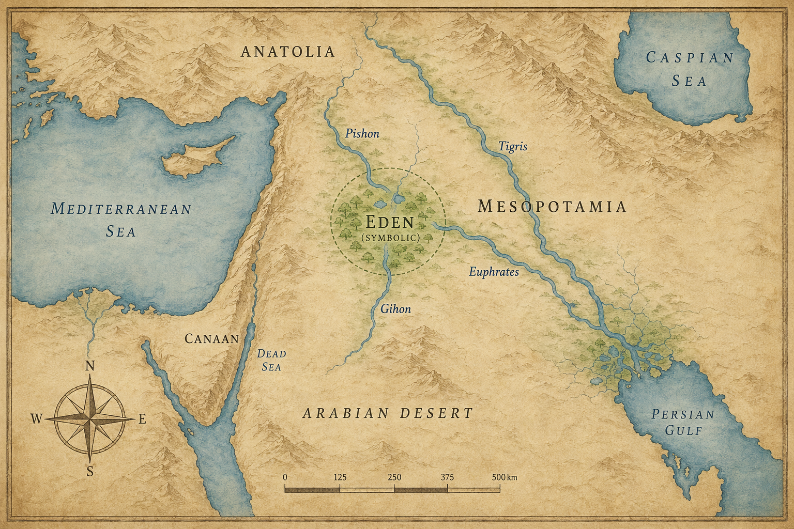
지도 1. 창세기 1~2장 배경: 에덴과 네 강의 상징적 배치.
1 하늘과 땅, 그 안의 모든 것이 이렇게 다 만들어졌다.
2 하나님은 일곱째 날에 자기 일을 다 마치셨다. 그리고 그 날에 쉬셨다.
3 하나님은 일곱째 날을 복되게 하시고, 거룩한 날로 정하셨다. 세상이 처음으로 숨을 돌린 날이었다.
인류가 수천 년 뒤 ’주말’이라 부를 개념의 원본이, 이 날 등록되었다.
4 하늘과 땅이 만들어진 이야기는 이렇다. 여호와 하나님이 땅과 하늘을 만드시던 그 날,
5 땅에는 아직 들풀 하나 자라지 않았고 채소 하나 돋아나지 않았다. 여호와 하나님이 땅에 아직 비를 내리지 않으셨고, 땅을 갈 사람도 없었기 때문이다.
6 대신 땅에서 안개가 피어올라 땅 전체를 적셨다.
7 그리고 여호와 하나님은 땅의 흙으로 사람을 빚으셨다. 그 코에 생명의 숨을 불어넣으시자, 사람이 살아있는 존재가 되었다.
1장 27절이 “남자와 여자로 창조하셨다”라는 요약 카메라였다면, 이 2장 7절은 그 창조 장면의 슬로모션 리플레이다.
8 여호와 하나님은 동쪽에 에덴(Eden) 이라는 땅에 정원 하나를 만드셨다. 그리고 방금 빚으신 사람을 그곳에 두셨다.
에덴의 좌표는 본문에 없다. 다만 이어지는 네 강 이름이 힌트다 — 학자들 대부분은 현대 이라크 남부, 페르시아만에 가까운 메소포타미아 일대로 추정한다.
9 여호와 하나님은 보기에 아름답고 먹기에 좋은 온갖 나무를 땅에서 자라게 하셨다. 그리고 정원 한가운데 두 그루의 특별한 나무를 심으셨다.
10 에덴에서 강 하나가 흘러나와 정원을 적셨다. 정원을 지나며 네 갈래로 갈라졌다.
11 첫째 강은 비손(Pishon) 이다. 하윌라(Havilah) 온 땅을 감싸고 흐른다. > 하윌라는 현대 아라비아 반도 어딘가로 추정된다. 비손강은 지금의 지도에 남아있지 않다.
12 그 땅에서는 순금이 난다. 향료로 쓰는 베델리엄과 호마노 보석도 난다.
13 둘째 강은 기혼(Gihon) 이다. 구스(Cush) 온 땅을 감싸고 흐른다. > 구스는 일반적으로 현재 수단·에티오피아 일대를 가리킨다. 일설로는 기혼이 나일강의 옛 이름이다.
14 셋째 강은 힛데겔(Hiddekel), 오늘날의 티그리스강이다. 앗수르(Asshur) 앞으로 흐른다 — 훗날 아시리아 제국이 일어날 현대 이라크 북부다.
넷째 강은 유브라데(Euphrates), 오늘날의 유프라테스강이다.
두 강은 여전히 현대 이라크를 가로지르며 흐르고 있다. 에덴의 좌표가 완전히 지워지지는 않은 셈이다.
15 여호와 하나님은 사람을 에덴 정원으로 데려가, 그곳을 경작하고 지키게 하셨다.
‘관리’가 아니라 ’경작하고 지키는’ 일이었다. 놀고먹는 게 아니다. 인간에게는 처음부터 ’일’이 주어졌다. 다만 아직 ’노동의 고통’은 없었다.
16 여호와 하나님이 그 사람에게 말씀하셨다.
“정원에 있는 모든 나무의 열매는 마음대로 먹어도 된다.”
17 “단, 선악을 알게 하는 나무의 열매만은 먹지 마라. 먹는 날에는 반드시 죽는다.”
에덴 캠퍼스의 단 하나의 규정이었다.
18 여호와 하나님이 말씀하셨다.
“사람이 혼자 있는 것이 좋지 않다. 그에게 어울리는 짝을 만들어주겠다.”
6일 내내 “좋다, 좋다”만 연발하시던 하나님이, 처음으로 입 밖에 내신 부정 평가였다.
19 여호와 하나님은 땅의 모든 들짐승과 공중의 모든 새를 사람 앞으로 데려오셨다. 사람이 각 생물을 뭐라고 부르는지 보시려는 것이었다. 사람이 부른 그 이름이, 그 생물의 이름이 되었다.
20 사람은 모든 가축, 공중의 새, 들짐승에게 이름을 붙였다. 인류 최초의 생물 분류학이었다.
그러나 — 그 어느 생물도 그의 짝은 되지 못했다.
사자는 멋졌지만 대화가 안 됐다. 독수리는 아름다웠지만 같은 자리에 서 있지 않았다. 양은 따뜻했지만 눈을 마주 바라보지 않았다. 사람은 마지막 동물에게 이름을 붙이고 나서, 처음으로 외로움이라는 감정이 뭔지 짐작하기 시작했다.
21 여호와 하나님이 사람에게 깊은 잠을 내리셨다. 사람이 잠든 사이, 하나님은 그의 갈비뼈 하나를 꺼내시고 살로 그 자리를 메우셨다.
전신 마취의 원형이다.
22 그 갈비뼈로 여호와 하나님은 여자를 만드셨다. 그리고 여자를 사람에게 데려오셨다.
23 사람이 깨어났다. 자기 앞에 서 있는 또 한 명의 사람을 보았다.
그리고 인류 최초의 시(詩)가 그의 입에서 흘러나왔다.
“이것이야말로 내 뼈 중의 뼈, 내 살 중의 살이다. 남자에게서 나왔으니, ’여자’라 부르리라.”
히브리어로 남자는 ‘이쉬(אִישׁ)’, 여자는 ‘이샤(אִשָּׁה)’. 발음부터 한 쌍이다.
24 그래서 남자는 부모를 떠나 아내와 연합하여, 둘이 한 몸이 된다.
전 세계 모든 결혼 서약문의 뿌리가 되는 문장이 여기서 나왔다.
25 그때 남자와 여자는 둘 다 벌거벗은 채였지만, 부끄러워하지 않았다.
’부끄러움’이라는 감정이 아직 발명되지 않았기 때문이다.
다음 장 — 정원에 방문객이 나타난다. 모든 짐승 중 가장 영리한 자, 말을 걸 줄 아는 뱀이다.
1 여호와 하나님이 만드신 들짐승 가운데 가장 영리한 것은 뱀이었다.
뱀이 여자에게 말을 걸었다.
“하나님이 정말로 ’정원의 나무 열매는 모두 먹지 말라’고 하셨습니까?”
질문의 형태를 띠었지만, 질문이 아니었다. 왜곡이었다.
2 여자가 대답했다.
“아니에요. 정원 나무 열매는 먹어도 됩니다.”
3 “하지만 정원 한가운데 있는 나무 열매만은 먹지 말라고 하셨어요. 만지지도 말라고요. 먹으면 죽는다고 하셨습니다.”
4 뱀이 말했다.
“절대 죽지 않습니다.”
5 “하나님이 그 말씀을 하신 이유가 따로 있습니다. 그걸 먹는 날, 여러분의 눈이 열려서 하나님처럼 됩니다. 선과 악을 알게 되거든요.”
짧은 말이었다. 그러나 그 안에 세 가지가 들어 있었다.
하나님의 말씀은 틀렸다는 것. 하나님에게 숨겨진 의도가 있다는 것. 그리고 그 나무는 당신을 더 낫게 만든다는 것.
6 여자는 나무를 바라보았다.
보기에 좋았다. 먹음직스러웠다. 그리고 — 지혜롭게 해줄 것 같았다.
여자는 열매를 따서 먹었다. 그리고 함께 있던 남자에게도 주었다. 남자도 먹었다.
성경 본문에서 남자는 아무 말 하지 않는다. 뱀과 논쟁하지도, 거절하지도 않았다. 그냥 받아먹었다.
7 그 순간 두 사람의 눈이 밝아졌다.
그들이 처음으로 깨달은 것은 — 자신들이 벌거벗었다는 사실이었다.
그들은 무화과 잎을 엮어 몸을 가렸다. 에덴에서의 첫 번째 제작물이었다.
8 서늘한 바람이 불기 시작하는 시간, 여호와 하나님이 정원을 거니시는 소리가 들렸다.
남자와 여자는 나무 사이에 숨었다.
9 여호와 하나님이 남자를 부르셨다.
“네가 어디 있느냐?”
10 남자가 답했다.
“정원에서 하나님 발소리를 들었습니다. 제가 벗었기에 두려워서 숨었습니다.”
11 하나님이 말씀하셨다.
“누가 네가 벗었다고 알려주었느냐? 내가 먹지 말라고 한 나무 열매를 네가 먹었느냐?”
12 남자가 말했다.
“하나님이 저와 함께 살라고 주신 여자가, 그 나무 열매를 제게 주었습니다. 그래서 먹었습니다.”
범인을 지목하는 속도가 빨랐다. 이틀 전 “내 뼈 중의 뼈”라고 시를 읊었던 그 남자다.
13 여호와 하나님이 여자에게 말씀하셨다.
“네가 어찌 이런 일을 하였느냐?”
“뱀이 저를 꾀었습니다. 그래서 먹었습니다.”
14 여호와 하나님이 뱀에게 말씀하셨다.
“네가 이 일을 하였으니, 모든 가축과 들짐승보다 더 저주를 받아, 배로 기어다니고, 평생 흙을 먹을 것이다.”
15 “내가 너와 여자 사이에, 네 자손과 여자의 자손 사이에 원수를 두겠다. 여자의 자손은 네 머리를 짓밟을 것이고, 너는 그의 발꿈치를 물 것이다.”
이 한 절이 수천 년에 걸쳐 수없이 해석되었다. ’여자의 자손’이 누구냐는 질문과 함께.
16 여자에게는 이렇게 말씀하셨다.
“내가 너의 임신과 출산의 고통을 크게 더할 것이다. 너는 남편을 원하고 사모하겠지만, 남편이 너를 다스릴 것이다.”
17 남자에게는 이렇게 말씀하셨다.
“네 아내의 말을 듣고 내가 먹지 말라고 명한 나무 열매를 먹었으니, 땅이 너로 인해 저주를 받을 것이다. 너는 평생 수고해야 먹을 것을 먹을 것이다.”
18 “땅은 네게 가시와 엉겅퀴를 낼 것이며, 너는 들의 채소를 먹을 것이다.”
19 “네가 흙으로 돌아갈 때까지 얼굴에 땀을 흘려야 먹을 것을 먹을 것이다. 네가 흙에서 났으니, 흙으로 돌아갈 것이다.”
20 남자는 아내의 이름을 하와(Havvah) 라고 지었다. 모든 살아있는 것의 어머니라는 뜻이었다.
21 여호와 하나님은 남자와 여자를 위해 가죽옷을 만들어 입히셨다.
무화과 잎은 오래가지 못한다. 짐승 한 마리가 죽었다. 가죽을 위해. 에덴에서의 첫 번째 피였다.
22 여호와 하나님이 말씀하셨다.
“이 사람이 선과 악을 아는 일에서 우리 중 하나처럼 되었다. 이제 그가 생명나무 열매도 따먹고 영원히 살게 될까 두렵다.”
23 그래서 여호와 하나님은 그를 에덴(Eden — 메소포타미아 남부) 정원에서 내보내셨다. 그가 원래 나온 흙을 경작하게 하시려는 것이었다.
24 하나님은 그를 쫓아내신 뒤, 에덴 정원 동쪽에 그룹(Cherubim — 천사의 일종) 들과 사방으로 번쩍이는 불칼을 두어, 생명나무로 가는 길을 막으셨다.
에덴의 문은 이렇게 닫혔다. 안에서가 아니라 밖에서.
다음 장 — 에덴 밖에서 두 아들이 태어난다. 하나는 땅을 갈고, 하나는 양을 친다. 그리고 인류 역사상 최초의 살인이 일어난다.
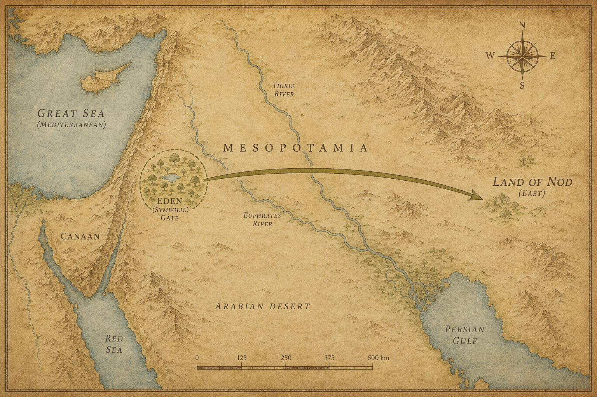
지도 2. 창세기 3~4장 배경: 에덴 동쪽, 놋 땅으로의 이동.
1 아담이 아내 하와와 동침하였다. 하와가 임신하여 가인을 낳았다.
“내가 여호와의 도움으로 남자를 얻었다.”
2 하와는 또 가인의 동생 아벨을 낳았다.
아벨은 양을 치는 자가 되었고, 가인은 땅을 경작하는 자가 되었다.
3 세월이 흘렀다. 가인은 땅의 소산 일부를 가져다가 여호와께 제물로 드렸다.
4 아벨도 자기 양 떼 가운데 첫 새끼, 그것도 기름진 부분을 가져다 드렸다.
여호와께서 아벨과 그의 제물은 받으셨다.
5 그러나 가인과 그의 제물은 받지 않으셨다.
본문은 이유를 설명하지 않는다. 다만 아벨은 ’첫 것’을 가져왔고, 가인은 그냥 ’일부’를 가져왔다는 차이만 있다.
가인이 몹시 분노했다. 얼굴이 일그러졌다.
6 여호와께서 가인에게 말씀하셨다.
“네가 어찌 분노하느냐? 어찌 얼굴을 떨어뜨리느냐?”
7 “네가 올바르게 행하면 낯을 들 수 있지 않겠느냐? 올바르게 행하지 않으면 죄가 문 앞에 엎드려 있다. 죄가 너를 원하지만, 너는 죄를 다스려야 한다.”
경고였다. 명확한 경고였다.
8 가인이 동생 아벨에게 말했다.
“우리 들판으로 나가자.”
둘이 들판에 나갔다. 가인이 동생 아벨을 쳐 죽였다.
성경에서 가장 짧고 가장 무거운 장면 중 하나다. 인류 역사상 첫 번째 살인. 형이 동생을. 피가 땅에 스몄다.
9 여호와께서 가인에게 말씀하셨다.
“네 동생 아벨이 어디 있느냐?”
가인이 대답했다.
“모릅니다. 제가 동생을 지키는 자입니까?”
10 여호와께서 말씀하셨다.
“네가 무슨 일을 하였느냐. 네 동생의 핏소리가 땅에서 내게 호소하고 있다.”
11 “땅이 그 입을 벌려 네 손에서 동생의 피를 받았으니, 이제 너는 이 땅에서 저주를 받는다.”
12 “네가 땅을 갈아도 땅이 다시는 네게 그 힘을 주지 않을 것이다. 너는 땅 위에서 방랑자가 될 것이다.”
13 가인이 여호와께 말했다.
“제 벌이 너무 무거워 감당할 수 없습니다.”
14 “오늘 주께서 저를 이 땅 위에서 쫓아내시니, 저는 주의 얼굴을 뵙지 못할 것이고, 땅 위에서 방랑자가 됩니다. 저를 만나는 자마다 저를 죽이겠습니다.”
15 여호와께서 말씀하셨다.
“그렇지 않다. 가인을 죽이는 자는 일곱 배로 벌을 받을 것이다.”
여호와께서 가인에게 표를 주셨다. 그를 만나는 자가 죽이지 못하도록 하기 위해서였다.
형벌은 죽음이 아니었다. 더 가혹한 것 — 평생의 유랑이었다. 그리고 하나님은 그 유랑자를 보호하셨다.
16 가인은 여호와 앞을 떠나 놋(Nod — 에덴 동쪽, 정확한 위치 불명) 땅에 정착했다.
17 가인이 아내와 동침하자 아내가 임신하여 에녹을 낳았다. 가인은 도시를 건설하고 아들 이름을 따서 도시 이름을 에녹이라 하였다.
아담과 하와 외에 다른 사람들이 등장한다. ’가인의 아내’는 어디서 왔는가 — 본문은 설명하지 않는다.
18 에녹에서 이랏이, 이랏에서 므후야엘이, 므후야엘에서 므드사엘이, 므드사엘에서 라멕이 태어났다.
19 라멕은 두 여자를 아내로 맞았다. 하나는 아다, 하나는 씰라였다.
성경에서 처음 등장하는 일부다처제다. 무덤덤하게 기록되어 있다.
20 아다는 야발을 낳았다. 야발은 천막에 살며 가축을 치는 자의 조상이 되었다.
21 야발의 동생은 유발이었다. 유발은 수금과 퉁소를 다루는 자의 조상이 되었다.
농업, 목축, 음악. 문명의 원형들이 하나씩 자리를 잡고 있다.
22 씰라도 두발가인을 낳았다. 그는 구리와 쇠로 각종 기구를 만드는 장인이었다. 두발가인의 누이는 나아마였다.
야금술이다. 이제 금속이 등장했다.
23 라멕이 두 아내에게 말했다.
“아다와 씰라여, 내 말을 들어라. 라멕의 아내들이여, 내 말에 귀를 기울여라. 나는 내 상처에 대해 사람을 죽였고, 내 손이 상하게 한 것에 대해 젊은이를 죽였다.”
24 “가인을 위해 일곱 배의 복수가 있다면, > 라멕을 위해서는 일흔일곱 배이리라.”
자랑이다. 살인을 자랑하는 노래다. 불과 몇 세대 만에 가인의 후예는 복수를 미덕으로 노래하는 데까지 왔다.
25 아담이 다시 아내와 동침하였다. 아내가 아들을 낳았다. 그의 이름을 셋이라 하였다.
“하나님이 내게 가인이 죽인 아벨 대신 다른 씨앗을 주셨다.”
26 셋도 아들을 낳았다. 이름을 에노스라 하였다.
그때였다. 사람들이 여호와의 이름을 부르기 시작했다.
살인과 복수의 노래가 흐르는 세상에서, 한쪽에서는 하나님의 이름을 부르는 사람들이 생겨나고 있었다. 두 흐름이 처음으로 갈라졌다.
다음 장 — 아담에서 노아까지. 수백 년씩 살다 죽는 이름들이 줄줄이 이어진다. 그 긴 명단 사이에, 죽지 않고 사라진 한 사람이 있다.
1 이것은 아담의 계보다.
하나님이 사람을 창조하실 때, 하나님의 형상대로 만드셨다.
2 남자와 여자로 창조하시고 복을 주셨다. 창조하신 날에 그 이름을 ’사람’이라 하셨다.
3 아담은 130세에 자기 형상, 자기 모양대로 아들을 낳았다. 이름을 셋이라 하였다.
4 셋을 낳은 후 아담은 800년을 더 살며 자녀들을 낳았다.
5 아담의 나이는 모두 930세였다. 그리고 죽었다.
“그리고 죽었다” — 이 구절이 이 장에서 반복된다. 마치 종소리처럼.
6 셋은 105세에 에노스를 낳았다.
7 에노스를 낳은 후 807년을 더 살며 자녀들을 낳았다.
8 셋의 나이는 모두 912세였다. 그리고 죽었다.
9 에노스는 90세에 게난을 낳았다.
10 게난을 낳은 후 815년을 더 살며 자녀들을 낳았다.
11 에노스의 나이는 모두 905세였다. 그리고 죽었다.
12 게난은 70세에 마할랄렐을 낳았다.
13 마할랄렐을 낳은 후 840년을 더 살며 자녀들을 낳았다.
14 게난의 나이는 모두 910세였다. 그리고 죽었다.
15 마할랄렐은 65세에 야렛을 낳았다.
16 야렛을 낳은 후 830년을 더 살며 자녀들을 낳았다.
17 마할랄렐의 나이는 모두 895세였다. 그리고 죽었다.
18 야렛은 162세에 에녹을 낳았다.
19 에녹을 낳은 후 800년을 더 살며 자녀들을 낳았다.
20 야렛의 나이는 모두 962세였다. 그리고 죽었다.
21 에녹은 65세에 므두셀라를 낳았다.
22 므두셀라를 낳은 후 에녹은 300년을 하나님과 함께 걸으며 자녀들을 낳았다.
23 에녹의 나이는 모두 365세였다.
24 에녹은 하나님과 함께 걷다가 — 하나님이 그를 데려가시므로 세상에 있지 않게 되었다.
“그리고 죽었다”가 없다. 아홉 명 중 오직 에녹에게만.
365년. 다른 사람들에 비하면 짧은 편이다. 그러나 그는 죽지 않았다. 하나님이 데려가셨다. 성경 전체에서 죽음 없이 사라진 사람은 손에 꼽힌다. 에녹이 그 첫 번째다.
25 므두셀라는 187세에 라멕을 낳았다.
26 라멕을 낳은 후 782년을 더 살며 자녀들을 낳았다.
27 므두셀라의 나이는 모두 969세였다. 그리고 죽었다.
성경에 기록된 가장 오래 산 사람이다. 그의 이름은 오늘날까지 ’장수’의 대명사로 쓰인다.
28 라멕은 182세에 아들을 낳았다.
29 그 이름을 노아라 하며 말하였다.
“여호와께서 땅을 저주하심으로 힘들게 일하는 우리를, 이 아이가 위로할 것이다.”
‘노아(Noah)’는 히브리어로 ’안식’, ’위로’에서 온 이름이다. 라멕은 아들을 안고서 예언처럼 말했다.
30 노아를 낳은 후 라멕은 595년을 더 살며 자녀들을 낳았다.
31 라멕의 나이는 모두 777세였다. 그리고 죽었다.
32 노아는 500세가 된 후에 셈, 함, 야벳을 낳았다.
아담 130세 → 셋. 므두셀라 187세 → 라멕. 라멕 182세 → 노아. 노아 500세 → 셋 아들들.
수백 년이 쌓이고 쌓인 족보다. 그 긴 시간 위로 이름들이 하나씩 스쳐 지나간다. 930세, 912세, 905세 — 숫자들이 줄어들고 있다. 아직은 미미하지만, 방향은 분명하다. 아래로.
다음 장 — 족보가 끝나자마자, 하늘 아래 다른 일이 벌어지기 시작한다. 땅 위의 죄악이 가득 찼다. 하나님이 만드신 것을 후회하셨다. 그리고 노아에게 배를 설계하는 명령이 내려진다.
1 사람이 땅 위에 많아지기 시작하더니 딸들이 태어났다.
2 하나님의 아들들이 사람의 딸들이 아름다운 것을 보고 자기들이 좋아하는 자를 아내로 삼았다.
’하나님의 아들들’이 누구냐를 두고 해석이 오래 갈렸다 — 천사들인가, 경건한 셋의 후손인가, 고대 권력자들인가. 본문은 설명하지 않는다.
3 여호와께서 말씀하셨다.
“내 영이 사람과 영원히 함께하지 않을 것이다. 이는 사람이 육신이기 때문이다. 그러나 그의 날은 120년이 될 것이다.”
심판의 유예였다. 120년의 시한이 주어졌다.
4 당시에 땅에 네피림(Nephilim) 이 있었다. 하나님의 아들들이 사람의 딸들과 결합하여 자녀를 낳던 그 시절에도 있었다. 그들은 고대의 영웅이요, 이름 높은 용사들이었다.
네피림 — ’쓰러뜨리는 자들’이라는 뜻으로도 해석된다. 그 정체는 신화와 역사 사이 어딘가에 있다.
5 여호와께서 사람의 죄악이 세상에 가득 찬 것을 보셨다. 마음으로 생각하는 모든 계획이 항상 악할 뿐이었다.
6 여호와께서 땅 위에 사람 만드신 것을 후회하시며 마음 아파하셨다.
7 여호와께서 말씀하셨다.
“내가 창조한 사람을 땅 위에서 쓸어버리겠다. 사람부터 가축, 기는 것, 공중의 새까지. 내가 그것들을 만든 것이 후회스럽다.”
창조주가 자신의 작품을 보며 후회하신다는 것 — 이 장면의 무게는 쉽게 지나쳐서는 안 된다.
8 그러나 노아는 여호와께 은총을 입었다.
9 이것은 노아의 이야기다.
노아는 의인이었다. 당시 세대에서 흠 없는 자였다. 하나님과 함께 걸었다.
에녹도 하나님과 함께 걸었다. 그리고 죽지 않았다. 노아도 함께 걸었다. 그에게도 무언가 다른 일이 일어날 것이다.
10 노아는 세 아들, 곧 셈, 함, 야벳을 낳았다.
11 하나님 앞에서 땅이 썩었다. 땅에 포악함이 가득 찼다.
12 하나님이 땅을 보시니 썩어 있었다. 육체를 가진 모든 자가 땅 위에서 그 행위를 썩게 했기 때문이다.
13 하나님이 노아에게 말씀하셨다.
“모든 육체의 끝이 내 앞에 이르렀다. 그들로 인해 포악함이 땅에 가득하니, 내가 그들을 땅과 함께 멸하겠다.”
14 “너는 고페르(gopher) 나무로 방주를 만들어라. 그 안에 칸들을 만들고, 안팎으로 역청을 칠하라.”
15 “방주의 크기는 이렇다. 길이 300규빗, 너비 50규빗, 높이 30규빗.”
300규빗 × 50규빗 × 30규빗 — 환산하면 약 137m × 23m × 14m. 3층 구조. 현대 기준으로도 작지 않은 선박이다.
16 “방주에 창을 내되 위에서 한 규빗 아래에 내고, 방주 옆에 문을 내고, 3층으로 만들어라.”
17 “내가 땅 위에 홍수를 일으켜 하늘 아래 숨 쉬는 모든 육체를 멸할 것이다. 땅 위의 모든 것이 죽을 것이다.”
18 “그러나 내가 너와 내 약속(언약)을 세울 것이다. 너와 네 아들들, 네 아내와 며느리들이 방주로 들어올 것이다.”
19 “모든 생물을 종류대로 두 마리씩, 암수 한 쌍씩 방주로 데려와 너와 함께 살아남게 하라.”
20 “새가 그 종류대로, 가축이 그 종류대로, 땅에 기는 모든 것이 그 종류대로, 각 두 마리씩 네게로 나아와 살아남게 하라.”
21 “너는 먹을 수 있는 모든 음식을 가져다가 저장해 두어라. 너와 그들의 먹을 것이 될 것이다.”
22 노아는 하나님이 자기에게 명하신 대로 다 행하였다.
단 한 줄의 반응이다. 반론도 없고, 질문도 없다. 다 행하였다.
다음 장 — 방주가 완성되고, 탑승이 시작된다. 7일 후, 하늘의 창이 열리고 깊음의 샘이 터진다. 그리고 세상이 물에 잠긴다.
1 여호와께서 노아에게 말씀하셨다.
“너와 네 온 가족은 방주로 들어가라. 이 세대에서 네가 내 앞에 의로운 것을 내가 보았다.”
2 “모든 정결한 짐승은 암수 일곱 쌍씩, 부정한 짐승은 암수 한 쌍씩 네게로 데려가라.”
3 “공중의 새도 암수 일곱 쌍씩 데려가라. 온 땅 위에 씨를 살려두려는 것이다.”
4 “지금부터 7일 후에 내가 40일 동안 밤낮으로 땅에 비를 내릴 것이다. 내가 만든 모든 생물을 땅 위에서 쓸어버리겠다.”
5 노아는 여호와께서 명하신 대로 다 행하였다.
6 홍수가 땅에 일어났을 때 노아는 600세였다.
7 노아는 홍수를 피해 아들들과 아내와 며느리들과 함께 방주로 들어갔다.
8 정결한 짐승과 부정한 짐승, 새와 땅에 기는 모든 것이,
9 암수 한 쌍씩 하나님이 노아에게 명하신 대로 방주로 들어갔다.
10 7일이 지나자 홍수가 땅 위에 일어났다.
11 노아의 나이 600세 되던 해 둘째 달 17일, 그날에 큰 깊음의 샘들이 다 터지고 하늘의 창문들이 열렸다.
하늘 위와 땅 아래, 양쪽에서 동시에 터졌다. 위의 물과 아래의 물 — 2장에서 갈라놓았던 그 물들이 돌아오고 있었다.
12 40일 동안 밤낮으로 땅에 비가 쏟아졌다.
13 바로 그날 노아와 그의 아들 셈, 함, 야벳, 노아의 아내와 세 며느리가 함께 방주로 들어갔다.
14 그들과 함께 모든 들짐승이 그 종류대로, 모든 가축이 그 종류대로, 땅에 기는 모든 것이 그 종류대로, 모든 새가 그 종류대로,
15 숨 쉬는 모든 육체 가운데 암수 한 쌍씩 노아에게 나아와 방주로 들어갔다.
16 하나님이 명하신 대로 들어갔다. 여호와께서 방주 문을 닫으셨다.
노아가 닫은 것이 아니다. 하나님이 닫으셨다.
17 40일 동안 홍수가 땅 위에 있었다. 물이 불어나 방주를 들어올렸다. 방주가 땅에서 떠올랐다.
18 물이 더 많아져 땅 위에 크게 불어났다. 방주는 수면 위를 떠다녔다.
19 물이 땅 위에 넘쳤다. 하늘 아래 높은 산들이 다 잠겼다.
20 물이 더 불어나 산들을 덮되 15규빗 더 덮었다.
15규빗은 약 7미터. 가장 높은 봉우리 위로도 7미터의 물이 있었다는 말이다.
21 땅 위에 움직이는 모든 생물이 죽었다. 새와 가축과 들짐승과 땅에 기는 모든 것과 모든 사람이.
22 육지에 있는 것들 중 숨 쉬는 모든 것이 다 죽었다.
23 땅 위의 모든 생물을 쓸어버리셨다. 사람과 가축과 기는 것과 공중의 새까지. 땅 위에서 쓸어버리셨다. 오직 노아와 그와 함께 방주에 있던 자들만 남았다.
24 물이 땅 위에 150일 동안 넘쳤다.
40일의 비, 그 다음 150일의 물. 방주 안에서의 시간이 얼마나 길었을지 — 동물들의 소리, 흔들리는 배, 그리고 창밖으로는 끝없는 물.
다음 장 — 하나님이 노아를 기억하셨다. 바람이 불기 시작한다. 물이 줄어들기 시작한다. 그리고 아라라트산 꼭대기가 수면 위로 드러난다.
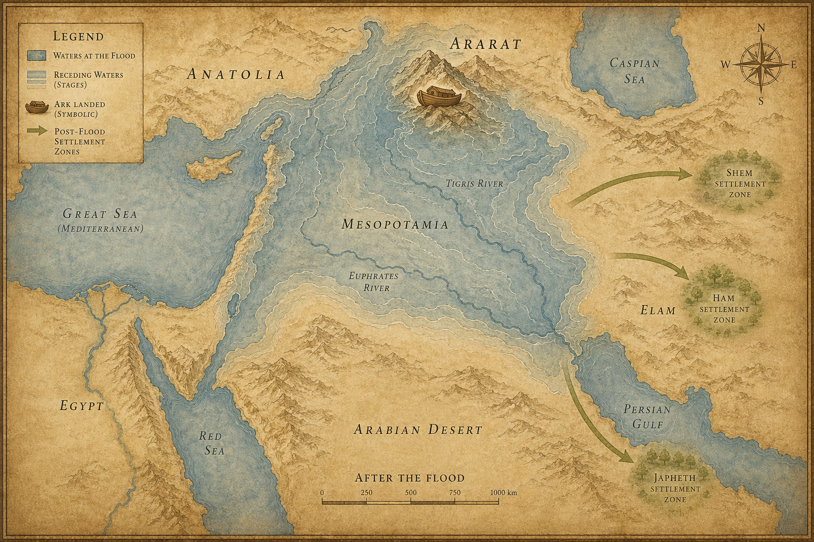
지도 3. 창세기 6~9장 배경: 홍수 이후 아라랏 정착의 상징 지도.
1 하나님이 노아와 그와 함께 방주에 있는 모든 들짐승과 모든 가축을 기억하셨다.
하나님이 바람을 땅 위에 불게 하시자 물이 줄어들기 시작했다.
‘기억하셨다’ — 히브리어로 ‘자카르(זָכַר)’. 단순히 생각났다는 뜻이 아니다. 관심을 기울이고 행동으로 옮기기 시작했다는 의미다.
2 큰 깊음의 샘들과 하늘의 창문들이 닫혔다. 하늘에서 쏟아지던 비가 그쳤다.
3 물이 땅에서 물러가며 점점 줄어들었다. 150일이 지나자 물이 줄었다.
4 일곱째 달 열일곱째 날, 방주가 아라랏(Ararat — 터키 동부 아라라트산) 산 위에 머물렀다.
5 물이 계속 줄어들더니 열째 달 첫째 날에 산들의 봉우리들이 보이기 시작했다.
6 40일이 지났다. 노아가 방주에 낸 창문을 열었다.
7 까마귀를 내보냈다. 까마귀는 물이 땅에서 마를 때까지 왔다 갔다 하였다.
8 이번에는 비둘기를 내보냈다. 땅 위에 물이 줄었는지 알아보려는 것이었다.
9 비둘기는 발 붙일 곳을 찾지 못하고 방주로 돌아왔다. 물이 아직 온 땅에 있었기 때문이다. 노아가 손을 내밀어 비둘기를 받아 방주 안으로 들였다.
10 7일을 더 기다렸다가 다시 비둘기를 방주에서 내보냈다.
11 저녁때 비둘기가 돌아왔다. 부리에 감람나무 잎사귀를 물고 있었다. 물이 빠지고 있다는 신호였다. 노아는 그것을 보고 땅에서 물이 줄어든 것을 알았다.
감람나무 가지를 문 비둘기 — 이후 수천 년 동안 평화와 희망의 상징이 된다.
12 7일을 또 기다렸다가 비둘기를 내보냈다. 비둘기는 다시는 돌아오지 않았다.
13 노아의 나이 601세 첫째 달 첫째 날, 땅 위의 물이 걷혔다. 노아가 방주 덮개를 걷어내고 내다보니 땅 표면이 마르기 시작했다.
14 둘째 달 스물일곱째 날, 땅이 완전히 말랐다.
15 하나님이 노아에게 말씀하셨다.
16 “너는 네 아내와 아들들과 며느리들과 함께 방주에서 나오너라.”
17 “네게 있는 모든 생물, 곧 새와 가축과 땅에 기는 모든 것을 다 이끌고 나오너라. 그들이 땅에서 많은 자녀를 낳고 번성하게 하여라.”
18 노아가 아들들과 아내와 며느리들과 함께 나왔다.
19 모든 짐승과 기는 것과 새, 땅 위의 모든 생물이 종류대로 방주에서 나왔다.
방주에 들어간 순서의 역순으로 나왔다. 세상이 다시 채워지기 시작했다.
20 노아가 여호와를 위해 제단을 쌓았다. 모든 정결한 짐승과 모든 정결한 새 가운데서 골라 제단 위에 번제로 드렸다.
21 여호와께서 그 향기를 맡으시고 마음에 말씀하셨다.
“내가 다시는 사람으로 말미암아 땅을 저주하지 않겠다. 사람이 마음으로 생각하는 바가 어려서부터 악하지만, 내가 다시는 내가 행한 것처럼 모든 생물을 멸하지 않겠다.”
홍수 이전과 이후, 하나님의 평가는 같다 — 사람의 마음은 악하다(6:5, 8:21). 달라진 것은 결론이다. 이전에는 그것이 심판의 이유였다. 이후에는 용납의 근거가 된다.
22 “땅이 있는 한 심음과 거둠, 추위와 더위, 여름과 겨울, 낮과 밤이 쉬지 않을 것이다.”
다음 장 — 하나님이 노아와 약속(언약)을 맺으신다. 하늘에 무지개가 걸린다. 그리고 방주에서 내린 노아가 포도원을 가꾸다가, 취해 쓰러진다. 세 아들의 운명이 그 밤에 갈린다.
1 하나님이 노아와 그 아들들에게 복을 주시며 말씀하셨다.
“많은 자녀를 낳고 번성하여 땅에 가득 차라.”
1장 28절의 그 명령이 다시 내려졌다. 리셋이었다.
2 “땅의 모든 짐승과 공중의 모든 새와 땅에 기는 모든 것과 바다의 모든 물고기가 너희를 두려워하고 무서워할 것이다. 이것들은 너희 손에 맡겼다.”
에덴에서 아담은 짐승들의 이름을 지었다. 그 관계는 평화로웠다. 이제는 다르다. 짐승들이 사람을 두려워한다. 무언가 근본적으로 바뀌었다.
3 “살아 움직이는 모든 것은 너희 음식이 될 것이다. 내가 채소를 준 것처럼 모든 것을 너희에게 준다.”
4 “그러나 고기를 그 생명 되는 피째 먹지 마라.”
5 “내가 반드시 너희 피, 곧 너희 생명의 피를 찾겠다. 짐승에게서도 찾겠고, 사람에게서도 찾겠다. 사람의 형제에게서도 찾겠다.”
6 “다른 사람의 피를 흘리면, 그 사람의 피도 흘릴 것이다. 하나님이 자기 형상대로 사람을 지으셨기 때문이다.”
7 “너희는 많은 자녀를 낳고 번성하며 땅에 가득 차서 그 안에서 번성하라.”
8 하나님이 노아와 그 아들들에게 말씀하셨다.
9 “내가 너희와 너희 후손과 약속(언약)을 세울 것이다.”
10 “그리고 너희와 함께한 모든 생물, 곧 방주에서 나온 새와 가축과 모든 들짐승과도 약속을 세울 것이다.”
11 “내가 너희와 약속을 세우리니, 다시는 모든 육체가 홍수로 멸절되지 않겠고, 다시는 홍수로 땅을 멸하지 않겠다.”
12 하나님이 말씀하셨다.
13 “내가 내 무지개를 구름 속에 두었나니, 이것이 나와 세상 사이의 약속의 표시다.”
14 “내가 구름으로 땅을 덮을 때에 무지개가 구름 속에 나타나면,”
15 “내가 나와 너희와 모든 생물 사이의 내 약속을 기억하겠다. 다시는 물이 모든 육체를 멸하는 홍수가 되지 않을 것이다.”
16 “무지개가 구름 속에 있으리니, 내가 보고 하나님과 땅의 모든 생물 사이의 영원한 약속을 기억하겠다.”
17 하나님이 노아에게 말씀하셨다.
“이것이 내가 나와 땅 위의 모든 육체 사이에 세운 약속의 표시다.”
하나님이 먼저 지키겠다고 하셨다. 사람이 아니라 하나님이 표시를 보고 기억하겠다고 하셨다. 일방적인 약속이다.
18 방주에서 나온 노아의 아들들은 셈과 함과 야벳이었다. 함은 가나안의 아버지였다.
19 이 세 사람이 노아의 아들들이니, 온 땅의 사람들이 이들에게서 퍼져 나갔다.
20 노아가 농부가 되어 포도원을 가꾸기 시작했다.
21 포도주를 마시고 취하여 그 천막 안에 벌거벗고 누웠다.
22 가나안의 아버지 함이 아버지의 벌거벗은 것을 보고 밖에 있는 두 형제에게 알렸다.
함이 무엇을 했는지 본문은 ’보고 알렸다’고만 한다. 그러나 이어지는 저주의 강도로 보아 단순한 실수가 아니었을 것이라는 해석이 많다.
23 셈과 야벳이 옷을 가져다가 자기들의 어깨에 메고 뒷걸음쳐 들어가서 아버지의 벌거벗은 몸을 덮었다. 그들의 얼굴은 돌린 채였으므로 아버지의 벌거벗은 것을 보지 않았다.
24 노아가 술에서 깨어나 작은 아들이 자기에게 행한 일을 알고,
25 말하였다.
“가나안은 저주를 받아 형제들의 가장 낮은 종이 되리라.”
26 또 말하였다.
“셈의 하나님 여호와를 찬송하리로다. 가나안은 셈의 종이 되리라.”
27 “하나님이 야벳을 크게 하사 셈의 천막에 살게 하시고, 가나안은 그의 종이 되리라.”
저주받은 것은 함이 아니라 함의 아들 가나안이었다. 이후 이스라엘이 가나안 땅을 정복하는 역사와 이 저주가 연결된다. 그러나 저주는 예언이지, 정당화가 아니다.
28 홍수 뒤에 노아가 350년을 살았다.
29 노아의 나이는 모두 950세였다. 그리고 죽었다.
홍수를 건넌 자, 하나님과 함께 걸은 자, 무지개 약속의 증인. 그도 결국 흙으로 돌아갔다. 아담처럼.
다음 장 — 셈, 함, 야벳 세 아들에게서 민족들이 갈라져 나온다. 70개의 이름, 70개의 민족. 그리고 그 가운데 한 사람, 니므롯이 역사상 처음으로 제국을 세우기 시작한다.
1 이것은 노아의 아들 셈, 함, 야벳의 계보다. 홍수 뒤에 그들에게서 아들들이 태어났다.
이 장은 ’민족들의 표(Table of Nations)’라고 불린다. 70개의 이름, 70개의 민족. 당시 세계 지도가 족보 형식으로 펼쳐진다.
2 야벳의 아들들은 고멜, 마곡, 마대, 야완, 두발, 메섹, 디라스였다.
3 고멜의 아들들은 아스그나스, 리밧, 도갈마였다.
4 야완의 아들들은 엘리사, 다시스, 깃딤, 도다님이었다.
5 이들에게서 여러 나라 백성으로 나뉘어, 각자의 언어와 종족과 나라대로 해안 지방에 퍼졌다.
야벳 계열은 유라시아 북방과 지중해 해안 민족들의 원류로 읽힌다 — 고멜은 켈트·스키타이, 마대는 메디아(페르시아), 야완은 이오니아(그리스), 두발과 메섹은 소아시아 북부 민족들.
6 함의 아들들은 구스, 미스라임, 붓, 가나안이었다.
구스는 에티오피아·수단 일대, 미스라임은 이집트, 붓은 리비아, 가나안은 현대 이스라엘·팔레스타인·레바논 지역이다.
7 구스의 아들들은 스바, 하윌라, 삽다, 라아마, 삽드가였다. 라아마의 아들들은 스바와 드단이었다.
8 구스가 니므롯을 낳았다. 니므롯은 세상에서 처음으로 강한 영웅이 되었다.
9 그는 여호와 앞에서 뛰어난 사냥꾼이었다. 그래서 “여호와 앞에 니므롯 같은 사냥꾼”이라는 말이 생겼다.
10 그의 나라는 시날(Shinar — 이라크 남부, 바빌로니아 일대) 땅의 바벨(Babel — 바빌론, 현대 이라크 힐라), 에렉, 악갓, 갈레에서 시작되었다.
11 그가 그 땅에서 앗수르(Asshur)로 나아가 니느웨(Nineveh — 현대 이라크 모술 인근) 와 르호봇이르와 갈라(Calah — 니므롯 유적, 이라크) 를 세우고,
12 니느웨와 갈라 사이에 레센을 세웠는데, 레센은 큰 도시였다.
바빌론에서 니느웨까지 — 두 강 사이 메소포타미아 전역이 한 사람의 손 아래 놓이기 시작했다. 역사상 처음 등장하는 제국 건설자의 이름이 니므롯이다.
13 미스라임(이집트)은 루딤, 아나밈, 르하빔, 납두힘,
14 바드루심, 가슬루힘, 갑도림을 낳았다. 블레셋 사람들은 가슬루힘에게서 나왔다.
15 가나안은 첫째 아들 시돈과 헷을 낳고,
16 여부스 사람, 아모리 사람, 기르가스 사람,
17 히위 사람, 알가 사람, 신 사람,
18 아르왓 사람, 스말 사람, 하맛 사람을 낳았다. 이후 가나안 부족들이 사방으로 퍼져 나갔다.
19 가나안의 경계는 시돈에서부터 그랄을 지나 가사까지, 소돔과 고모라와 아드마와 스보임을 지나 라사까지였다.
20 이들이 함의 자손으로, 그 종족과 언어와 지방과 나라대로였다.
21 셈은 에벨 자손의 조상이요 야벳의 형이었다. 셈에게도 아들들이 태어났다.
22 셈의 아들들은 엘람, 앗수르, 아르박삿, 룻, 아람이었다.
23 아람의 아들들은 우스, 훌, 게델, 마스였다.
24 아르박삿은 셀라를 낳고, 셀라는 에벨을 낳았다.
에벨 — ’히브리(Hebrew)’라는 말의 어원이 여기서 온다는 해석이 있다. 아브라함을 ’히브리 사람’이라 부를 때의 그 히브리다.
25 에벨은 두 아들을 낳았다. 하나의 이름은 벨렉이니, 그때에 세상이 나뉘었기 때문이었다. 벨렉의 동생 이름은 욕단이었다.
26 욕단은 알모닷, 셀렙, 하살마웻, 예라,
27 하도람, 우살, 디글라,
28 오발, 아비마엘, 스바,
29 오빌, 하윌라, 요밥을 낳았다. 이들이 다 욕단의 아들들이었다.
30 그들이 살던 곳은 메사에서부터 스발로 가는 길의 동편 산지였다.
31 이들이 셈의 자손으로, 그 종족과 언어와 지방과 나라대로였다.
32 이들은 그 종족과 언어와 지방과 나라대로 노아 자손의 민족들이었다.
홍수 뒤에 이들에게서 온 땅의 민족들이 나뉘었다.
세 아들, 세 계열, 70개의 이름. 이 족보는 당시 알려진 세계 전체를 한 가족의 이야기로 엮는다. 한 배에서 내린 여덟 명에서 온 세상이 시작되었다는 것이다.
다음 장 — 온 땅의 언어가 하나였다. 사람들이 동방으로 이동하다가 시날 평지에 멈추었다. 그리고 하늘에 닿을 탑을 쌓기로 결정한다.
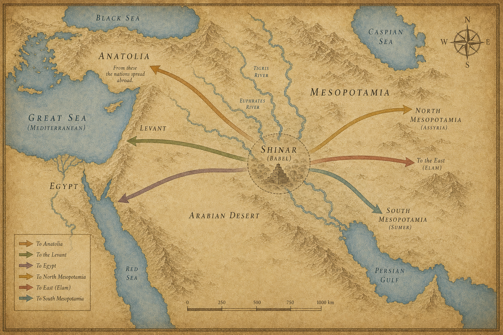
지도 4. 창세기 10~11장 배경: 바벨과 민족 확산.
1 그때는 온 땅이 한 언어였다. 단어 하나, 말씨 하나.
2 사람들이 동쪽에서 이동하다가 시날(Shinar) 평지 — 현대 이라크 남부 바빌로니아 일대 — 를 발견하고 그곳에 자리를 잡았다.
3 그들이 서로 의논하기 시작했다.
“벽돌을 구워 단단하게 만들자.”
돌이 없는 평야였다. 흙을 구워 벽돌을 만들고, 돌 대신 역청을 시멘트로 썼다. 현대 콘크리트의 조상이다.
4 그리고 계획이 나왔다.
“자, 도시와 탑을 쌓자. 꼭대기가 하늘에 닿도록. 우리 이름을 남기고, 온 땅에 흩어지지 말자.”
하늘을 찌르는 탑. 이름을 영원히 남기겠다는 욕망. 흩어지지 않겠다는 결의. 세 가지 동기가 한데 뭉쳐 공사가 시작되었다.
5 여호와께서 내려오셨다. 사람들이 쌓는 도시와 탑을 보러.
’내려오셨다’는 표현이 눈에 띈다. 하늘에 닿겠다고 쌓았지만, 그 탑은 하나님이 몸을 낮춰야 겨우 보일 만큼 작았다는 뜻이다.
6 여호와께서 말씀하셨다.
“보라, 이들이 한 민족이요 언어도 하나이다. 이것은 그들이 시작한 일이고, 이제는 그들이 하고자 하는 일을 막을 수 없을 것이다.”
위협이 아니라 진단이었다. 한 언어, 하나의 의지, 하나의 목표 — 그 조합이 어떤 결과를 낳을지 하나님은 이미 알고 계셨다.
7 “자, 우리가 내려가서 그들의 언어를 뒤섞어 서로 알아듣지 못하게 하자.”
또 ’우리’다. 창세기 1장 26절과 같은 복수.
8 여호와께서 그들을 거기서 온 땅에 흩으셨다. 도시 쌓는 일이 멈췄다.
9 그래서 그 이름이 바벨(Babel) 이 되었다. 여호와께서 거기서 온 땅의 언어를 뒤섞으셨기 때문이다. 바벨은 히브리어로 ’혼잡’을 뜻한다. 오늘날 이라크 힐라 근처, 고대 바빌론의 자리다.
10 셈의 후손은 이렇다.
셈은 홍수 후 2년이 되던 해에 아르박삿을 낳았다. 그때 셈의 나이는 100세였다.
11 아르박삿을 낳은 뒤 셈은 500년을 더 살았다.
12 아르박삿은 35세에 셀라를 낳았다.
13 셀라를 낳은 뒤 아르박삿은 403년을 더 살았다.
14 셀라는 30세에 에벨을 낳았다.
15 에벨을 낳은 뒤 셀라는 403년을 더 살았다.
16 에벨은 34세에 벨렉을 낳았다.
17 벨렉을 낳은 뒤 에벨은 430년을 더 살았다.
18 벨렉은 30세에 르우를 낳았다.
19 르우를 낳은 뒤 벨렉은 209년을 더 살았다.
20 르우는 32세에 스룩을 낳았다.
21 스룩을 낳은 뒤 르우는 207년을 더 살았다.
22 스룩은 30세에 나홀을 낳았다.
23 나홀을 낳은 뒤 스룩은 200년을 더 살았다.
24 나홀은 29세에 데라를 낳았다.
25 데라를 낳은 뒤 나홀은 119년을 더 살았다.
26 데라는 70세에 아브람, 나홀, 하란을 낳았다.
27 데라의 후손은 이렇다. 데라는 아브람과 나홀과 하란을 낳았다. 하란은 롯을 낳았다.
28 그러나 하란은 아버지 데라보다 먼저 죽었다. 그것도 고향 땅, 갈대아 우르(Ur of Chaldees) — 현대 이라크 남부 나시리야 근처, 텔 알 무카야르로 불리는 곳 — 에서.
29 아브람과 나홀은 아내를 맞아들였다. 아브람의 아내 이름은 사래, 나홀의 아내 이름은 밀가였다. 밀가는 하란의 딸이었다.
30 사래는 임신을 못 했다. 자식이 없었다.
이 한 줄이 앞으로 수십 장을 끌고 간다.
31 데라가 아들 아브람과, 하란의 아들인 손자 롯과, 아브람의 아내 며느리 사래를 데리고 갈대아 우르를 떠났다. 목적지는 가나안(Canaan) — 지금의 이스라엘·팔레스타인·레바논 땅 — 이었다.
그런데 하란(Haran) — 현대 터키 남동부 산르우르파주의 도시 — 에 이르러 멈췄다. 그리고 그곳에 자리를 잡았다.
32 데라는 205세를 살고 하란에서 죽었다.
가나안에는 끝내 닿지 못했다. 그 여정은 아들에게 넘어간다.
다음 장 — 데라의 아들, 아브람에게 명령이 내린다. “떠나라.” 행선지는 알려주지 않는다.
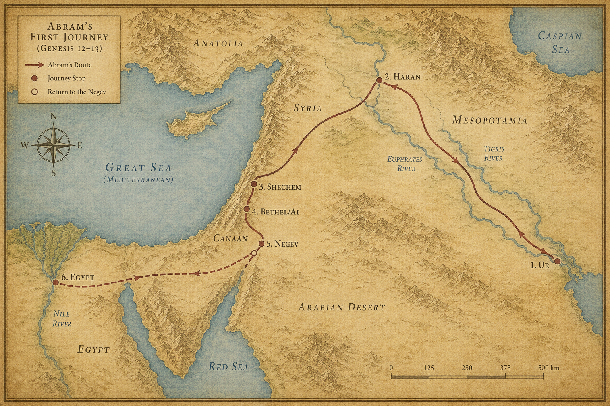
지도 5. 창세기 12~13장 배경: 아브람의 첫 여정(우르하란가나안~애굽).
1 여호와께서 아브람에게 말씀하셨다.
“네 태어난 땅, 친척, 아버지의 집을 떠나, 내가 네게 보여줄 땅으로 가라.”
목적지를 먼저 알려주지 않는 명령이었다. ‘보여줄 땅’ — 가봐야 안다.
2 그리고 약속이 이어졌다.
“내가 너를 큰 민족으로 만들겠다. 네게 복을 주고, 네 이름을 크게 하겠다. 너는 복을 주는 사람이 될 것이다.”
3 “너를 축복하는 자를 내가 축복하고, 너를 저주하는 자를 내가 저주하겠다. 땅의 모든 민족이 너로 말미암아 복을 받을 것이다.”
여섯 개의 약속이 한꺼번에 쏟아졌다. 민족, 복, 이름, 복의 근원, 보호, 그리고 열방의 복. 아브람의 나이 75세였다.
4 아브람은 여호와의 말씀대로 떠났다. 롯도 함께했다.
5 아브람은 아내 사래와 조카 롯을 데리고, 하란에서 모은 모든 소유와 얻은 사람들을 이끌고 가나안(Canaan) — 지금의 이스라엘·팔레스타인·레바논 땅 — 을 향해 출발했다. 그리고 가나안에 이르렀다.
6 아브람은 그 땅을 지나 세겜(Shechem) — 현대 팔레스타인 나블루스 — 의 모레(Moreh) 상수리나무 있는 곳까지 왔다.
그때 가나안에는 이미 사람들이 살고 있었다. 가나안 사람들이었다.
7 여호와께서 아브람에게 나타나 말씀하셨다.
“내가 이 땅을 네 자손에게 주겠다.”
아브람은 자신에게 나타나신 여호와를 위해 그곳에 제단을 쌓았다.
8 거기서 아브람은 더 이동했다. 벧엘(Bethel) — 예루살렘 북쪽 약 19km, 오늘날 베이틴 — 동쪽 산지로 옮겨, 벧엘은 서쪽에, 아이(Ai) — 벧엘 바로 동쪽 — 는 동쪽에 두고 천막을 쳤다.
거기서도 여호와를 위해 제단을 쌓고, 여호와의 이름을 불렀다.
9 아브람은 계속 이동하여 네게브(Negev) — 이스라엘 남부 사막 지대 — 로 향했다.
10 그 땅에 기근이 들었다. 심각했다. 아브람은 이집트(애굽) 로 내려가 잠시 머물기로 했다.
학자들은 아브라함의 활동 시기를 대략 BC 2000년 무렵으로 본다. 그 무렵 이집트는 중왕국 시대(12왕조), 강력한 파라오들이 다스리던 전성기였다. 아브람이 만난 파라오는 아메넴헤트 1세 또는 그의 후계자였을 가능성이 거론된다. 다만 성경은 그 이름을 남기지 않았다.
11 이집트 국경이 가까워질 때, 아브람이 아내 사래에게 말했다.
“당신이 아름다운 여인인 것을 나는 안다.”
12 “이집트 사람들이 당신을 보면 ’이 여자는 저 남자의 아내’라 하고는, 나는 죽이고 당신은 살려둘 것이다.”
13 “제발 내 누이라고 말해 달라. 그러면 당신 덕분에 내가 살겠고 나도 잘 될 것이다.”
두려움이 만든 계획이었다. 거짓말이지만 반쪽짜리 진실이기도 했다 — 사래는 실제로 아브람의 이복 누이였다. 그러나 아내라는 사실은 숨겼다.
14 아브람이 이집트에 들어섰다. 이집트 사람들이 사래를 보았다. 아주 아름다웠다.
15 파라오(바로)의 신하들도 그녀를 보고 파라오에게 칭찬했다. 사래는 파라오의 궁으로 불려들어갔다.
16 아브람은 그녀 덕분에 좋은 대우를 받았다. 파라오에게서 양과 소와 수나귀와 남녀 종들, 암나귀와 낙타들을 받았다.
17 그런데 여호와께서 사래 때문에 파라오와 그 집에 큰 재앙을 내리셨다.
18 파라오가 아브람을 불렀다.
“당신이 내게 왜 이런 일을 했소? 어째서 그녀가 당신 아내라는 것을 내게 말하지 않았소?”
19 “왜 ’내 누이’라고 해서 내가 아내로 삼게 만들었소? 자, 당신 아내를 데리고 가시오.”
20 파라오가 신하들에게 명령했다. 아브람과 그의 아내, 그리고 그가 가진 모든 것을 함께 내보내라고.
쫓겨났다. 이집트 최강 권력자에게 거짓이 들통나 추방당했다. 그러나 아브람의 소유는 오히려 더 늘어 있었다.
다음 장 — 이집트에서 돌아온 아브람과 롯. 땅이 두 사람을 감당하지 못하게 된다.
1 아브람은 이집트를 떠나 네게브(Negev) — 이스라엘 남부 사막 — 로 올라왔다. 아내와 모든 소유를 가지고, 롯도 함께였다.
2 아브람은 이미 부자였다. 가축이 많고, 은금이 넉넉했다.
3 그는 네게브에서 북쪽으로 이동을 계속해 벧엘(Bethel) — 예루살렘 북쪽 약 19km, 오늘날 베이틴 — 에까지 이르렀다. 처음에 천막을 쳤던 그 자리, 벧엘과 아이(Ai) 사이 산지였다.
4 그곳은 전에 제단을 쌓았던 곳이었다. 아브람은 거기서 여호와의 이름을 불렀다.
5 아브람과 함께 다니는 롯에게도 양 떼와 소 떼와 천막이 많았다.
6 땅이 그들을 감당하지 못했다. 둘이 함께 살기에는 소유가 너무 많았다.
7 아브람의 가축을 치는 목자들과 롯의 가축을 치는 목자들 사이에 다툼이 벌어졌다.
그때 그 땅에는 가나안 사람과 브리스 사람도 함께 살고 있었다. 좁은 땅에 여러 집단이 섞여 있었다.
8 아브람이 롯에게 말했다.
“우리는 친척 사이이니, 나와 너 사이에, 내 목자들과 네 목자들 사이에 다툼이 없어야 하지 않겠느냐.”
9 “온 땅이 네 앞에 있지 않으냐. 나와 갈라지자. 네가 왼쪽으로 가면 나는 오른쪽으로, 네가 오른쪽으로 가면 나는 왼쪽으로 가겠다.”
조카에게 먼저 선택권을 준 삼촌이었다. 나이도 위, 믿음도 앞선 사람이 양보했다.
10 롯이 고개를 들어 요단 온 들을 바라보았다. 그 일대는 물이 넉넉했다. 여호와께서 소돔과 고모라를 멸하시기 전의 일이었다. 소알까지 온 땅이 여호와의 동산 같고 이집트 땅처럼 넉넉해 보였다.
11 롯은 요단 온 들을 선택했다. 동쪽으로 이동했다. 그렇게 두 사람은 갈라섰다.
12 아브람은 가나안 땅에 머물렀다. 롯은 요단 들의 여러 도시 사이에 천막을 쳤는데, 소돔(Sodom) — 사해 남쪽으로 추정되는 지역 — 까지 이르렀다.
13 소돔 사람들은 여호와 앞에 악했다. 아주 심각하게.
롯은 땅의 비옥함만 보고 그 땅에 사는 사람들의 성품은 보지 않았다.
14 롯이 떠난 뒤, 여호와께서 아브람에게 말씀하셨다.
“고개를 들어 네가 있는 곳에서 동서남북을 바라보라.”
15 “네가 보는 이 땅 전부를 내가 너와 네 자손에게 영원히 주겠다.”
16 “내가 네 자손을 땅의 티끌같이 많게 하리니, 사람이 땅의 티끌을 셀 수 있다면 네 자손도 셀 수 있을 것이다.”
17 “일어나 그 땅을 이리저리 걸어다녀 보라. 내가 그것을 네게 주겠다.”
롯이 가져간 땅도 결국 이 약속 안에 포함되어 있었다.
18 아브람은 천막을 옮겨 헤브론(Hebron) — 현대 팔레스타인 헤브론 — 의 마므레(Mamre) 상수리나무들 있는 곳에 이르러 거기 살았다. 그리고 여호와를 위해 제단을 쌓았다.
아브람이 세 번째로 쌓은 제단이었다. 가나안에 발을 디딘 뒤, 세겜에서, 벧엘 근처에서, 그리고 이제 헤브론에서.
다음 장 — 왕들이 전쟁을 벌인다. 롯이 그 전쟁에 휘말려 포로가 된다.
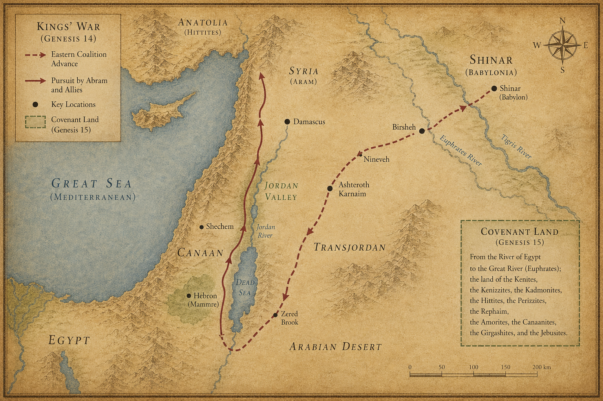
지도 6. 창세기 14~15장 배경: 왕들의 전쟁 동선과 약속의 땅.
1 시날 왕 아므라벨, 엘라살 왕 아리옥, 엘람 왕 그돌라오멜, 고임 왕 디달의 시대였다.
2 이 4왕 연합이 소돔 왕 베라, 고모라 왕 비르사, 아드마 왕 시납, 스보임 왕 세메벨, 소알 왕 벨라 — 이 5왕 연합과 전쟁을 벌였다.
3 5왕이 싯딤 골짜기 — 사해로 합류한 곳 — 에 집결했다.
4 그들은 열두 해 동안 그돌라오멜을 섬겼는데, 열세 해에 반란을 일으켰다.
5 열네 해째, 그돌라오멜과 그와 함께한 왕들이 출정해 르바임 부족, 수스 부족, 에밈 부족을 쳤다.
6 호리 부족도 쳤고,
7 엔미스밧 곧 가데스로 돌아와 아말렉 온 땅과 하사손다말에 사는 아모리 부족도 쳤다.
8 소돔 왕, 고모라 왕, 아드마 왕, 스보임 왕, 소알 왕이 나와서 싯딤 골짜기에서 전투를 벌였다.
9 상대는 엘람 왕 그돌라오멜, 고임 왕 디달, 시날 왕 아므라벨, 엘라살 왕 아리옥 — 4왕 대 5왕이었다.
10 싯딤 골짜기에는 역청 구덩이가 많았다. 소돔 왕과 고모라 왕은 도망치다가 그 구덩이에 빠졌다. 나머지는 산으로 달아났다.
11 4왕 연합은 소돔과 고모라의 모든 재물과 음식을 빼앗아 갔다.
12 그리고 소돔에 살던 아브람의 조카 롯도 끌고 갔다. 그의 재산도 함께.
요단 들을 선택했던 롯이 결국 전쟁의 포로가 되었다.
13 피신한 사람 하나가 히브리 사람 아브람에게 찾아와 이 사실을 알렸다. 아브람은 그때 마므레(Mamre) — 헤브론 근처 — 의 상수리나무 곁에 살고 있었다. 마므레는 에스골의 형제, 아넬의 형제였는데 이들은 아브람과 동맹을 맺은 자들이었다.
14 아브람은 조카가 포로로 잡혔다는 소식을 듣고 즉시 행동에 나섰다. 자기 집에서 훈련받은 종 318명을 이끌고 단(Dan) — 갈릴리 북쪽 — 까지 추격했다.
15 밤에 자기 종들을 나누어 그들을 기습했다. 그돌라오멜 연합군을 쳐서 물리치고, 다메섹(Damascus) — 현대 시리아 다마스쿠스 — 왼편 호바까지 뒤쫓았다.
16 아브람은 모든 재물을 되찾았다. 조카 롯과 그의 재산, 그리고 여자들과 백성도 모두 데리고 돌아왔다.
훈련된 318명이 4왕 연합군을 밤에 기습해 대승을 거뒀다. 아브람은 군인이 아니었다. 유목민이었다.
17 아브람이 그돌라오멜과 그와 함께한 왕들을 쳐서 이기고 돌아올 때, 소돔 왕이 사웨 골짜기 곧 왕의 골짜기로 나와 그를 맞이했다.
18 그런데 살렘(Salem) — 예루살렘의 고대 이름 — 왕 멜기세덱이 빵과 포도주를 가지고 나왔다. 그는 지극히 높으신 하나님의 제사장이었다.
19 그가 아브람을 축복하며 말했다.
“천지를 지으신 지극히 높으신 하나님이 아브람에게 복을 주시기를 원하노라.”
20 “네 대적을 네 손에 넘겨주신 지극히 높으신 하나님을 찬송할지로다.”
아브람은 그에게 모든 것의 십일조를 주었다.
멜기세덱은 제사장이면서 왕이었다. 레위 지파도, 모세의 율법도 존재하기 훨씬 전의 제사장. 그래서 성경은 훗날 이 인물을 다시 꺼낸다.
21 소돔 왕이 아브람에게 말했다.
“사람들은 내게 주고, 재물은 당신이 가지시오.”
22 아브람이 소돔 왕에게 대답했다.
“나는 천지를 지으신 지극히 높으신 하나님 여호와께 손을 들어 맹세한다.”
23 “네 것은 실 한 오라기도, 신발 끈 하나도 가지지 않겠다. 네가 나중에 ’내가 아브람을 부자가 되게 했다’고 말하지 못하게 하려는 것이다.”
24 “나는 아무것도 받지 않겠다. 다만 젊은이들이 먹은 것과, 나와 함께 간 아넬, 에스골, 마므레의 몫은 그들이 가져가게 하라.”
완전한 거절이었다. 소돔의 재물로 부자가 되는 것을 아브람은 원하지 않았다. 자신의 부의 출처를 하나님으로 두겠다는 선언이었다.
다음 장 — 전쟁의 흥분이 가라앉은 뒤, 하나님이 환상 속에 나타나신다. 아브람은 오래된 질문을 꺼낸다. “아직도 자식이 없는데요.”
1 이 일들이 있은 후, 여호와의 말씀이 환상 가운데 아브람에게 임했다.
“아브람아, 두려워하지 마라. 나는 네 방패다. 네 지극히 큰 상급이다.”
2 아브람이 말했다.
“주 여호와여, 내게 무엇을 주시겠습니까. 나는 자식이 없이 이대로 죽을 것이고, 내 집을 물려받을 자는 다메섹 사람 엘리에셀입니다.”
3 “주께서 내게 자녀를 주지 않으셨으니, 내 집에서 태어난 자가 내 상속자가 될 것입니다.”
약속받은 지 세월이 흘렀다. 아브람의 믿음에 균열이 아니라, 물음이 쌓인 것이었다.
4 여호와의 말씀이 다시 임했다.
“그 사람이 네 상속자가 되지 않을 것이다. 네 몸에서 나올 자가 네 상속자가 될 것이다.”
5 하나님이 그를 밖으로 데리고 나가셨다.
“하늘을 우러러 별들을 세어 보라. 셀 수 있겠느냐?”
밤하늘이었다. 별이 쏟아졌다.
“네 자손이 이와 같으리라.”
6 아브람이 여호와를 믿었다. 여호와께서 이것을 그의 올바름 으로 여기셨다.
이 한 문장이 수천 년 뒤 바울의 로마서와 갈라디아서에서 다시 소환된다. 행위가 아니라 믿음으로 의롭다 여김을 받는다는 신학의 뿌리가 여기 박혀 있다.
7 여호와께서 말씀하셨다.
“나는 이 땅을 네게 주어 소유가 되게 하려고 너를 갈대아 우르에서 이끌어 낸 여호와다.”
8 아브람이 물었다.
“주 여호와여, 내가 이 땅을 소유할 것을 어떻게 알 수 있습니까?”
믿음과 확인 요청은 다른 것이다. 아브람은 증표를 구했다.
9 여호와께서 말씀하셨다.
“나를 위해 삼 년 된 암소와 삼 년 된 암염소와 삼 년 된 숫양과 산비둘기와 집비둘기 새끼를 가져오라.”
10 아브람이 그 모든 것을 가져다가 쪼개어 마주 대하여 놓았다. 새는 쪼개지 않았다.
11 맹금류들이 그 사체 위로 내려왔다. 아브람이 쫓았다.
12 해가 질 무렵, 아브람에게 깊은 잠이 임했다. 그리고 크고 캄캄한 공포가 그를 덮었다.
13 여호와께서 아브람에게 말씀하셨다.
“너는 분명히 알라. 네 자손이 남의 땅에서 나그네가 되어 그들을 섬기겠고, 그들은 네 자손을 사백 년 동안 괴롭힐 것이다.”
14 “그러나 그들이 섬기는 나라를 내가 직접 징벌하겠고, 그 후에 네 자손이 큰 재물을 가지고 나올 것이다.”
15 “너는 장수하다가 평안히 조상에게로 돌아가 장사될 것이다.”
16 “네 자손은 사 대 만에 이 땅으로 돌아오리니, 아모리 부족의 죄악이 아직 가득 차지 않았기 때문이다.”
400년의 예언이었다. 아브람은 그 끝을 보지 못한다. 그러나 들었다.
17 해가 져서 어두울 때, 연기 나는 화로와 타는 횃불이 쪼개 놓은 동물들 사이로 지나갔다.
고대 근동의 약속 체결 방식이었다. 당사자들이 쪼갠 동물 사이를 걸어 지나가며 “내가 이 약속을 어기면 나도 저 짐승처럼 되리라”를 선언하는 것이다. 그런데 이번에는 하나님 혼자 지나가셨다. 아브람은 깊은 잠에 빠진 채였다. 일방적인 약속이었다. 아브람의 조건 이행 여부에 관계없이 하나님이 홀로 보증한 약속.
18 그 날, 여호와께서 아브람과 약속을 맺으며 말씀하셨다.
“내가 이 땅을 네 자손에게 주노니, 이집트 강에서부터 그 큰 강 유브라데까지다.”
19 20 21 그 땅에 사는 열 부족을 열거하셨다. 겐 부족, 그니스 부족, 갓몬 부족, 헷 부족, 브리스 부족, 르바임 부족, 아모리 부족, 가나안 부족, 기르가스 부족, 여부스 부족.
광대한 영토의 약속이었다. 아브람은 아직 거기서 나그네였다.
다음 장 — 약속은 있지만 자식은 없다. 사래가 다른 방법을 제안한다.
1 아브람의 아내 사래는 아이를 낳지 못했다. 그녀에게는 하갈이라는 이집트 여종이 있었다.
2 사래가 아브람에게 말했다.
“여호와께서 나로 하여금 임신하지 못하게 하셨으니, 내 여종에게 들어가라. 그로 말미암아 내가 아들을 얻을까 한다.”
아브람이 사래의 말을 들었다.
당시 관습에서 이것은 낯선 일이 아니었다. 고대 근동 법률 문서에도 불임 아내가 남편에게 여종을 대리모로 제공하는 관행이 기록되어 있다. 그러나 관습이 맞다고 해서 결과도 맞은 건 아니었다.
3 아브람이 가나안 땅에 산 지 10년이 지난 뒤였다. 사래는 자기 여종 하갈을 데려다 남편 아브람에게 아내로 주었다.
4 아브람이 하갈에게 들어갔다. 하갈이 임신했다.
그런데 임신한 것을 알게 된 하갈이 자기 여주인 사래를 무시하기 시작했다.
5 사래가 아브람에게 말했다.
“내가 받는 이 억울함은 당신이 책임져야 합니다. 내가 내 여종을 당신 품에 두었더니, 그녀가 임신한 것을 알고 나를 무시합니다. 여호와께서 당신과 나 사이를 판단하시기 바랍니다.”
6 아브람이 말했다.
“당신의 여종은 당신의 손에 있으니, 당신 뜻대로 하시오.”
사래가 하갈을 가혹하게 대했다. 하갈은 사래 앞에서 도망쳤다.
7 여호와의 사자가 술(Shur) 가는 길 — 이집트와 가나안 사이 광야 — 광야의 샘가에서 하갈을 만났다.
8 그가 말했다.
“사래의 여종 하갈아, 네가 어디서 왔으며 어디로 가느냐?”
하갈이 대답했다.
“나는 내 여주인 사래에게서 도망치는 중입니다.”
9 여호와의 사자가 말했다.
“네 여주인에게 돌아가서 그녀 앞에 순종하라.”
10 “내가 네 자손을 크게 번성시켜, 셀 수 없을 만큼 많게 하겠다.”
11 “네가 임신하였고 아들을 낳을 것이다. 그 이름을 이스마엘이라 하라. 여호와께서 네 고통을 들으셨기 때문이다.”
이스마엘(יִשְׁמָעֵאל)은 히브리어로 ’하나님이 들으신다’는 뜻이다.
12 “그는 들나귀 같은 사람이 될 것이다. 그의 손이 모든 사람을 치겠고 모든 사람의 손이 그를 칠 것이며, 그는 모든 형제 앞에서 살리라.”
13 하갈은 자기에게 말씀하신 여호와의 이름을 불렀다.
“당신은 나를 살피시는 하나님이십니다.”
그녀는 말했다.
“내가 여기서 나를 보시는 분을 보았다.”
14 그래서 그 샘을 브엘라해로이(Beer Lahai Roi) 라고 불렀다. ’나를 보시는 살아계신 분의 우물’이라는 뜻이다. 그 샘은 네게브(Negev) 광야에 있었다.
사래도 아니고, 아브람도 아니었다. 도망친 여종, 이집트인 하갈에게 하나님이 먼저 찾아오셨다. 그리고 이름을 물으셨다. 그녀의 이름을 알고 계셨다.
15 하갈이 아브람에게 아들을 낳았다. 아브람이 하갈이 낳은 아들의 이름을 이스마엘이라 했다.
16 하갈이 이스마엘을 낳을 때 아브람의 나이는 86세였다.
75세에 떠나라는 명령을 받고, 11년이 흘렀다. 약속은 아직 정확히 이루어지지 않았다. 이스마엘은 아브람의 아들이지만, 사래의 아들은 아니었다.
다음 장 — 13년이 더 지난다. 아브람이 99세가 되던 날, 하나님이 다시 나타나신다. 그리고 두 사람의 이름이 바뀐다.
1 아브람이 99세 되던 해였다. 이스마엘이 태어나고 13년이 지났다.
여호와께서 아브람에게 나타나 말씀하셨다.
“나는 전능한 하나님(엘 샤다이)이다. 너는 내 앞에서 행하여 완전하라.”
2 “내가 내 약속을 나와 너 사이에 세워 너를 크게 번성하게 하리라.”
3 아브람이 엎드렸다. 하나님이 또 말씀하셨다.
4 “내가 너와 내 약속을 세우니, 너는 여러 민족의 조상이 될 것이다.”
5 “이제부터 네 이름은 아브람이 아니라 아브라함이다. 내가 너를 여러 민족의 조상으로 만들었기 때문이다.”
아브람(Abram)은 ‘높은 아버지’, 아브라함(Abraham)은 ’열국의 아버지’라는 뜻이다. 자음 하나가 추가됐을 뿐인데, 그 무게가 달라졌다.
6 “내가 너를 아주 번성하게 하리니, 내가 네게서 민족들이 나오게 하고, 왕들도 네게서 나오리라.”
7 “내가 내 약속을 나와 너와 네 후손 사이에 영원한 약속으로 세워, 네 하나님과 네 후손의 하나님이 되겠다.”
8 “내가 네가 나그네 된 땅, 곧 가나안 온 땅을 너와 네 후손에게 영원히 물려줄 것이고, 나는 그들의 하나님이 되겠다.”
9 하나님이 아브라함에게 말씀하셨다.
“너는 내 약속을 지키라. 너와 네 후손이 대대로.”
10 “너희 중 남자는 모두 할례를 받으라. 이것이 나와 너희 사이의 약속의 표다.”
할례 — 생식기 포피 일부를 잘라내는 의식.
11 “포피를 베어라. 이것이 나와 너희 사이의 약속의 표가 될 것이다.”
12 “대대로 너희 중 남자는 집에서 태어난 자나 이방인에게서 돈으로 산 자를 막론하고 난 지 팔 일 만에 할례를 받으라.”
13 “너희 몸에 있는 내 약속이 영원한 약속이 될 것이다.”
14 “포피를 베지 않은 남자는 내 약속을 어긴 것이므로 그 백성 중에서 끊어질 것이다.”
15 하나님이 아브라함에게 말씀하셨다.
“네 아내 사래는 이제부터 사래라 부르지 말고, 사라라 부르라.”
사래(Sarai)와 사라(Sarah) 모두 ’공주’라는 뜻이지만, 히브리어 어형이 달라진다. 사라는 특정 부족이 아닌 ’열방의 공주’를 뜻하는 형태다.
16 “내가 그에게 복을 주어 그로 말미암아 네게 아들을 주겠으며, 내가 그에게 복을 주어 그가 여러 민족의 어머니가 되게 하고, 여러 민족의 왕들이 그에게서 나오리라.”
17 아브라함이 엎드려 웃었다.
그리고 속으로 말했다.
‘100세 된 사람이 자식을 낳을 수 있을까. 사라는 90세인데 출산이 되겠느냐.’
18 아브라함이 하나님께 말씀드렸다.
“이스마엘이나 하나님 앞에서 살기를 원합니다.”
아들이 이미 있으니 그로 충분하다는 말이었다. 혹은 그게 더 현실적이라는 말이었다.
19 하나님이 말씀하셨다.
“아니다. 네 아내 사라가 네게 아들을 낳을 것이다. 너는 그 이름을 이삭이라 하라. 내가 그와 내 약속을 세우리니 그의 후손에게 영원한 약속이 될 것이다.”
이삭(יִצְחָק)은 히브리어로 ’그가 웃는다’는 뜻이다. 아브라함의 웃음이 아들의 이름이 되었다.
20 “이스마엘에 대해서도 내가 들었다. 내가 그에게 복을 주어 그를 번성하게 하고 아주 많아지게 할 것이다. 그가 열두 방백을 낳을 것이며, 내가 그를 큰 민족이 되게 하겠다.”
21 “그러나 내 약속은 내년 이맘때에 사라가 낳을 이삭과 세울 것이다.”
22 하나님이 아브라함과 말씀을 마치시고 그를 떠나 올라가셨다.
23 아브라함은 그 날 즉시 행동했다. 아들 이스마엘과 집에서 태어난 모든 남자, 돈으로 산 모든 남자들에게 할례를 행했다.
24 아브라함이 할례를 받을 때 그의 나이는 99세였다.
25 아들 이스마엘이 할례를 받을 때 그의 나이는 13세였다.
26 아브라함과 이스마엘이 같은 날에 할례를 받았다.
27 그 집의 모든 남자, 집에서 태어난 자나 이방인에게서 돈으로 산 자도 다 함께 할례를 받았다.
명령을 받고 다음 날도 아니었다. 그 날, 즉시였다.
다음 장 — 한낮에 세 사람이 찾아온다. 아브라함은 그들이 누구인지 처음부터 알았던 것 같다. 달려갔으니까.
1 여호와께서 마므레(Mamre) — 헤브론 근처 — 의 상수리나무들 곁에서 아브라함에게 나타나셨다. 그때는 한낮이었다. 아브라함은 천막 문에 앉아 있었다.
2 고개를 들어 보니 세 사람이 자기 앞에 서 있었다.
아브라함은 달려갔다. 천막 문에서 그들을 맞으러. 땅에 엎드렸다.
3 그가 말했다.
“내 주여, 제가 주께 은혜를 입었다면, 원하건대 종을 그냥 지나치지 마십시오.”
4 “물을 조금 가져오겠으니 발을 씻으시고, 이 나무 아래서 쉬십시오.”
5 “제가 음식을 조금 가져오겠으니 기운을 차리신 후에 가십시오. 종에게 들르셨으니 그리하십시오.”
그들이 말했다.
“당신의 말대로 하시오.”
6 아브라함이 급히 천막으로 들어가 사라에게 말했다.
“빨리 고운 가루 세 스아를 가져다 반죽하여 빵을 만드시오.”
7 아브라함이 또 소 떼로 달려가서 좋고 연한 송아지를 잡아 하인에게 주었다. 하인이 빨리 요리했다.
8 아브라함이 엉긴 젖과 우유와 요리한 송아지를 가져다 그들 앞에 차렸다. 그들이 나무 아래서 먹는 동안 아브라함은 곁에 서 있었다.
9 그들이 아브라함에게 물었다.
“네 아내 사라가 어디 있느냐?”
아브라함이 대답했다.
“천막에 있습니다.”
10 그 중 하나가 말했다.
“내가 내년 이맘때 반드시 네게 돌아오리니, 네 아내 사라에게 아들이 있으리라.”
11 사라는 천막 문 뒤에서 듣고 있었다. 아브라함과 사라는 나이가 많아 늙었고, 사라에게는 여성의 생리가 이미 끊어진 상태였다.
12 사라가 속으로 웃었다.
‘내가 이렇게 늙었고, 내 남편도 늙었는데, 내게 무슨 즐거움이 있으랴.’
13 여호와께서 아브라함에게 말씀하셨다.
“사라가 왜 웃으며 ‘내가 이렇게 늙었는데 정말 아이를 낳을 수 있을까?’ 하느냐?”
14 “여호와께 못 하실 일이 있겠느냐? 기한이 이를 때, 곧 내년 이맘때에 내가 네게 돌아오리니 사라에게 아들이 있으리라.”
15 사라가 두려워서 부인했다.
“나는 웃지 않았습니다.”
“아니라, 네가 웃었느니라.”
아브라함도 17장에서 웃었다. 사라도 지금 웃었다. 그리고 태어날 아이의 이름은 ‘그가 웃는다’ — 이삭이다.
16 그 사람들이 일어나 소돔 방향으로 내려갔다. 아브라함도 함께 그들을 전송했다.
17 여호와께서 생각하셨다.
‘내가 하려는 것을 아브라함에게 숨기겠느냐.’
18 ‘아브라함은 반드시 크고 강한 나라가 되고, 세상 모든 민족이 그로 말미암아 복을 받을 것이 아니냐.’
19 ‘내가 그를 택한 것은, 그가 자기 자녀와 후손에게 명하여 여호와의 길을 지켜 올바름과 정의를 행하게 하려는 것이니, 이는 여호와가 아브라함에게 말한 것을 이루려 함이라.’
20 여호와께서 말씀하셨다.
“소돔과 고모라에 대한 부르짖음이 크고, 그 죄악이 아주 무거우니.”
21 “내가 내려가서 그 모든 행한 것이 과연 내게 들린 부르짖음과 같은지 그렇지 않은지 보고, 알려 하노라.”
22 그 사람들이 돌이켜 소돔으로 갔다. 아브라함은 여호와 앞에 그대로 섰다.
23 아브라함이 가까이 나아가 말했다.
“주께서 의로운 사람을 악한 사람과 함께 멸하시겠습니까?”
24 “그 성 안에 의로운 사람이 오십 명 있다면, 그래도 멸하시겠습니까? 그 오십 명을 위해 그 성을 용서하지 않으시겠습니까?”
25 “의로운 사람을 악한 사람과 함께 죽이시는 것은 주께 결코 있을 수 없는 일입니다. 의로운 사람과 악한 사람을 똑같이 대하시는 것도 마찬가지입니다. 온 세상을 심판하시는 분이 정의를 행하셔야 하지 않겠습니까?”
26 여호와께서 말씀하셨다.
“내가 소돔 성 안에서 의로운 사람 오십 명을 찾으면, 그들을 위하여 온 성을 용서하겠다.”
27 아브라함이 다시 말했다.
“티끌과 재에 불과한 내가 감히 주께 말씀드립니다.”
28 “의로운 사람 오십에서 다섯이 부족하면 어떻게 하시겠습니까? 다섯이 부족하다고 성 전체를 멸하시겠습니까?”
“거기서 사십오 명을 찾으면 멸하지 않겠다.”
29 아브라함이 또 말했다.
“사십 명이 있다면?”
“사십 명을 위해서도 멸하지 않겠다.”
30 “주여, 노하지 마시고 들어 주십시오. 삼십 명이 있다면?”
“삼십 명을 찾아도 멸하지 않겠다.”
31 “감히 또 말씀드립니다. 이십 명이라면?”
“이십 명을 위해서도 멸하지 않겠다.”
32 “주여, 노하지 마십시오. 마지막으로 한 번만 더 말씀드리겠습니다. 십 명이 있다면?”
“십 명을 위해서도 멸하지 않겠다.”
33 여호와께서 아브라함과 말씀을 마치시고 가셨다.
아브라함은 자기 곳으로 돌아갔다.
50에서 45, 40, 30, 20, 10까지. 아브라함은 여섯 번 흥정했다. 더 내려가지 못한 것은 용기가 부족해서였을까, 아니면 열 명쯤은 있으리라 믿었기 때문일까. 소돔에는 롯이 있었다. 롯의 가족이 있었다.
다음 장 — 두 천사가 소돔에 도착한다. 그리고 그 밤, 소돔이 어떤 도시인지가 드러난다.
1 저녁이 되었을 때, 두 천사가 소돔(Sodom, 사해 남쪽 끝)에 이르렀다. 롯은 마침 성문에 앉아 있었다.
그를 보자마자 롯이 일어나 달려갔다. 몸을 깊이 숙여 얼굴을 땅에 댔다.
“내 주여, 종의 집으로 들어오셔서 발을 씻고 주무시고 내일 아침 길을 가십시오.”
2 그들이 사양했다.
“아니라, 우리는 거리에서 밤을 지내리라.”
3 롯이 간청을 멈추지 않았다. 결국 그들이 그와 함께 들어갔다. 롯은 잔치를 베풀었다. 누룩 없는 무교병을 구워냈다. 그들이 먹었다.
4 그들이 눕기도 전에 성 남자들이 몰려왔다. 소돔 사람들 — 소년부터 노인까지, 성 구석구석에서 모여든 사람들이 롯의 집을 빙 둘러쌌다.
5 그들이 롯을 불러 외쳤다.
“오늘 밤 네게 온 그 사람들이 어디 있느냐? 끌어내라. 우리가 그들을 욕보이겠다.”
롯은 그 말이 무슨 뜻인지 알았다.
6 롯이 문 밖으로 나가 문을 닫았다. 등 뒤로 문이 닫히는 소리가 났다.
7 그는 군중을 향해 말했다.
“형제들이여, 제발 이런 악을 행하지 마시오.”
8 그리고 그는 말해서는 안 될 말을 꺼냈다.
“보시오, 내게 남자를 알지 못하는 두 딸이 있소. 그들을 끌어내어 너희 보기에 좋을 대로 하시오. 오직 이 사람들에게는 손을 대지 마시오. 그들이 내 지붕 아래로 들어온 사람들이오.”
절박함이 아버지를 어디까지 몰아붙이는지 — 이 한 문장에 다 담겨 있다.
9 군중이 소리쳤다.
“저리 비켜! 이자는 들어와 살면서 이제 재판장 노릇을 하려 드는군!”
그들이 롯에게 달려들었다. 문을 부수려 했다.
10 그때 안에 있던 사람들이 손을 내밀어 롯을 집 안으로 끌어들이고 문을 닫았다.
11 그리고 문 밖 사람들, 크든 작든, 모두의 눈을 어둡게 하셨다.
사람들이 문을 더듬었다. 찾지 못했다. 어둠 속에서 헛손질만 했다.
12 두 사람이 롯에게 말했다.
“여기 또 누가 있느냐? 사위든 아들이든 딸이든, 이 성에 속한 사람이 있거든 모두 데리고 나가라.”
13 > “우리가 이곳을 멸할 것이라. 그 부르짖음이 여호와 앞에 크므로 여호와께서 이 성을 멸하러 우리를 보내셨느니라.”
14 롯이 나가 딸들과 약혼한 사위들에게 말했다.
“일어나 이 곳을 떠나라! 여호와께서 이 성을 멸하시리라!”
그들은 농담으로 여겼다.
그것이 그들의 마지막 밤이었다.
15 동이 트기 시작할 때 천사들이 롯을 재촉했다.
“일어나라! 네 아내와 두 딸을 데리고 떠나라. 이 성의 죄악 때문에 함께 멸망하지 않으려거든!”
16 롯이 머뭇거렸다.
뒤에 남겨진 모든 것들 때문이었을까. 아니면 그것이 진짜라는 게 아직 실감되지 않았기 때문이었을까.
천사들이 손을 잡았다. 롯과 아내와 두 딸의 손을. 여호와께서 그를 불쌍히 여기셨기에, 그들을 끌어내어 성 밖에 세우셨다.
17 천사가 말했다.
“도망하여 목숨을 살려라. 뒤를 돌아보지 말며, 들에 머물지 말라. 산으로 도망하라. 그렇지 않으면 죽으리라.”
18 롯이 말했다.
“내 주여, 그리 마십시오.”
19 > “당신의 종이 주께 은혜를 입었고 당신이 큰 은혜를 베푸셨으나, 산까지는 도망하지 못하겠습니다. 두렵건대 재앙을 만나 죽을까 합니다.”
20 > “보십시오, 저기 성이 가까우니 그리로 도망하겠습니다. 아주 작은 성이 아닙니까? 제발 그리로 가게 해 주십시오. 그러면 제 목숨이 살겠습니다.”
21 천사가 말했다.
“이 일에서도 네 부탁을 들어주겠다. 네가 말하는 그 성을 멸하지 않겠다.”
22 > “빨리 그리로 도망하라. 네가 거기 이르기 전에는 내가 아무것도 할 수 없노라.”
그래서 그 성의 이름을 소알(Zoar, 사해 남동쪽)이라 불렀다.
23 롯이 소알에 들어갈 때 해가 돋았다.
24 그때 여호와께서 소돔과 고모라(Gomorrah, 사해 남쪽 끝)에 유황과 불을 비같이 내리게 하셨다. 하늘로부터였다.
25 온 들판을 엎으셨다. 도시들과 거기 사는 사람들과 땅의 모든 것을 엎으셨다.
26 롯의 아내가 뒤를 돌아보았다.
그 순간, 소금 기둥이 되었다.
뒤를 돌아보지 말라는 말은 명령이 아니라 사랑이었다. 그녀는 그 사랑을 어기는 데 단 한 번의 시선으로 충분했다.
27 아브라함이 아침 일찍 일어나 여호와 앞에 섰던 그 곳으로 갔다.
28 소돔과 고모라 쪽을 바라보았다. 온 들의 연기가 올라오고 있었다. 옹기 가마의 연기 같았다.
29 하나님이 그 들의 도시들을 멸하실 때 아브라함을 기억하사, 롯을 그 멸망 가운데서 내보내셨다.
30 롯이 소알에서 두 딸과 함께 올라가 산에 살았다. 소알을 두려워했기 때문이었다. 그와 두 딸이 굴에서 살았다.
31 큰 딸이 작은 딸에게 말했다.
“우리 아버지는 늙으셨고, 세상의 도리를 따라 우리에게 들어올 남자가 이 땅에는 없구나.”
32 > “우리가 아버지에게 포도주를 마시게 하고 함께 자서 우리 아버지로 말미암아 자손을 이어가자.”
33 그 날 밤 그들이 아버지에게 포도주를 마시게 했다. 큰 딸이 아버지와 함께 잤다. 아버지는 그 딸이 눕고 일어남을 알지 못했다.
34 이튿날 큰 딸이 작은 딸에게 말했다.
“어젯밤에는 내가 아버지와 함께 잤으니, 오늘 밤에도 포도주를 마시게 하여 네가 들어가 함께 자라.”
35 그 날 밤에도 포도주를 마시게 했다. 작은 딸이 아버지와 함께 잤다. 아버지는 그 딸이 눕고 일어남을 알지 못했다.
36 롯의 두 딸이 아버지로 말미암아 임신했다.
37 큰 딸이 아들을 낳아 모압(Moab, 현대 요르단)이라 이름 지었다. 오늘날 모압 자손의 조상이다.
38 작은 딸도 아들을 낳아 벤암미라 이름 지었다. 오늘날 암몬(Ammon, 현대 요르단) 자손의 조상이다.
두 민족의 시작이 이 굴에서였다. 성경은 그 사실을 숨기지 않는다.
다음 장 — 아브라함이 또다시 “그녀는 내 누이요”라고 말한다. 이번엔 그랄 왕 아비멜렉 앞에서.
1 아브라함이 거기서 떠나 남방 네게브 땅으로 이동했다. 그랄(Gerar, 가자 지구 남쪽)과 가데스 사이에 머물다가 그랄로 들어갔다.
2 그리고 그는 아내 사라를 또 소개했다.
“그는 내 누이라.”
열두 장 전, 이집트에서 이미 한 번 썼던 방식이었다. 같은 실수를 다시 하는 사람은 그때 진짜로 배우지 못한 것이다.
그랄 왕 아비멜렉이 사람을 보내어 사라를 데려갔다.
3 밤에 하나님이 아비멜렉의 꿈에 나타나셨다.
“네가 데려간 여인은 남편이 있는 아내이므로, 너는 죽으리라.”
4 아비멜렉이 아직 그녀에게 가까이 가지 않았던 터였다. 그가 말했다.
“주여, 올바른 민족도 멸하시겠습니까?”
5 > “그가 저에게 ‘이는 내 누이라’ 하지 않았습니까? 여자도 ‘이는 내 오라비라’ 하였나이다. 나는 깨끗한 마음과 깨끗한 손으로 이를 행했나이다.”
6 하나님이 꿈속에서 말씀하셨다.
“그렇다, 나도 네가 깨끗한 마음으로 이렇게 한 줄 알았다. 그래서 내가 너를 막아 그녀에게 죄를 짓지 않게 하였다.”
7 > “이제 그 사람의 아내를 돌려보내라. 그는 선지자이니 너를 위하여 기도할 것이다. 그러나 네가 돌려보내지 않으면, 너와 네 주변의 모든 사람이 반드시 죽을 줄 알라.”
8 아비멜렉이 아침 일찍 일어났다. 모든 신하들을 불러 이 일을 알렸다. 그 사람들이 아주 두려워했다.
9 아비멜렉이 아브라함을 불러 말했다.
“네가 우리에게 어찌 이런 일을 하였느냐? 내가 무슨 죄를 네게 지었기에 나와 내 왕국에 이런 큰 죄를 가져왔느냐? 네가 마땅히 하지 않을 일을 내게 하였도다.”
10 > “네가 무엇을 보았기에 이 일을 하였느냐?”
11 아브라함이 말했다.
“이 곳에는 하나님을 두려워하며 공경하는 마음이 없으니, 내 아내 때문에 사람들이 나를 죽일 것이라 생각하였소.”
12 그리고 덧붙였다.
“또한 그녀는 정말로 내 누이이기도 하오. 내 아버지의 딸이나 내 어머니의 딸은 아니지만, 아내가 되었소.”
13 > “하나님이 나를 내 아버지의 집을 떠나 두루 다니게 하셨을 때, 내가 그녀에게 말하기를 ‘우리가 이르는 모든 곳에서 그대는 나를 오라비라 하라. 이것이 그대가 내게 베풀 은혜라’ 하였소.”
반은 진실이었다. 반은 핑계였다. 아브라함이라 해도 두려움 앞에서는 말이 흔들렸다.
14 아비멜렉이 양과 소와 남녀 종들을 가져다가 아브라함에게 주었다. 아내 사라도 돌려보냈다.
15 아비멜렉이 말했다.
“내 땅이 네 앞에 있으니, 네가 보기에 좋은 대로 살아라.”
16 그리고 사라에게 말했다.
“내가 네 오라비에게 은 천 개를 주었노라. 이것이 네 눈에 가린 것이 되어 모든 사람 앞에서 너의 일이 바로 잡혔음을 알게 하노라.”
17 아브라함이 하나님께 기도했다. 하나님이 아비멜렉과 그의 아내와 여종들을 치료하셨다. 그들이 다시 자녀를 낳을 수 있게 되었다.
18 여호와께서 아브라함의 아내 사라의 일로 인해 아비멜렉의 집 모든 태를 닫아 버리셨기 때문이었다.
왕의 꿈에서부터 집안의 태까지 — 하나님의 보호는 조용하고 철저했다. 아브라함이 겁쟁이였던 시간에도.
다음 장 — 오래 기다렸던 약속이 마침내 이루어진다. 백 살 아브라함에게 아들이 태어난다.
1 여호와께서 말씀하신 대로 사라를 돌보셨다. 말씀하신 그 때에 여호와께서 사라에게 행하셨다.
2 사라가 임신하여 아들을 낳았다. 하나님이 말씀하신 때, 아브라함의 노년에.
3 아브라함이 그 아들의 이름을 이삭(Isaac)이라 지었다. ’웃음’이라는 뜻이다. 사라가 웃었던 그 날부터 예약된 이름이었다.
4 하나님이 명령하신 대로 아브라함이 아들 이삭이 난 지 팔 일 만에 할례를 베풀었다.
5 이삭이 태어날 때 아브라함의 나이는 백 세였다.
6 사라가 말했다.
“하나님이 나를 웃게 하시니, 듣는 사람이 다 나와 함께 웃으리로다.”
7 > “사라가 자식들에게 젖을 먹이겠다고 누가 아브라함에게 말하였으리요마는, 아브라함의 노년에 내가 아들을 낳았도다.”
백 살 아버지와 구십 살 어머니의 아들. 이 아이가 걸음마를 할 때쯤 아브라함의 나이가 어떻게 계산되는지는 — 그냥 넘어가기로 한다. 하나님이 하신 일이니까.
8 이삭이 자라서 젖을 떼는 날, 아브라함이 큰 잔치를 베풀었다.
9 그런데 사라가 보니 이스마엘이 — 아브라함이 하갈에게서 낳은 그 아들이 — 이삭을 희롱하고 있었다.
10 사라가 아브라함에게 말했다.
“이 여종과 그 아들을 내쫓으라. 이 여종의 아들은 내 아들 이삭과 함께 물려받을 것을 나누지 못하리라.”
11 아브라함이 그 아들로 인해 몹시 괴로워했다. 이스마엘도 그의 아들이었다.
12 하나님이 아브라함에게 말씀하셨다.
“아이와 네 여종으로 인해 괴로워하지 말라. 사라가 네게 이른 말을 다 들으라. 이삭에게서 나는 자라야 네 자손이라 불릴 것이니라.”
13 > “그러나 여종의 아들도 네 자손이니, 내가 그로 한 민족을 이루게 하리라.”
14 아브라함이 아침 일찍 일어났다. 음식과 물 한 가죽부대를 가져다가 하갈의 어깨에 지우고 아이를 이끌어 보냈다. 하갈이 떠났다. 브엘세바(Beersheba, 네게브 사막 — 현대 이스라엘 남부 도시) 광야에서 방황했다.
15 가죽부대의 물이 떨어졌다.
16 하갈이 아이를 떨기나무 아래 놓아두고 화살 한 바탕 거리쯤 떨어진 곳에 가서 마주 앉았다.
“아이가 죽는 것을 차마 볼 수 없구나.”
그리고 소리 높여 울었다.
17 하나님이 소년의 소리를 들으셨다. 하나님의 천사가 하늘에서 하갈을 불러 말씀하셨다.
“하갈아, 무슨 일이냐? 두려워하지 말라. 하나님이 저기 있는 아이의 소리를 들으셨느니라.”
18 > “일어나 아이를 일으켜 네 손으로 붙들라. 내가 그로 큰 민족을 이루게 하리라.”
19 하나님이 그녀의 눈을 밝혀 주셨다. 그녀가 샘을 보았다.
물을 길어 아이에게 마시게 했다.
20 하나님이 그 아이와 함께 하시매 그가 자라났다. 바란(Paran) 광야(시나이 반도 북부)에 살았다. 활 쏘는 자가 되었다.
21 그 어미가 그를 위하여 이집트 땅에서 아내를 맞아들여 주었다.
22 그 때에 아비멜렉과 그 군대 장관 비골이 아브라함에게 말했다.
“네가 행하는 모든 일에 하나님이 너와 함께 계시도다.”
23 > “그러므로 이제 여기서 하나님을 가리켜 내게 맹세하라. 내가 네게 은혜를 베풀었듯이, 너도 나와 내 아들과 내 손자에게 은혜를 베풀고, 내가 머무는 이 땅에서 나를 속이지 말라.”
24 아브라함이 말했다.
“내가 맹세하리라.”
25 그러나 아브라함이 아비멜렉의 종들이 빼앗은 우물 문제를 꺼냈다.
26 아비멜렉이 말했다.
“누가 그리하였는지 내가 알지 못하였노라. 너도 내게 알리지 아니하였고, 나도 듣지 못하였으므로 오늘까지 알지 못하였노라.”
27 아브라함이 양과 소를 가져다가 아비멜렉에게 주었다. 두 사람이 약속(언약)을 맺었다.
28 아브라함이 암양 새끼 일곱을 따로 세웠다.
29 아비멜렉이 물었다.
“네가 따로 세운 이 일곱 암양 새끼는 무엇이냐?”
30 아브라함이 말했다.
“이 일곱 암양 새끼를 내 손에서 받아, 내가 이 우물을 판 증거로 삼으라.”
31 그러므로 그 곳을 브엘세바(Beersheba)라 불렀다. 두 사람이 거기서 맹세하였기 때문이다. 브엘세바는 ‘맹세의 우물’ 혹은 ’일곱의 우물’이라는 뜻이다.
32 그들이 브엘세바에서 약속을 맺었다. 아비멜렉과 그 군대 장관 비골이 일어나 블레셋 사람들의 땅으로 돌아갔다.
33 아브라함이 브엘세바에 에셀 나무를 심고 거기서 영원하신 하나님 여호와의 이름을 불렀다.
34 아브라함이 블레셋 사람들의 땅에서 여러 날 머물렀다.
다음 장 — 하나님이 아브라함에게 가장 납득하기 어려운 명령을 내리신다. 그 독자 이삭을 데리고 모리아 산으로 가라.
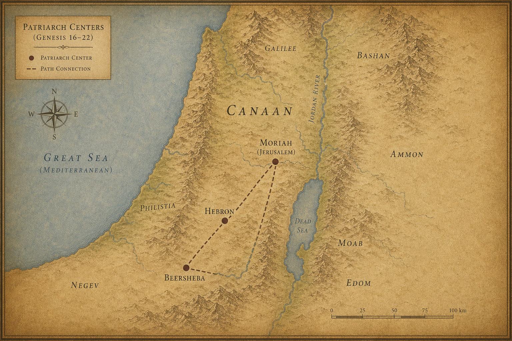
지도 7. 창세기 16~22장 배경: 헤브론·브엘세바·모리아 중심축.
1 이 일들 뒤에 하나님이 아브라함을 시험하셨다.
“아브라함아!”
“제가 여기 있습니다.”
2 하나님이 말씀하셨다.
“네 아들, 네 사랑하는 독자 이삭을 데리고 모리아(Moriah, 전통적으로 예루살렘 성전산) 땅으로 가서, 내가 네게 일러줄 한 산 거기서 그를 번제로 드리라.”
‘네 아들.’ ‘네 사랑하는.’ ‘독자.’ 세 번에 걸쳐 확인하듯 말씀하셨다. 하나님도 이 명령이 얼마나 무거운 것인지 알고 계셨다.
3 아브라함이 아침 일찍 일어나 나귀에 짐을 싣고, 두 종과 아들 이삭을 데리고, 번제에 쓸 나무를 쪼개어 가지고, 하나님이 일러주신 곳으로 길을 떠났다.
4 사흘 만에 아브라함이 고개를 들어 그 곳을 멀리서 보았다.
5 아브라함이 종들에게 말했다.
“너희는 나귀와 함께 여기서 기다려라. 내가 아이와 함께 저기 가서 예배하고 우리가 너희에게로 돌아오리라.”
‘우리가 돌아오리라.’ 두 사람이 함께 돌아온다고 했다. 믿음인지, 아직 실감이 안 되는 것인지 — 아브라함만 알았다.
6 아브라함이 번제 나무를 가져다가 아들 이삭에게 지웠다. 자기는 불과 칼을 손에 들었다. 두 사람이 함께 걸어갔다.
7 이삭이 아버지 아브라함에게 말했다.
“아버지여.”
“아들아, 내가 여기 있노라.”
“불과 나무는 있거니와 번제할 어린 양은 어디 있나이까?”
8 아브라함이 말했다.
“아들아, 번제할 어린 양은 하나님이 직접 준비하시리라.”
둘이 함께 걸어갔다.
아버지는 아들에게 무슨 말을 해야 할지 몰랐을 것이다. 그래서 진실을 말했다. 그 진실이 그 순간 아버지 자신도 모르게 예언이 되었다.
9 하나님이 일러주신 그 곳에 이르러, 아브라함이 거기서 제단을 쌓고 나무를 벌려 놓았다.
그리고 아들 이삭을 결박하여 제단 나무 위에 놓았다.
10 아브라함이 손을 내밀어 칼을 잡았다.
아들을 잡으려 했다.
11 여호와의 천사가 하늘에서 그를 부르셨다.
“아브라함아! 아브라함아!”
“제가 여기 있습니다.”
12 > “그 아이에게 네 손을 대지 말라. 그에게 아무것도 하지 말라. 이제 내가 네가 하나님을 두려워하며 공경하는 줄 아노라. 네가 네 아들, 네 독자까지도 내게 아끼지 아니하였느니라.”
13 아브라함이 고개를 들어 살펴보았다.
뒤에 숫양 한 마리가 있었다. 뿔이 수풀에 걸려 있었다.
아브라함이 가서 그 숫양을 가져다가 아들을 대신하여 번제로 드렸다.
14 아브라함이 그 곳의 이름을 여호와 이레(Yahweh-Yireh)라 했다. 오늘날까지 사람들이 말하기를 ’여호와의 산에서 준비되리라’고 한다.
‘여호와 이레’ — 여호와께서 준비하신다. 아브라함이 아들에게 한 말이 그대로 응하는 순간이었다.
15 여호와의 천사가 하늘에서 두 번째로 아브라함을 부르셨다.
16 > “여호와가 이르시기를, 내가 나를 두고 맹세하노니, 네가 이 일을 행하여 네 아들, 네 독자도 아끼지 아니하였은즉,”
17 > “내가 네게 큰 복을 주고, 네 자손이 크게 번성하여 하늘의 별과 같고 바닷가의 모래와 같게 하리니, 네 자손이 그 대적의 성문을 차지하리라.”
18 > “또 네 자손으로 말미암아 세상 모든 민족이 복을 받으리니, 이는 네가 나의 말을 따랐음이니라.”
19 아브라함이 종들에게로 돌아왔다. 그들이 함께 일어나 브엘세바(Beersheba, 네게브 사막)로 갔다. 아브라함이 브엘세바에 살았다.
20 이 일 뒤에 아브라함에게 소식이 왔다.
“밀가도 네 형제 나홀에게 자녀를 낳았도다.”
21 첫째 아들은 우스, 그 다음은 부스, 그 다음은 아람의 아버지 그무엘,
22 또 게셋과 하소와 빌다스와 이들랍과 브두엘이라.
23 이 여덟 사람은 밀가가 아브라함의 형제 나홀에게서 낳은 자들이다.
브두엘은 리브가를 낳았다.
리브가라는 이름이 여기 처음 등장한다. 이 짧은 한 줄이 다음 이야기 전체의 복선이다.
24 나홀의 첩 르우마도 데바와 가함과 다하스와 마아가를 낳았다.
다음 장 — 사라가 백이십칠 세로 헤브론에서 숨을 거둔다. 아브라함이 그녀를 묻을 땅 한 조각을 사기 위해 협상을 시작한다.
1 사라가 백이십칠 년을 살았다. 이것이 사라의 일생이었다.
2 사라가 기럇아르바 곧 헤브론(Hebron, 팔레스타인 헤브론 — 아랍명 알 칼릴)에서 죽었다. 아브라함이 들어가서 사라를 위해 슬퍼하며 울었다.
백이십칠 년. 구십 살에 이삭을 낳고 서른일곱 해를 더 살았다. 처음 이집트에 내려갔던 날부터 이삭이 걸음마를 떼던 날까지 — 사라가 없었다면 이 이야기의 절반은 없었다.
3 아브라함이 죽은 자를 앞에 두고 일어나 헷 족속에게 말했다.
4 > “나는 당신들 중에 나그네요 떠돌이라. 당신들 중에서 내게 장례를 치를 땅을 주어 내가 내 죽은 자를 묻게 하시오.”
5 헷 족속이 아브라함에게 대답했다.
6 > “내 주여, 들으소서. 당신은 우리 가운데에 있는 하나님이 세우신 지도자이십니다. 우리 묘실 중에서 좋은 것을 택하여 당신의 죽은 자를 묻으소서. 우리 중에 자기 묘실을 아껴 당신이 죽은 자를 묻지 못하게 할 자가 없으리이다.”
7 아브라함이 일어나 그 땅 주민인 헷 족속을 향해 절하고,
8 그들에게 말했다.
“당신들의 마음이 내 죽은 자를 묻게 하려거든, 내 말을 듣고 나를 위하여 소할의 아들 에브론에게 부탁하여,”
9 > “마므레(Mamre, 헤브론 근처) 앞 막벨라(Machpelah, 헤브론 근처) 굴을 내게 주도록 하소서. 충분한 값을 받고 당신들 앞에서 내게 그 굴을 팔아 내게 묻을 땅을 주게 하소서.”
10 에브론이 마침 헷 족속 가운데 앉아 있었다. 그가 성문으로 들어온 모든 헷 족속의 귀에 들리게 대답했다.
11 > “내 주여, 그리 마시고 내 말을 들으소서. 내가 그 밭을 당신께 드리고 그 속의 굴도 드리겠습니다. 내 동족 앞에서 드리오니 당신의 죽은 자를 묻으소서.”
예의 바른 거절의 제안이었다. 받으면 빚이 생긴다. 아브라함은 그걸 알았다.
12 아브라함이 그 땅 주민 앞에서 절하고
13 그 땅 주민의 귀에 들리게 에브론에게 말했다.
“당신이 허락하신다면 내 말을 들으소서. 내가 그 밭의 값을 드리겠으니 내 손에서 받으소서. 그리하면 내가 거기에 내 죽은 자를 묻겠습니다.”
14 에브론이 아브라함에게 대답했다.
15 > “내 주여, 내 말을 들으소서. 그 땅은 은 사백 세겔이라. 그것이 나와 당신 사이에 무슨 문제가 되리이까? 당신의 죽은 자를 묻으소서.”
사백 세겔. 슬쩍 가격을 불렀다. ’그것이 무슨 문제가 되리이까’라는 말은 ’그냥 내시죠’라는 뜻이었다.
16 아브라함이 에브론의 말을 따라 상인들 사이에서 통용되는 은 사백 세겔을 달아 에브론에게 주었다.
17 마므레 앞 막벨라에 있는 에브론의 밭, 그 밭과 굴과 그 밭의 모든 나무가 성문으로 들어온 모든 헷 족속이 보는 데서
18 아브라함의 소유로 확정되었다.
19 아브라함이 그 아내 사라를 가나안 땅 마므레 앞 막벨라 밭 굴에 묻었다. 마므레는 곧 헤브론이다.
20 그 밭과 그 속의 굴이 헷 족속에게서 아브라함의 매장지 소유로 확정되었다.
가나안 땅에서 아브라함이 법적으로 소유한 첫 번째 땅. 약속의 땅에서 처음으로 얻은 것이 무덤이었다는 점이 — 아이러니하면서도 깊다. 뿌리를 내리는 방식이 이렇게도 있다.
다음 장 — 아브라함이 늙은 종에게 명령한다. 이삭의 아내를 구하러 먼 고향 땅으로 가라.
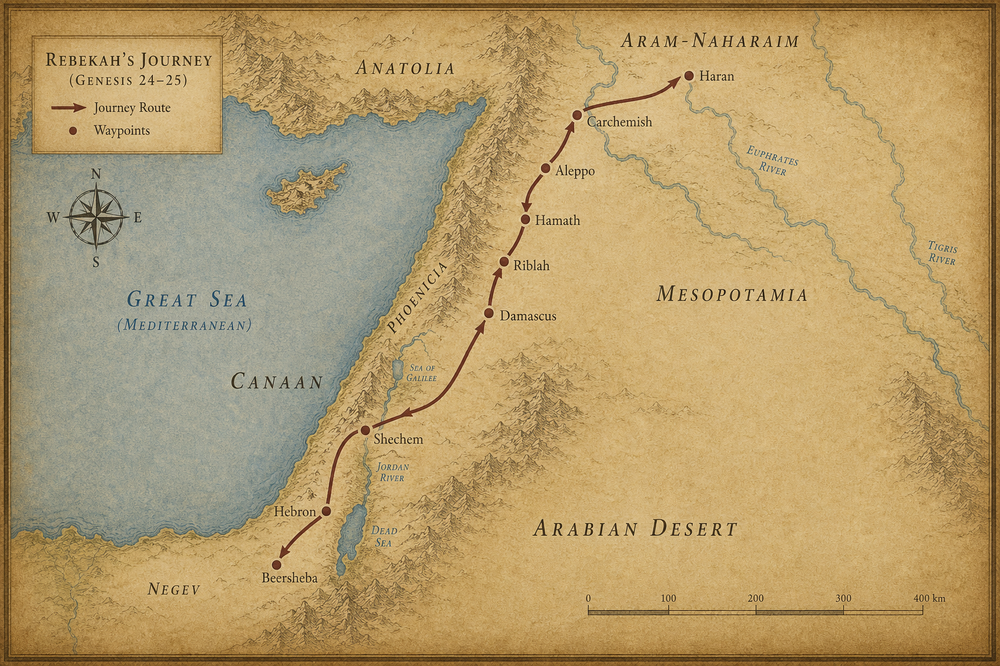
지도 8. 창세기 24~25장 배경: 리브가 여정(아람~가나안).
1 아브라함은 나이가 많아 늙었고, 여호와께서 그에게 모든 일에 복을 주셨다.
2 아브라함이 자기 집 모든 소유를 맡은 늙은 종에게 말했다.
“청하건대 내 허벅지 아래에 네 손을 넣어라.”
3 > “하늘과 땅의 하나님, 여호와를 가리켜 맹세하라. 내가 사는 이 가나안 족속의 딸 중에서 내 아들을 위하여 아내를 택하지 말고,”
4 > “내 고향, 내 친족에게로 가서 내 아들 이삭을 위하여 아내를 택하라.”
허벅지 아래 손을 넣는 맹세. 고대 근동에서 가장 엄중한 서약 방식이었다. 이 임무가 그만큼 무겁다는 뜻이었다.
5 종이 물었다.
“혹시 여자가 저를 따라 이 땅으로 오려고 하지 않으면, 주인의 아들을 주인이 나오신 그 땅으로 데리고 가야 하겠습니까?”
6 아브라함이 말했다.
“내 아들을 그리로 데려가지 않도록 하라.”
7 > “하늘의 하나님 여호와께서 나를 내 아버지의 집과 내 고향 땅에서 이끌어 내시고, 내게 맹세하여 이르시기를 이 땅을 네 자손에게 주리라 하셨으니, 그가 그 천사를 너보다 앞서 보내실지라. 거기서 내 아들을 위하여 아내를 택하라.”
8 > “만일 여자가 너를 따라오려 하지 아니하면 나의 이 맹세가 너와 상관이 없으니, 오직 내 아들을 그리로 데려가지 말지니라.”
9 종이 손을 아브라함의 허벅지 아래에 넣고 이 일에 대하여 맹세했다.
10 종이 주인의 낙타 열 마리를 끌고 떠났다. 주인의 모든 좋은 것을 손에 가지고. 그가 일어나 밧단아람(Paddan-Aram, 시리아 북부·터키 경계), 곧 나홀의 성으로 갔다.
11 그가 저녁 때, 여자들이 물을 길으러 나올 시각에 낙타들을 성 밖 우물 곁에 꿇렸다.
12 그리고 기도했다.
“우리 주인 아브라함의 하나님 여호와여, 오늘 저에게 잘 되게 하시어 내 주인 아브라함에게 은혜를 베풀어 주십시오.”
13 > “성 주민의 딸들이 물 길으러 나오는 이때에 제가 이 샘 곁에 서 있사오니,”
14 > “제가 한 소녀에게 ‘청하건대 네 물동이를 기울여 나로 마시게 하라’ 할 때에 그가 ‘마시세요, 제가 당신의 낙타에게도 마시게 하겠습니다’ 하면, 그가 곧 주께서 주인 이삭을 위하여 정하신 사람이라. 이로 말미암아 주께서 내 주인에게 은혜 베푸심인 줄 제가 알겠습니다.”
15 그가 속으로 말을 마치기도 전에 리브가가 물동이를 어깨에 메고 나왔다. 그녀는 아브라함의 형제 나홀의 아내 밀가의 아들 브두엘의 딸이었다.
16 그 소녀는 보기에 아주 아름다웠고, 아직 남자를 가까이하지 아니한 처녀였다. 그녀가 샘으로 내려가 물동이에 물을 길어 올라왔다.
17 종이 달려가 그녀를 만나 말했다.
“청하건대 네 물동이의 물을 내게 조금 마시게 해다오.”
18 그녀가 말했다.
“드세요, 내 주여.”
서둘러 그 물동이를 손에 내려 마시게 했다.
19 그에게 마시게 하기를 마치고 그녀가 말했다.
“당신의 낙타들을 위해서도 물을 길어, 그것들이 충분히 마시도록 하겠습니다.”
20 그녀가 서둘러 물동이의 물을 구유에 붓고, 다시 우물로 달려가 길었다. 낙타를 모두 위해 길었다.
21 그 사람이 그녀를 말없이 바라보았다. 여호와께서 자기 길을 잘 되게 하셨는지 알고 싶어서였다.
낙타 열 마리에게 충분할 만큼 물을 긷는 일이 얼마나 힘든 일인지. 리브가는 묻지 않고 일을 했다. 그 모습을 종은 말없이 지켜보았다.
22 낙타들이 마시기를 마치자 그가 금 코 패물 하나를 꺼냈다. 무게는 반 세겔. 그리고 그녀의 손에 낄 금 팔찌 한 쌍, 무게는 열 세겔.
23 그가 물었다.
“너는 누구의 딸이냐? 내게 말해다오. 네 아버지의 집에 우리가 묵을 곳이 있느냐?”
24 그녀가 말했다.
“저는 밀가가 나홀에게서 낳은 아들 브두엘의 딸입니다.”
25 > “저희에게 짚과 꼴이 충분하고 묵을 곳도 있습니다.”
26 그 사람이 머리를 숙여 여호와께 경배하며
27 말했다.
“나의 주인 아브라함의 하나님 여호와를 찬송합니다. 나의 주인에게 한결같은 사랑과 성실함을 잊지 않으셨으며, 길에서 여호와께서 나를 인도하사 내 주인의 형제 집으로 가게 하셨습니다.”
28 그 소녀가 달려가 이 일을 어머니 집에 알렸다.
29 리브가에게는 오라비가 있었으니 이름은 라반이었다. 라반이 우물 곁의 그 사람에게로 달려갔다.
30 그가 코 패물과 그 누이의 손 위의 팔찌를 보고, 또 그 누이 리브가가 그 사람이 자기에게 이렇게 말하더라고 한 말을 들었다. 그가 그 사람에게로 나아가니, 그가 낙타들 곁에서 우물 가에 서 있었다.
31 라반이 말했다.
“여호와께 복을 받은 분이여, 들어오십시오. 어찌 밖에 서 계십니까? 제가 집과 낙타의 처소를 준비해 두었습니다.”
32 그 사람이 집으로 들어가니 라반이 낙타들을 들이고, 낙타에게 짚과 꼴을 주고, 그의 발과 그 일행의 발을 씻을 물을 주었다.
33 그의 앞에 음식을 드렸다. 그러나 그 사람이 말했다.
“제 볼일을 말씀드리기 전에는 먹지 않겠습니다.”
라반이 말했다.
“말씀하십시오.”
34 그가 말했다.
“저는 아브라함의 종입니다.”
35 > “여호와께서 내 주인에게 크게 복을 주시어 번성하게 하셨고, 양과 소와 은금과 남녀 종과 낙타와 나귀를 그에게 주셨습니다.”
36 > “내 주인의 아내 사라께서 노년에 내 주인에게 아들을 낳으셨고, 주인은 모든 소유를 그 아들에게 주셨습니다.”
37 > “내 주인이 저를 시켜 맹세하게 하여 이르시기를, 내 아들을 위하여 내가 사는 가나안 족속의 딸 중에서 아내를 택하지 말고,”
38 > “내 아버지 집, 내 친족에게로 가서 내 아들을 위하여 아내를 택하라 하셨습니다.”
39 > “제가 주인께 여쭈기를, 여자가 저를 따르지 아니하면 어찌하리이까 하니,”
40 > “주인이 제게 이르시기를, 내가 섬기는 여호와께서 그의 천사를 너와 함께 보내어 길을 잘 되게 하실지라.”
41 > “네가 내 친족에게 이를 때에 나의 이 맹세가 네게 상관이 없으리니, 그들이 허락하지 아니하면 맹세가 네게 상관이 없느니라.”
42 > “제가 오늘 우물에 이르러 말하기를, 내 주인 아브라함의 하나님 여호와여, 원하건대 제가 가는 이 길을 잘 되게 하옵소서.”
43 > “제가 이 우물 곁에 서 있다가 한 소녀가 물을 길으러 나오기를 기다리고, 그에게 말하기를, 청하건대 네 물동이의 물을 내가 마시게 하라 하여,”
44 > “그가 내게 마시게 하고 또 낙타를 위해서도 물을 긷겠다 하면, 그가 여호와께서 내 주인의 아들을 위하여 정하신 여자이리라 하였더니,”
45 > “제 마음속으로 다 말하기도 전에 리브가가 물동이를 어깨에 메고 나와 우물로 내려와 물을 길었습니다. 제가 그에게 마시게 하기를 청하니,”
46 > “그가 빨리 물동이를 어깨에서 내리며 말하기를, 마시세요, 제가 당신의 낙타도 마시게 하겠습니다 하여 제가 마셨고 그가 낙타에게도 마시게 하였습니다.”
47 > “제가 그에게 묻기를, 너는 누구의 딸이냐 하였더니, 이르기를 밀가가 나홀에게서 낳은 아들 브두엘의 딸이라 하기로 제가 코 패물을 그녀의 코에 꿰고 팔찌를 그녀의 손목에 끼우고,”
48 > “머리 숙여 여호와께 경배하고, 나의 주인 아브라함의 하나님 여호와를 찬송하였습니다. 이는 여호와께서 저를 바른 길로 인도하시어 내 주인의 형제의 딸을 그 아들을 위하여 택하게 하셨기 때문입니다.”
49 > “이제 당신들이 한결같은 사랑과 진실함으로 내 주인을 대접하려거든 제게 말씀해 주시고, 아니라 하여도 제게 말씀해 주십시오. 제가 어떻게 해야 할지 알겠습니다.”
50 라반과 브두엘이 대답했다.
“이 일이 여호와께로 말미암았으니, 우리는 좋고 나쁨을 말할 수 없노라.”
51 > “리브가가 당신 앞에 있으니, 데리고 가서 여호와의 말씀대로 그를 당신의 주인의 아들의 아내가 되게 하라.”
52 아브라함의 종이 그들의 말을 듣고 여호와를 향하여 몸을 굽혀 절했다.
53 종이 은 패물과 금 패물과 의복을 꺼내어 리브가에게 주고, 그녀의 오라비와 어머니에게도 값진 물품을 주었다.
54 그 사람과 그 일행이 먹고 마시고 그 날 밤을 거기서 묵고, 아침에 일어나 그가 말했다.
“저를 내 주인에게로 보내 주십시오.”
55 그녀의 오라비와 어머니가 말했다.
“이 소녀를 며칠, 적어도 열흘만 우리와 함께 있게 하고 그 후에 보내라.”
56 그가 말했다.
“저를 붙잡지 마십시오. 여호와께서 제 길을 잘 되게 하셨으니, 저를 보내어 내 주인에게로 돌아가게 해 주십시오.”
57 그들이 말했다.
“우리가 소녀를 불러 그녀에게 물어보겠노라.”
58 리브가를 불러 그녀에게 물었다.
“네가 이 사람과 함께 가겠느냐?”
리브가가 말했다.
“가겠습니다.”
긴 협상이 한 마디로 끝났다. 리브가는 망설이지 않았다.
59 그들이 그 누이 리브가와 그녀의 유모와 아브라함의 종과 그 일행을 보냈다.
60 리브가에게 복을 빌며 말했다.
“우리 누이여, 너는 수많은 사람의 어미가 될지어다. 네 자손으로 그 원수의 성문을 얻게 할지어다.”
61 리브가와 그녀의 시녀들이 일어나 낙타에 올라타고 그 사람을 따랐다. 종이 리브가를 데리고 떠났다.
62 이삭이 브엘라해로이(Beer Lahai Roi, 네게브) 근처에 살고 있었다.
63 이삭이 저녁 때에 들에 나가 묵상하다가 고개를 들어보니 낙타들이 오고 있었다.
64 리브가도 고개를 들어 이삭을 보고 낙타에서 내렸다.
65 그녀가 종에게 물었다.
“들에서 우리를 향하여 걸어오는 저 사람은 누구예요?”
종이 말했다.
“내 주인이십니다.”
리브가가 너울을 가져다가 얼굴을 가렸다.
66 종이 자기가 한 모든 일을 이삭에게 알렸다.
67 이삭이 리브가를 데리고 그의 어머니 사라의 천막으로 들어갔다. 그녀를 아내로 맞아들였다. 이삭이 그녀를 사랑했다.
이삭이 어머니를 잃은 후에 위로를 받았다.
사랑이 위로였다. 위로가 사랑이었다. 어머니의 빈자리를 아내가 채웠다는 말이 아니라 — 그 슬픔의 자리에 새로운 이야기가 시작되었다는 말이다.
다음 장 — 아브라함이 생애를 마치고, 에서와 야곱이 태어난다. 그리고 팥죽 한 그릇에 첫째 아들의 권리가 팔린다.
1 아브라함이 후처를 맞아들였으니 그 이름은 그두라였다.
2 그녀가 시므란과 욕산과 므단과 미디안과 이스박과 수아를 낳았다.
3 욕산은 스바와 드단을 낳았다. 드단의 아들은 앗수르 족속과 르두시 족속과 르움미 족속이었다.
4 미디안의 아들은 에바와 에벨과 하녹과 아비다와 엘다아였다. 이들은 다 그두라의 자손이었다.
5 아브라함이 자기 모든 소유를 이삭에게 주었다.
6 아브라함이 살아 있을 때에 자기 서자들에게도 재물을 주어, 자기 아들 이삭에게서 떠나게 하고 동방, 곧 동쪽 땅으로 가게 하였다.
7 아브라함의 일생은 백칠십오 년이었다.
8 아브라함이 나이가 많고 기력이 다하여 숨을 거두었다. 그는 노년에 복을 누리다가 자기 조상들에게로 돌아갔다.
‘기력이 다하여.’ 불꽃이 다 타고 꺼지듯 — 억울하게도, 비극적으로도 아니었다. 충분히 살았다. 그것으로 족했다.
9 그의 두 아들 이삭과 이스마엘이 그를 마므레(Mamre, 헤브론 근처) 앞 소할의 아들 에브론의 밭에 있는 막벨라(Machpelah, 헤브론 근처) 굴에 묻었다.
10 이것은 아브라함이 헷 족속에게서 산 것이었다. 아브라함이 거기서 그의 아내 사라와 함께 묻혔다.
11 아브라함이 죽은 후에 하나님이 그의 아들 이삭에게 복을 주셨다. 이삭은 브엘라해로이(Beer Lahai Roi, 네게브) 근처에 살았다.
12 사라의 여종 이집트인 하갈이 아브라함에게 낳은 아들 이스마엘의 족보가 이러하다.
13 이스마엘의 아들들의 이름은 그 이름과 세대대로 이러하니, 이스마엘의 첫째 아들은 느바욧이요, 게달과 아드베엘과 밉삼과
14 미스마와 두마와 맛사와
15 하닷과 데마와 여둘과 나비스와 게드마였다.
16 이들은 이스마엘의 아들들이요, 그 마을과 진영의 이름대로 불린 것이니 열두 지도자였다.
17 이스마엘은 백삼십칠 세에 숨을 거두었다. 기운이 다하여 자기 조상들에게로 돌아갔다.
18 그들은 하윌라에서부터 이집트 앞 앗수르로 통하는 술(Shur)까지 이르러 살았다. 그는 형제들의 맞은편에서 살았다.
19 아브라함의 아들 이삭의 족보는 이러하니라.
20 이삭은 사십 세에 밧단아람(Paddan-Aram, 시리아 북부·터키 경계) 출신 아람 족속인 브두엘의 딸 리브가를 아내로 맞아들였다. 리브가는 아람 족속인 라반의 누이였다.
21 이삭이 그의 아내가 임신하지 못하므로 아내를 위하여 여호와께 기도하였더니, 여호와께서 그의 기도를 들으셨다. 그의 아내 리브가가 임신하였다.
22 아이들이 그녀의 태 안에서 서로 싸우는 것이었다. 그녀가 말했다.
“이럴 것이라면 내가 어찌하여 이렇게 되었나이까?”
그녀가 여호와께 여쭈러 갔다.
23 여호와께서 그녀에게 말씀하셨다.
“두 나라가 네 태중에 있구나. 두 민족이 네 배 속에서부터 나뉘리라. 이 족속이 저 족속보다 강하겠고, 큰 자가 어린 자를 섬기리라.”
태중에서 이미 역사가 시작되고 있었다. 큰 자가 작은 자를 섬긴다 — 이것은 규칙을 뒤집는 선언이었다.
24 출산 날이 되었다. 태에 쌍둥이가 있었다.
25 첫 번째 아이가 나왔다. 붉고 온 몸이 털옷 같았다. 그의 이름을 에서(Esau)라 했다. ’털이 있다’는 뜻이다.
26 그다음으로 그의 아우가 나왔다. 손이 에서의 발꿈치를 잡고 있었다. 그의 이름을 야곱(Jacob)이라 했다. ‘발꿈치를 잡다’, 혹은 ’속이다’는 뜻이다. 태어나는 순간부터 이름이 성격을 예고했다.
그들이 태어날 때에 이삭은 육십 세였다.
27 아이들이 자랐다. 에서는 능숙한 사냥꾼이 되었다. 들사람이었다. 야곱은 조용한 사람이었다. 천막에 살았다.
28 이삭은 에서의 고기를 즐겨 먹으므로 에서를 사랑했고, 리브가는 야곱을 사랑했다.
한 집안에서 아버지의 사람과 어머니의 사람이 나뉘었다. 이 작은 편애가 훗날 얼마나 큰 균열을 만들지 — 아직 아무도 몰랐다.
29 야곱이 죽을 끓이고 있었다. 에서가 들에서 돌아왔다. 아주 지쳐 있었다.
30 에서가 야곱에게 말했다.
“나 너무 배고파. 저 붉은 것 좀 먹게 해다오.”
그러므로 그의 이름을 에돔(Edom)이라 했다. ’붉다’는 뜻이다.
31 야곱이 말했다.
“그럼 형의 첫째 아들 권리를 오늘 내게 팔아.”
32 에서가 말했다.
“나 지금 죽을 것 같은데 그 첫째 아들 권리가 내게 무슨 소용이냐.”
33 야곱이 말했다.
“오늘 내게 맹세해.”
에서가 맹세하였다. 그의 첫째 아들 권리를 야곱에게 판 것이다.
34 야곱이 에서에게 빵과 팥죽을 주었다. 에서가 먹고 마시고 일어나 갔다.
에서가 첫째 아들 권리를 가볍게 여긴 것이었다.
배가 고프면 내일이 보이지 않는다. 에서는 오늘의 허기를 내일의 유산보다 크게 보았다. 그 한 번의 선택이 그의 이름을 역사에 어떻게 새길지 — 그는 빵을 씹으며 생각하지 않았다.
다음 장 — 이삭이 아버지의 발자국을 따라 그랄로 간다. 그리고 아버지처럼, 아내를 누이라고 속인다.
1 아브라함 때에 있던 첫 번째 기근과는 별개로, 그 땅에 또 기근이 들었다. 이삭이 블레셋 왕 아비멜렉(Abimelech)에게로, 그랄(Gerar, 가자 지구 남쪽)로 갔다.
이 아비멜렉이 20장의 아비멜렉과 같은 인물인지는 확실하지 않다. 수십 년의 세월이 흘렀다. 같은 왕조의 칭호일 수도 있고, 같은 인물의 노년일 수도 있다.
2 여호와께서 이삭에게 나타나 말씀하셨다.
“이집트로 내려가지 말라. 내가 네게 이르는 땅에 머물러라.”
3 > “이 땅에 머물면 내가 너와 함께 있어 네게 복을 주고, 내가 이 모든 땅을 너와 네 자손에게 주리라. 내가 네 아버지 아브라함에게 맹세한 것을 이루어,”
4 > “네 자손을 하늘의 별과 같이 번성하게 하며 이 모든 땅을 네 자손에게 주리니, 네 자손으로 말미암아 천하 만민이 복을 받으리라.”
5 > “이는 아브라함이 내 말을 순종하고 내 명령과 내 계명과 내 율례와 내 법도를 지켰기 때문이다.”
6 이삭이 그랄에 머물렀다.
7 그 곳 사람들이 그의 아내에 대해 물었다. 이삭이 말했다.
“그녀는 내 누이라.”
아버지 아브라함이 이집트에서, 또 이 그랄에서 두 번 썼던 바로 그 말이었다. 배운 게 아닐 수도 있다. 같은 두려움 앞에서 인간이 내놓는 답이 세대를 넘어 반복되는 것이다.
리브가가 아름다우므로 혹 그 곳 사람들이 리브가로 말미암아 자기를 죽일까 두려워했기 때문이었다.
8 이삭이 거기 오랫동안 머물렀는데, 어느 날 블레셋 왕 아비멜렉이 창으로 내려다보다가 이삭이 그 아내 리브가와 껴안는 것을 보았다.
9 아비멜렉이 이삭을 불러 말했다.
“그녀는 정말 네 아내인데 어찌 네 누이라 하였느냐?”
이삭이 말했다.
“내가 죽게 될까 두려웠습니다.”
10 아비멜렉이 말했다.
“네가 어찌 우리에게 이렇게 하였느냐? 백성 중 하나가 네 아내와 동침할 뻔하였을 것이요, 그것이 죄악이 되었을 것이다.”
11 아비멜렉이 온 백성에게 명령하여 말했다.
“이 사람이나 그 아내를 해하는 자는 반드시 죽을 것이다.”
12 이삭이 그 땅에서 농사를 지어 그 해에 백 배나 얻었다. 여호와께서 복을 주신 것이었다.
13 그 사람이 점점 강해지고 번성하여 마침내 아주 부유하게 되었다.
14 양과 소가 떼를 이루고, 종들이 많았다. 블레셋 사람들이 그를 시기했다.
15 그 아버지 아브라함의 종들이 아버지 생전에 판 모든 우물들을 블레셋 사람들이 메워 흙으로 가득히 채웠다.
16 아비멜렉이 이삭에게 말했다.
“네가 우리보다 훨씬 강해졌으니 우리를 떠나라.”
17 이삭이 그 곳을 떠나 그랄 골짜기에 천막을 치고 거기 머물렀다.
18 이삭이 아버지 아브라함 때에 팠던 우물들을 다시 팠다. 블레셋 사람들이 아브라함이 죽은 후 그것들을 메운 것이었다. 이삭이 그 우물들의 이름을 아버지가 불렀던 그 이름대로 불렀다.
19 이삭의 종들이 골짜기를 파다가 샘 솟는 우물을 얻었다.
20 그랄 목자들이 이삭의 목자들과 다투며 말했다.
“이 물은 우리 것이다.”
이삭이 그 우물의 이름을 에섹(Esek)이라 했다. ’다툼’이라는 뜻이다. 그들이 자기와 다투었기 때문이었다.
21 이삭의 종들이 다른 우물을 팠다. 그것에 대해서도 또 다투었다. 그 우물의 이름을 싯나(Sitnah)라 했다. ’대적’이라는 뜻이다.
22 이삭이 거기서 옮겨 다른 우물을 팠다. 이번에는 다투지 않았다. 그는 그 이름을 르호봇(Rehoboth)이라 했다.
“이제는 여호와께서 우리를 위하여 넓게 하셨으니, 우리가 이 땅에서 번성하리로다.”
에섹, 싯나, 르호봇. 다툼, 대적, 넓음. 세 우물의 이름이 이삭의 여정을 요약한다. 밀려나도 다시 팠다. 쫓겨나도 다시 팠다. 그리고 마침내 넓어졌다.
23 이삭이 거기서 브엘세바(Beersheba, 네게브 사막 — 현대 이스라엘 남부 도시)로 올라갔다.
24 그 밤에 여호와께서 그에게 나타나 말씀하셨다.
“나는 네 아버지 아브라함의 하나님이라. 두려워하지 말라, 내가 너와 함께 있어 네게 복을 주고, 내 종 아브라함으로 말미암아 네 자손의 수를 번성하게 하리라.”
25 이삭이 그 곳에 제단을 쌓아 여호와의 이름을 부르고, 거기 천막을 쳤다. 이삭의 종들이 거기서 우물을 팠다.
26 아비멜렉이 그 친구 아훗삿과 군대 장관 비골을 데리고 그랄에서 이삭에게 왔다.
27 이삭이 그들에게 말했다.
“너희가 나를 미워하여 나를 너희에게서 쫓아냈는데, 어찌 내게 왔느냐?”
28 그들이 말했다.
“여호와께서 너와 함께 계심을 우리가 분명히 보았으므로 우리 사이, 우리와 너 사이에 맹세하게 하여 너와 약속을 맺으려 한다.”
29 > “너는 우리를 해하지 말라. 우리가 너를 해하지 아니하고 선하게만 대우하였으며, 너를 평안히 보내었다. 너는 이제 여호와께 복을 받은 자이니라.”
30 이삭이 잔치를 베풀었다. 그들이 먹고 마셨다.
31 아침 일찍 일어나 서로 맹세하고, 이삭이 그들을 보내니 그들이 평안히 갔다.
32 그 날 이삭의 종들이 자기들이 판 우물에 관하여 와서 말했다.
“우리가 물을 얻었습니다.”
33 이삭이 그 이름을 세바(Sheba)라 하였다. ’맹세’라는 뜻이다. 그러므로 그 도시 이름이 오늘까지 브엘세바(Beersheba)이다.
34 에서가 사십 세에 헷 족속 브에리의 딸 유딧과 헷 족속 엘론의 딸 바스맛을 아내로 맞아들였다.
35 그들이 이삭과 리브가의 마음에 근심이 되었다.
에서는 자기 세계 안에서 자연스럽게 살았다. 그러나 그 선택이 부모의 가슴에 어떤 돌을 올려놓았는지는 몰랐다. 혹은 알면서도 개의치 않았는지 — 그것은 이삭과 리브가만 알았다.
다음 장 — 눈이 어두워진 이삭이 축복을 내릴 때, 야곱이 에서의 자리에 들어선다. 리브가가 그 계획을 짠다.
1 이삭은 늙었다. 눈이 흐려져 앞이 보이지 않았다. 그는 첫째 아들 에서를 불렀다.
“아들아.”
“예, 여기 있습니다.”
2 > “나는 이제 늙었다. 언제 죽을지 모른다.”
3 > “네 활과 화살통을 메고 들로 나가, 나를 위해 사냥을 해라.”
4 > “내가 좋아하는 맛있는 음식을 만들어 가져오너라. 내가 죽기 전에 먹고 네게 축복하리라.”
에서는 대답도 마치기 전에 나갔다. 사냥꾼의 발이었다.
5 리브가는 그 말을 다 들었다.
이삭이 에서에게 말하는 것을 엿들었다는 표현이 정확하다. 그녀는 처음부터 끝까지 문 뒤에 있었다.
6 리브가는 작은아들 야곱을 불렀다.
“들어라. 네 아버지가 에서에게 말하는 것을 들었다.”
7 > “사냥해서 맛있는 음식을 만들어 오라 하셨다. 죽기 전에 여호와 앞에서 네 형을 축복하시겠다고.”
8 > “이제 내 말을 잘 들어라.”
9 > “염소 떼에 가서 좋은 염소 새끼 둘을 가져오너라. 내가 아버지가 좋아하시는 맛있는 음식을 만들겠다.”
10 > “그것을 아버지께 드려라. 아버지가 드시고 돌아가시기 전에 네게 축복하실 것이다.”
11 야곱이 어머니 리브가에게 말했다.
“어머니, 형 에서는 털이 많고 저는 매끈합니다.”
12 > “아버지가 만지시면 제가 속이는 자로 보일 테고, 축복이 아니라 저주가 임할까 두렵습니다.”
13 리브가가 말했다.
“그 저주는 내가 받으리니, 아들아. 내 말만 들어라. 가서 가져오너라.”
14 야곱은 가서 새끼 염소 둘을 어머니에게 가져왔다. 리브가는 아버지 이삭이 좋아하는 맛있는 음식을 만들었다.
15 그리고 리브가는 집 안에 보관해두었던 첫째 아들 에서의 좋은 옷을 꺼내 작은아들 야곱에게 입혔다.
16 새끼 염소의 가죽을 야곱의 손과 목의 매끈한 살 위에 덮었다.
17 맛있는 음식과 빵을 야곱의 손에 들려 보냈다.
18 야곱이 아버지 앞에 나아갔다.
“아버지.”
“여기 있다. 너는 누구냐, 아들아?”
19 > “저는 아버지의 첫째 아들 에서입니다. 아버지가 제게 말씀하신 대로 했습니다. 일어나 앉아서 제가 사냥한 것을 드시고 제게 축복하여 주소서.”
20 이삭이 아들에게 말했다.
“어찌 이리 빨리 찾았느냐, 아들아?”
“여호와 하나님께서 제 앞에 순조롭게 만나게 하셨습니다.”
거룩한 이름까지 끌어다 썼다. 야곱은 한 치의 흔들림 없이 거짓말을 이었다.
21 이삭이 말했다.
“가까이 오너라. 네가 정말 내 아들 에서인지 아닌지 만져보겠다.”
22 야곱이 가까이 다가갔다. 이삭이 손을 내밀어 만졌다.
“음성은 야곱의 음성인데, 손은 에서의 손이구나.”
23 이삭은 알아보지 못했다. 야곱의 손이 형 에서처럼 털이 있었기 때문이다. 축복하려 했다.
24 다시 물었다.
“네가 정말 내 아들 에서냐?”
“그렇습니다.”
25 > “가져오너라. 내 아들의 사냥한 것을 먹겠다. 네게 마음껏 축복하리라.”
이삭은 먹었다. 포도주도 마셨다.
26 그러고는 말했다.
“아들아, 가까이 와서 내게 입을 맞추어라.”
27 야곱이 가까이 가서 입을 맞추었다. 이삭은 그 옷의 향기를 맡았다. 그리고 드디어 축복했다.
“내 아들의 향기는 여호와께서 복 주신 밭의 향기로다.”
28 > “하나님이 하늘의 이슬과 땅의 기름진 것과 풍성한 곡식과 포도주를 네게 주시기를 원하노라.”
29 > “민족들이 너를 섬기고 백성들이 네게 굴복하리라. > 네 형제들이 너의 주가 되고, 네 어머니의 아들들이 네게 절하리라. > 너를 저주하는 자는 저주를 받고, 너를 축복하는 자는 복을 받을지어다.”
30 이삭이 야곱에게 축복하기를 마치자마자, 야곱이 막 문을 나섰다. 그때 에서가 사냥에서 돌아왔다.
31 에서도 맛있는 음식을 만들어 아버지에게 가져왔다.
“아버지, 일어나서 아들이 사냥한 것을 드시고, 저를 축복하여 주소서.”
32 이삭 아버지가 물었다.
“너는 누구냐?”
“저는 아버지의 아들, 첫째 아들 에서입니다.”
33 이삭은 아주 크게 떨었다. 몸이 굳어 버렸다.
“그렇다면 — 방금 사냥해서 내게 가져온 자가 누구냐? 네가 오기 전에 내가 다 먹고 축복하였는데, 그 축복은 그에게 간 것이다. 그가 반드시 복을 받을 것이다.”
34 에서는 아버지의 말을 듣고 아주 크게, 통곡에 가깝게 소리를 질렀다.
“아버지, 나도 축복해 주소서!”
35 > “네 아우가 와서 속여 네 복을 빼앗아 갔다.”
36 > “그의 이름이 야곱이라 하더니 마침 합당하지 아니합니까. 두 번이나 나를 속였습니다. 전에는 내 맏이의 권리를 빼앗더니, 이제 또 내 복을 빼앗았습니다.”
그리고 에서가 물었다.
“아버지가 나를 위해 빌 복을 남겨두지 않으셨습니까?”
37 이삭이 에서에게 말했다.
“내가 그를 이미 네 주로 세우고, 그 형제들을 그에게 종으로 주었다. 또 곡식과 포도주로 그를 도왔거늘, 이제 아들아, 내가 네게 무엇을 해줄 수 있겠느냐?”
38 에서가 아버지에게 말했다.
“아버지, 가진 복이 그 하나뿐입니까? 나도 축복해 주소서, 아버지여.”
에서가 소리를 높여 울었다.
39 이삭 아버지가 대답했다.
“네 거처는 땅의 기름진 곳에서 떠날 것이요, 하늘의 이슬도 없는 곳에 있을 것이다.”
40 > “칼로 살 것이며, 네 아우를 섬길 것이다. > 그러나 네가 방황하거든, 그 멍에를 네 목에서 떨쳐버리리라.”
41 에서는 야곱을 미워하기 시작했다. 아버지가 야곱에게 준 그 축복 때문이었다.
에서는 속으로 말했다.
아버지 이삭이 곧 돌아가실 것이다. 그때가 되면 야곱을 죽이리라.
42 리브가에게 큰아들 에서의 말이 새어 들어갔다. 리브가는 작은아들 야곱을 불렀다.
“네 형 에서가 너를 죽여 원한을 풀려 하고 있다.”
43 > “이제 내 말을 들어라. 일어나 하란(Haran, 현재 터키 남동부 산르우르파주)에 있는 내 오빠 라반에게 가라.”
44 > “에서의 분노가 풀릴 때까지 거기서 며칠 살아라.”
45 > “네 형의 분이 풀려 네가 형에게 행한 것을 잊어버리거든, 내가 사람을 보내어 거기서 너를 데려오리라. 어찌 하루에 두 아들을 잃겠느냐.”
46 리브가가 이삭에게 말했다.
“내가 헷 족속 딸들로 말미암아 사는 것이 싫증이 납니다. 야곱도 이 땅의 딸을 아내로 맞으면 내가 무슨 낙으로 살겠습니까?”
며칠이라고 했다. 그 며칠은 결국 20년이 된다. 리브가는 야곱의 얼굴을 다시 보지 못했다.
다음 장 — 야곱이 하란을 향해 도망치는 첫 밤, 돌 베개를 베고 누운 자리에서 하늘까지 닿는 사닥다리를 꿈에 본다.
1 이삭이 야곱을 불러 축복하며 명령했다.
“가나안 땅의 딸들 중에서 아내를 맞아들이지 말아라.”
2 > “일어나 밧단아람(Paddan-Aram, 현재 시리아 북부·터키 경계 일대)으로 가서, 네 외조부 브두엘의 집에 이르러라. 거기서 네 외삼촌 라반의 딸 중에서 아내를 맞아들여라.”
3 > “전능하신 하나님이 네게 복을 주시고 너를 자라게 하시고 번성케 하시리라. 그리하여 네가 여러 민족의 조상이 되게 하시기를 원하노라.”
4 > “또한 아브라함에게 주신 복을 네게 주시기를 원하노라. 너와 함께한 자손에게도 주시기를 원하노라. 하나님이 아브라함에게 주신 땅, 나그네로 살던 이 땅을 네가 물려받게 되기를 원하노라.”
5 이삭이 야곱을 보내었다. 야곱은 밧단아람을 향해 길을 나섰다. 외삼촌 라반에게로. 라반은 아람 사람 브두엘의 아들이요, 야곱과 에서의 어머니 리브가의 오빠였다.
6 에서는 이삭이 야곱을 축복하여 밧단아람으로 보낸 것을 지켜봤다. 그리고 가나안 땅의 여자를 맞아들이지 말라는 명령도 들었다.
7 야곱이 부모의 말을 순종하여 밧단아람으로 떠난 것도 봤다.
8 에서는 가나안 딸들이 아버지 이삭을 기쁘게 하지 못한다는 것을 그때서야 깨달았다.
9 에서는 이스마엘에게 가서, 자기에게 이미 있는 아내들 외에 이스마엘의 딸 마할랏을 또 아내로 맞아들였다. 마할랏은 아브라함의 아들 이스마엘의 딸이요, 느바욧의 누이였다.
부모 마음을 맞추려다 또 엇나갔다. 에서는 언제나 조금씩 늦었다.
10 야곱은 브엘세바(Beersheba, 현재 이스라엘 남부 네게브 사막 가장자리)를 떠나 하란을 향해 걸었다.
아버지의 집을 등지고, 형의 분노를 피해, 어머니의 말대로 낯선 땅을 향해 발을 내딛었다. 축복은 가졌으나 집을 잃었다. 재물도 없이 혼자였다.
11 해가 졌다. 야곱은 한 곳에 이르러 자기로 했다. 그 곳에 있는 돌 하나를 집어 베개로 삼고 누웠다.
돌 베개였다. 천막도 없었다. 별이 차가웠다. 도망자의 첫 밤이었다.
눈을 감았다.
12 꿈이었다. 땅 위에 사닥다리가 세워져 있는데, 꼭대기가 하늘에 닿아 있었다. 하나님의 천사들이 그 위를 오르락내리락하고 있었다.
13 위에 여호와께서 서 계셨다.
“나는 여호와니라. 네 조상 아브라함의 하나님이요, 이삭의 하나님이라.”
“네가 지금 누워 있는 땅을 내가 너와 네 자손에게 주리라.”
14 > “네 자손이 땅의 티끌같이 많아져서, 동서남북으로 퍼져나갈 것이다. > 땅 위의 모든 민족이 너와 네 자손으로 말미암아 복을 받으리라.”
15 > “내가 너와 함께 있어, 네가 어디로 가든지 지키리라. > 내가 너를 이 땅으로 돌아오게 하리니, 내가 네게 약속한 것을 다 이루기까지 너를 떠나지 않겠노라.”
16 야곱이 잠에서 깨어났다.
숨이 가빴다. 가슴이 두근거렸다. 꿈이었는데 꿈이 아닌 것 같았다.
“여호와께서 이 곳에 계시거늘, 내가 알지 못하였도다.”
쫓겨나듯 떠나온 황야 한복판이었다. 이름도 없는 돌밭이었다. 그런데 여기에 하나님이 계셨다.
17 두려워졌다. 두려움과 경외감이 뒤섞인 감각이었다.
“이 곳은 두렵도다. 이것은 다름 아닌 하나님의 집이요, 이것은 하늘의 문이로다.”
18 야곱은 아침에 일찍 일어났다. 베개로 삼았던 돌을 가져다가 기둥으로 세우고, 위에 기름을 부었다.
19 그 곳의 이름을 벧엘(Bethel, 현재 예루살렘 북쪽 약 19km 베이틴) 이라 불렀다. 이 도시의 본래 이름은 루스(Luz) 였다.
20 야곱은 서원을 했다.
“하나님이 나와 함께 계시어, 내가 가는 이 길을 지키시고, 내게 먹을 것과 입을 옷을 주시어,”
21 > “내가 평안히 아버지 집으로 돌아오게 하시면, 여호와께서 나의 하나님이 되실 것이요,”
22 > “내가 기둥으로 세운 이 돌이 하나님의 집이 될 것이요, 하나님이 내게 주신 모든 것에서 내가 반드시 십분의 일을 하나님께 드리겠나이다.”
조건부 서원이었다. 나를 지켜주시면 섬기겠다는. 그럼에도 하나님은 이 미완성의 신앙 고백을 받아들이셨다.
다음 장 — 야곱이 하란의 우물에 도착한다. 거기서 한 여인을 만나고, 그 여인을 위해 혼자서 큰 돌을 굴려낸다. 그리고 7년이 며칠처럼 지나간다.
1 야곱은 발걸음을 가볍게 하여 동방 사람의 땅으로 갔다.
2 들에서 우물 하나를 보았다. 그 곁에 양 떼 세 무리가 엎드려 있었다. 양들이 그 우물에서 물을 마셨는데, 우물 입구에 큰 돌이 덮여 있었다.
3 모든 떼가 거기 모이면 그 돌을 입구에서 굴려내고 양들에게 물을 먹인 뒤, 돌을 다시 제자리에 굴려 놓았다.
4 야곱이 물었다.
“형제들아, 어디서 왔소?”
“우리는 하란에서 왔소.”
5 > “나홀의 손자 라반을 아시오?”
“알지요.”
6 > “그가 평안하오?”
“평안하오. 저기 그의 딸 라헬이 양 떼를 데리고 오는도다.”
7 야곱이 말했다.
“해가 아직 높으니, 가축을 모을 때가 아니오. 양들에게 물을 먹이고 가서 풀을 뜯게 하시오.”
8 > “우리는 그럴 수 없소. 모든 떼가 다 모이고 사람들이 우물 입구에서 돌을 굴려내야 양들에게 물을 먹일 수 있소.”
9 그들이 이야기하는 동안 라헬이 아버지의 양 떼를 몰고 왔다. 라헬은 목자였다.
10 야곱은 외삼촌 라반의 딸 라헬과, 외삼촌 라반의 양 떼를 보자마자 가까이 나아가 혼자서 우물 입구의 돌을 굴려냈다.
보통은 여러 목자가 힘을 합쳐야 하는 돌이었다. 야곱이 혼자 굴렸다. 라헬 앞에서.
그리고 외삼촌 라반의 양 떼에게 물을 먹였다.
11 야곱이 라헬에게 입 맞추었다. 그리고 소리 높여 울었다.
12 야곱은 자신이 리브가의 아들, 라헬의 아버지 라반의 조카임을 라헬에게 말했다. 라헬이 달려가 아버지에게 알렸다.
13 라반은 조카 야곱의 소식을 듣고 달려 나와 야곱을 껴안고 입 맞추었다. 집으로 데려왔다. 야곱은 라반에게 이 모든 일을 말했다.
14 라반이 말했다.
“너는 참으로 내 혈육이로다.”
야곱은 한 달을 라반과 함께 지냈다.
15 한 달이 지난 후, 라반이 야곱에게 말했다.
“네가 내 조카라고 해서 거저 일하는 것이 옳겠느냐. 네가 원하는 품삯이 무엇인지 말하여라.”
16 라반에게는 딸이 둘 있었다. 언니의 이름은 레아, 아우의 이름은 라헬이었다.
17 레아의 눈은 부드러웠다. 라헬은 얼굴이 곱고 아리따웠다.
18 야곱은 라헬을 사랑했다.
“제가 외삼촌의 작은딸 라헬을 위하여 7년을 섬기겠습니다.”
19 라반이 말했다.
“그를 다른 사람에게 주느니보다 네게 주는 것이 낫도다. 나와 함께 있으라.”
20 야곱은 라헬을 위해 7년을 섬겼다. 그런데 그 7년이 야곱에게는 며칠처럼 느껴졌다.
사랑했기 때문이다. 딱 그것 하나로 충분한 이유였다.
21 7년이 찼다. 야곱이 라반에게 말했다.
“기간이 찼으니 내 아내를 주십시오. 내가 그에게 들어가겠습니다.”
22 라반이 그 곳 사람들을 다 모아 잔치를 베풀었다.
23 저녁이 되자 라반은 딸 레아를 야곱에게 데려다가 그에게로 들였다. 야곱이 레아에게 들어갔다.
24 라반이 자기 여종 질파를 딸 레아에게 여종으로 주었다.
25 아침이 밝았다. 야곱이 보니 레아였다.
야곱이 라반에게 말했다.
“외삼촌이 내게 이게 무슨 일입니까? 내가 라헬을 위해 섬기지 않았습니까? 어찌하여 나를 속였습니까?”
26 라반이 말했다.
“우리 지방에서는 맏딸보다 아우를 먼저 주는 것은 법이 아니니라.”
27 > “이 한 주를 채우라. 그러면 저도 네게 주리라. 네가 또 나와 함께 7년을 섬겨야 하리라.”
야곱은 7년 전 아버지를 속였다. 그리고 이제 자신이 속았다. 어두운 밤, 눈 어두운 아버지를 속였던 방식 그대로였다.
28 야곱은 그렇게 하겠다고 했다. 그 주를 채웠다. 라반이 딸 라헬을 그에게 아내로 주었다.
29 라반이 자기 여종 빌하를 딸 라헬에게 여종으로 주었다.
30 야곱이 라헬에게도 들어갔다. 야곱은 레아보다 라헬을 더 사랑했다. 그리고 또 7년을 라반과 함께 섬겼다.
31 여호와께서 레아가 사랑받지 못함을 보시고 그의 태를 여셨다. 라헬은 아이를 갖지 못했다.
32 레아가 아이를 가져 아들을 낳고 이름을 르우벤이라 하였다.
“여호와께서 내 괴로움을 살피셨으니, 이제는 내 남편이 나를 사랑하리로다.”
33 다시 아이를 가져 아들을 낳고 이름을 시므온이라 하였다.
“여호와께서 내가 사랑받지 못함을 들으셨으므로 이 아들도 내게 주셨도다.”
34 또 아이를 가져 아들을 낳고 이름을 레위라 하였다.
“내가 남편에게 세 아들을 낳아 주었으니 이제는 그가 나와 함께 하리로다.”
35 다시 아이를 가져 아들을 낳고 이름을 유다라 하였다.
“이제는 내가 여호와를 찬송하리로다.”
그리고 레아는 출산을 멈추었다. 한동안.
라헬의 태는 여전히 닫혀 있었다.
다음 장 — 두 자매의 경쟁이 계속된다. 사랑풀 한 줄기를 두고 아내 자리를 협상하고, 야곱은 얼룩진 양들로 라반을 서서히 이겨가기 시작한다.
1 라헬은 자신이 야곱에게 아들을 낳지 못하는 것을 보고 언니를 시기했다. 라헬이 야곱에게 말했다.
“내게 자식을 주시오. 그렇지 않으면 나는 죽겠소.”
2 야곱이 라헬에게 화를 내며 말했다.
“내가 하나님을 대신한다는 말이오? 그분이 당신의 태를 닫으신 것이오.”
3 라헬이 말했다.
“내 여종 빌하를 맞아들이소서. 그가 내 무릎 위에서 아이를 낳게 하소서. 나도 그로 말미암아 자식을 얻겠소.”
4 라헬이 여종 빌하를 야곱에게 첩으로 주었다. 야곱이 빌하에게 들어갔다.
5 빌하가 아이를 가져 야곱에게 아들을 낳았다.
6 라헬이 말했다.
“하나님이 내 억울함을 풀어주시고 내 음성을 들으사 내게 아들을 주셨도다.”
그 이름을 단이라 하였다.
7 라헬의 여종 빌하가 다시 아이를 가져 야곱에게 둘째 아들을 낳았다.
8 라헬이 말했다.
“내가 언니와 큰 싸움을 하여 이겼도다.”
그 이름을 납달리라 하였다.
9 레아는 자기가 출산을 멈춘 것을 보고, 자기 여종 실바를 야곱에게 첩으로 주었다.
10 레아의 여종 실바가 야곱에게 아들을 낳으니,
11 레아가 말했다.
“복되도다.”
그 이름을 갓이라 하였다.
12 레아의 여종 실바가 야곱에게 둘째 아들을 낳으니,
13 레아가 말했다.
“기쁘도다. 딸들이 나를 기쁜 자라 하리로다.”
그 이름을 아셀이라 하였다.
14 밀 수확 때였다. 르우벤이 밭에 나갔다가 사랑풀을 발견하여 어머니 레아에게 가져왔다.
사랑풀(mandrake). 민간에서 임신을 돕는다고 여기던 식물이다.
라헬이 레아에게 말했다.
“언니 아들이 가져온 사랑풀을 좀 주오.”
15 레아가 말했다.
“당신이 내 남편을 빼앗은 것이 작은 일이오? 그런데 또 내 아들의 사랑풀까지 빼앗으려 하오?”
라헬이 말했다.
“그러면 오늘 밤 당신 아들의 사랑풀을 주는 대신, 야곱이 언니와 동침하도록 하겠소.”
16 저녁에 야곱이 밭에서 돌아오는데, 레아가 나와 그를 맞으며 말했다.
“당신은 내게 들어와야 하오. 내가 내 아들의 사랑풀로 당신을 샀소.”
야곱이 그날 밤 레아와 함께 누웠다.
17 하나님이 레아의 기도를 들으셨다. 레아가 아이를 가져 야곱에게 다섯 번째 아들을 낳았다.
18 레아가 말했다.
“내가 내 여종을 남편에게 주었으므로 하나님이 내 품삯을 주셨도다.”
그 이름을 잇사갈이라 하였다.
19 레아가 다시 아이를 가져 야곱에게 여섯 번째 아들을 낳았다.
20 레아가 말했다.
“하나님이 내게 좋은 선물을 주셨도다. 이제는 내 남편이 나와 함께 살리로다.”
그 이름을 스불론이라 하였다.
21 그 후에 딸을 낳고 이름을 디나라 하였다.
22 하나님이 라헬을 기억하셨다. 그의 기도를 들으시고 그의 태를 여셨다.
23 라헬이 아이를 가져 아들을 낳고 말했다.
“하나님이 내 부끄러움을 거두셨도다.”
24 > “여호와는 다른 아들을 내게 더하시기를 원하노라.”
그 이름을 요셉이라 하였다.
25 라헬이 요셉을 낳은 후, 야곱이 라반에게 말했다.
“저를 보내주십시오. 내 고향, 내 땅으로 가게 해주소서.”
26 > “내 아내들과 자식들을 주소서. 내가 외삼촌을 위해 섬겼으니, 보내주소서.”
27 라반이 말했다.
“네 덕분에 여호와께서 나를 복 주셨음을 내가 알았노라.”
28 > “네 품삯을 말하라. 내가 주겠노라.”
29 야곱이 말했다.
“제가 외삼촌을 어떻게 섬겼는지, 외삼촌의 가축이 제 손에서 어떻게 되었는지 아시지요.”
30 > “제가 오기 전에는 적더니 지금은 번성하여 큰 무리가 되었습니다. 여호와께서 제가 하는 일마다 복을 주셨습니다. 이제는 언제나 제 가정을 위해서도 일해야 하지 않겠습니까?”
31 라반이 물었다.
“내가 네게 무엇을 줄까?”
야곱이 말했다.
“아무것도 주지 않아도 됩니다. 다만 이렇게 해주시면 다시 외삼촌의 양 떼를 먹이고 지키겠습니다.”
32 > “오늘 외삼촌의 모든 양 떼를 살펴보아서, 아롱지고 점 있는 것과 검은 것을 다 가려내십시오. 그것이 제 품삯이 될 것입니다.”
33 > “후일에 외삼촌이 오셔서 제 품삯을 확인하실 때, 제 정직함이 저를 위해 증언할 것입니다. 점 없고 아롱지지 않은 것, 검지 않은 것은 제가 훔친 것으로 여기셔도 됩니다.”
34 라반이 말했다.
“좋다. 네 말대로 하자.”
35 그 날 라반은 얼룩무늬 있는 수염소와 점 있는 암염소, 검은 양을 다 꺼내어 자기 아들들의 손에 맡겼다.
36 야곱과 라반 사이에 사흘 길을 두었다. 야곱은 라반의 남은 양 떼를 쳤다.
37 야곱이 버드나무와 살구나무와 신풍나무의 푸른 가지를 가져다가 껍질을 벗겨 흰 줄무늬를 내고,
38 그 껍질 벗긴 가지를 가축이 물 먹으러 오는 여물통과 구유에 세워 놓았다. 가축이 물 마시러 왔을 때 교미할 수 있게 한 것이다.
39 가축이 가지 앞에서 교미하더니 얼룩지고 점 있는 새끼들을 낳았다.
40 야곱은 어린 양들을 따로 세웠다. 라반의 양 떼 중 얼룩진 것과 검은 것을 향하게 하고, 자기 떼를 라반의 양 떼와 섞이지 않게 하였다.
41 튼튼한 가축이 교미할 때마다 야곱은 구유 안에 그 가지를 놓아 가축이 가지 곁에서 교미하게 하고,
42 약한 가축이 교미할 때는 가지를 놓지 않았다. 이렇게 하여 약한 것은 라반의 것이 되고 튼튼한 것은 야곱의 것이 되었다.
43 야곱은 점점 많은 재물을 얻었다. 양 떼와 여종과 남종, 낙타와 나귀가 늘어났다.
20년의 속임 끝에 야곱은 부자가 되어 있었다. 그러나 이 땅은 여전히 그의 집이 아니었다.
다음 장 — 라반의 얼굴이 굳어지기 시작한다. 하나님이 야곱에게 말씀하신다. “돌아가라.” 라헬은 아버지 몰래 집안 신상을 훔쳐 품속에 숨긴다.
1 야곱은 라반의 아들들이 하는 말을 들었다.
“야곱이 우리 아버지의 소유를 다 빼앗았다. 우리 아버지의 재물로 이 모든 영광을 이루었다.”
2 야곱이 라반의 얼굴을 보니 전과 같지 않았다.
3 여호와께서 야곱에게 말씀하셨다.
“네 조상의 땅, 네 친족에게로 돌아가라. 내가 너와 함께 하리라.”
4 야곱이 라헬과 레아를 불러 들로 나오게 했다. 양 떼에서 멀지 않은 곳이었다. 비밀 회의였다.
5 > “너희 아버지 얼굴이 내게 전과 같지 않다. 그러나 내 아버지의 하나님은 나와 함께 계셨다.”
6 > “너희도 알듯이 내가 온 힘을 다하여 너희 아버지를 섬겼다.”
7 > “그런데 너희 아버지가 나를 속여 품삯을 열 번이나 바꾸었다. 그러나 하나님이 그가 나를 해치지 못하게 하셨다.”
8 > “그가 점 있는 것이 네 품삯이라 하면, 온 가축이 점 있는 새끼를 낳고, 얼룩진 것이 네 품삯이라 하면, 온 가축이 얼룩진 새끼를 낳았다.”
9 > “하나님이 너희 아버지의 가축을 빼앗아 내게 주셨다.”
10 > “양 떼가 교미하는 때에 꿈을 꾸었는데, 숫양들이 얼룩지고 점 있고 아롱진 것들만 암양과 교미하더라.”
11 > “꿈에서 하나님의 천사가 내게 말씀하셨다. ‘야곱아.’ ‘내가 여기 있나이다.’ 하니,”
12 > “‘고개를 들어 보라. 양 떼와 교미하는 숫양들이 다 얼룩지고 점 있고 아롱졌으니, 라반이 네게 행한 것을 내가 다 보았노라.’”
13 > “‘나는 벧엘의 하나님이라. 네가 거기서 기둥에 기름을 붓고 내게 서원하였느니라. 이제 일어나 이 땅을 떠나 네 고향 땅으로 돌아가라.’”
14 라헬과 레아가 야곱에게 대답했다.
“우리 아버지 집에 우리를 위한 몫이나 물려받을 것이 아직도 있겠습니까?”
15 > “아버지가 우리를 남의 사람처럼 여기지 않습니까? 우리를 파셨고, 우리의 돈도 다 써버리셨습니다.”
16 > “하나님이 우리 아버지에게서 빼앗으신 모든 재물은 이미 우리 것이요 우리 자식들의 것입니다. 하나님이 말씀하신 대로 행하소서.”
17 야곱이 일어났다. 자녀들과 아내들을 낙타에 태웠다.
18 가축 떼를 다 이끌고, 밧단아람에서 모은 모든 재산을 가지고 가나안 땅에 있는 아버지 이삭에게로 향했다.
19 그 때 라반은 양 털 깎으러 나가 없었다.
라헬은 아버지의 드라빔 (집안의 수호신 모형)을 훔쳤다.
드라빔은 집안 신상이었다. 당시 문화에서 드라빔을 가진 자가 상속권을 주장할 수 있다고 여겨졌다. 라헬이 무엇을 생각했는지는 본문이 말하지 않는다. 그러나 그녀는 가져갔다.
20 야곱은 아람 사람 라반을 속이고 도망쳤다. 떠난다고 알리지 않았다.
21 자기 소유를 다 이끌고 강을 건너 길르앗(Gilead, 현재 요단강 동편 북부 고지대) 산지를 향하여 갔다.
22 사흘 후에 야곱이 도망간 것이 라반에게 전해졌다.
23 라반이 친족들을 데리고 7일 길을 쫓아가 길르앗 산지에서 따라잡았다.
24 그런데 밤에 하나님이 아람 사람 라반의 꿈에 나타나셨다.
“너는 삼가 야곱에게 좋든 나쁘든 아무 말도 하지 말라.”
25 라반이 야곱을 따라잡았다. 야곱은 산지에 천막을 쳤고, 라반과 친족들도 길르앗 산지에 천막을 쳤다.
26 라반이 야곱에게 말했다.
“네가 나를 속이고 내 딸들을 칼로 사로잡은 포로처럼 끌고 갔으니, 어찌 이리하였느냐?”
27 > “어찌하여 내게 알리지 않고 몰래 도망하였느냐? 알렸다면 노래와 수금과 소고로 기쁘게 보냈을 것이 아니냐.”
28 > “내 손자들과 딸들에게 작별 인사도 못 하게 하였으니, 이는 어리석은 행동이다.”
29 > “내가 너희를 해칠 능력이 있다. 그러나 너희 아버지의 하나님이 어젯밤 내게 말씀하셨다. ’너는 삼가 야곱에게 좋든 나쁘든 아무 말도 하지 말라.’고.”
30 > “이제 네가 아버지 집을 그리워하여 갔으니 그렇다 하더라도, 내 신들은 어찌하여 훔쳤느냐?”
31 야곱이 라반에게 대답했다.
“외삼촌이 딸들을 내게서 빼앗을까 두려웠기 때문입니다.”
32 > “외삼촌의 신들을 누구에게서 찾으시든지, 그 사람은 살지 못할 것입니다. 우리 친족들 앞에서 외삼촌의 물건이 내게 있으면 가져가소서.”
야곱은 몰랐다. 라헬이 가져간 것을.
33 라반이 야곱의 천막에 들어갔다가, 레아의 천막에 들어갔다가, 두 여종의 천막에 들어갔으나 찾지 못했다. 레아의 천막을 나와 라헬의 천막으로 들어갔다.
34 라헬은 드라빔을 낙타 안장 아래 넣고 그 위에 앉아 있었다. 라반이 천막 안을 다 뒤졌으나 찾지 못했다.
35 라헬이 아버지에게 말했다.
“아버지여, 아버지 앞에서 일어나지 못하는 것을 노여워하지 마소서. 여인의 때가 되어 그러하나이다.”
라반은 찾았으나 드라빔을 찾지 못했다.
36 야곱이 화를 냈다. 라반과 다투며 말했다.
“내가 무슨 잘못을 하였기에, 무슨 죄를 지었기에 이렇게 급히 뒤쫓아 오셨습니까?”
37 > “내 물건을 다 뒤지셨는데 외삼촌의 살림에서 찾아낸 것이 있습니까? 그것을 여기, 내 친족들과 외삼촌의 친족들 앞에 두어서 우리 둘 사이에 판단하게 하십시오.”
38 > “제가 외삼촌과 함께 20년을 있었습니다. 그 동안 외삼촌의 암양이나 암염소가 새끼를 잃은 적이 없었고, 외삼촌의 양 떼 중 숫양을 제가 먹지도 않았습니다.”
39 > “들짐승에게 찢긴 것은 제가 외삼촌께 가져오지 않고 제가 손해를 보았습니다. 낮에 도둑 맞은 것이나 밤에 도둑 맞은 것이나 다 제 손에서 찾으셨습니다.”
40 > “낮에는 뜨거운 열기를, 밤에는 추위를 견디며 눈 붙일 겨를도 없이 지냈습니다.”
41 > “외삼촌 집에서 20년, 외삼촌의 두 딸을 위해 14년, 외삼촌의 양 떼를 위해 6년을 섬겼습니다. 외삼촌은 제 품삯을 열 번이나 바꾸셨습니다.”
42 > “내 아버지의 하나님, 아브라함의 하나님, 이삭이 두려워하며 공경하는 하나님이 내 편이 아니셨더라면, 외삼촌이 저를 빈손으로 돌려보냈을 것입니다. 하나님이 저의 고난과 수고를 보시고 어젯밤에 외삼촌을 책망하셨습니다.”
43 라반이 야곱에게 대답했다.
“딸들은 내 딸이요, 이 자식들도 내 자식이요, 이 양 떼도 내 양 떼다. 네가 보는 것이 다 내 것이다. 그러나 오늘 내가 내 딸들과 그들이 낳은 자식들에게 무슨 해를 끼치겠느냐?”
44 > “이리로 오라. 너와 나 사이에 약속을 맺고 증거를 세우자.”
45 야곱이 돌을 가져다 기둥으로 세웠다.
46 야곱이 친족들에게 돌을 모으라 하니 돌을 가져다가 무더기를 만들었다. 그들이 거기서 먹었다.
47 라반은 그것을 여갈사하두다라 불렀고, 야곱은 갈르엣이라 불렀다.
48 라반이 말했다.
“이 돌무더기가 오늘 나와 너 사이에 증거이니라.”
그러므로 그 이름을 갈르엣이라 하였다.
49 또한 미스바(Mizpah, 현재 길르앗 지역)라고도 하였으니, 이는 라반이 말했기 때문이다.
“우리가 서로 떠난 후에 여호와께서 나와 너 사이를 살피실 것이니라.”
50 > “네가 내 딸들을 박대하거나 내 딸들 외에 다른 아내들을 맞이하면, 사람은 알지 못해도 하나님이 나와 너 사이에 증인이 되심을 알지니라.”
51 라반이 또 야곱에게 말했다.
“이 돌무더기를 보라. 내가 이 기둥을 세운 것을 보라.”
52 > “이 돌무더기가 증거이니, 내가 이 돌무더기를 넘어 네게로 가지 않겠고, 네가 이 돌무더기와 이 기둥을 넘어 내게로 와서 해하지 못하리라.”
53 > “아브라함의 하나님, 나홀의 하나님 곧 그들의 조상의 하나님이 우리 사이에 판단하시기를 원하노라.”
야곱이 자기 아버지 이삭이 두려워하며 공경하는 하나님으로 맹세했다.
54 야곱이 산에서 제사를 드리고 친족들을 청하여 함께 먹었다. 그들이 먹고 산에서 밤을 지냈다.
55 라반이 아침 일찍 일어나 자기 손자들과 딸들에게 입 맞추고 축복했다. 그리고 돌아갔다.
다음 장 — 야곱은 이제 에서를 마주해야 한다. 그 형이 400명을 이끌고 오고 있다는 소식이 먼저 도착한다. 그리고 그날 밤, 강가에서 야곱은 이름 모를 누군가와 날이 새도록 씨름을 벌인다.
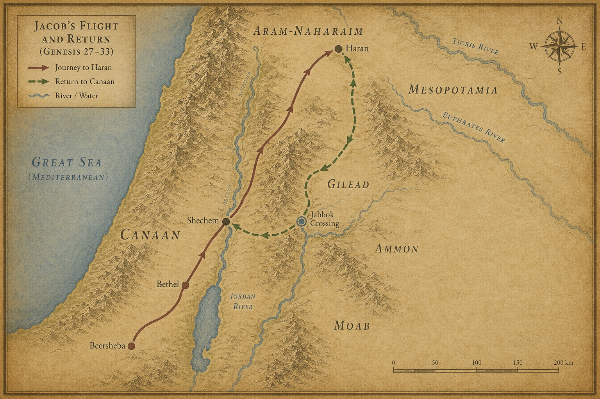
지도 9. 창세기 27~33장 배경: 야곱의 도주와 귀환(얍복강 포함).
1 야곱이 길을 가는데 하나님의 천사들이 그를 만났다.
2 야곱이 그들을 보고 말했다.
“이는 하나님의 군대로다.”
그 곳 이름을 마하나임(Mahanaim, 현재 요단강 동편)이라 하였다. ’두 진영’이라는 뜻이었다.
3 야곱이 앞서 에서에게 사자들을 보냈다. 에서는 세일(Seir, 현재 요르단 남부 에돔 산지) 지방, 에돔 들에 있었다.
4 사자들에게 명령했다.
“너희는 내 주 에서에게 이렇게 말하여라. ‘주의 종 야곱이 이같이 말합니다. 내가 라반과 함께 머물며 지금까지 있었습니다.’”
5 > “‘내게 소, 나귀, 양 떼, 남종, 여종이 있으므로 사람을 보내어 내 주께 알리고 내 주께 은혜 받기를 원합니다.’”
6 사자들이 야곱에게 돌아와 말했다.
“주인의 형 에서에게 이르렀더니, 그가 400인을 거느리고 주인을 만나러 오고 있습니다.”
7 야곱이 크게 두려워하고 답답해졌다. 함께한 사람들과 양과 소와 낙타를 두 떼로 나누어,
8 생각했다.
에서가 한 떼에 이르러 치면, 남은 한 떼는 도망하리라.
9 야곱이 기도했다.
“내 조상 아브라함의 하나님, 내 아버지 이삭의 하나님이여. 여호와여, 주께서 전에 내게 말씀하시기를 ‘네 고향, 네 친족에게로 돌아가라. 내가 너를 잘 되게 하리라’ 하셨나이다.”
10 > “나는 주께서 주의 종에게 베푸신 모든 은총과 모든 진실하심을 받기에 감당하지 못할 자이오나, 내가 이 요단강을 지팡이 하나만 가지고 건넜더니 이제는 두 떼를 이루었나이다.”
11 > “내 형 에서의 손에서 나를 건져내소서. 내가 그를 두려워하는 것은, 그가 와서 어미와 자식을 아울러 칠까 두려워함이니이다.”
12 > “주께서 말씀하시기를 ‘내가 반드시 너를 잘 되게 하여 네 자손을 바다의 모래같이 셀 수 없이 많게 하리라’ 하셨나이다.”
13 야곱이 그 날 밤 거기서 묵었다. 소유 중에서 형 에서에게 줄 예물을 골랐다.
14 암염소 200, 숫염소 20, 암양 200, 숫양 20,
15 젖 나는 낙타 30과 새끼, 암소 40, 황소 10, 암나귀 20, 어린 나귀 10.
16 그것들을 종들의 손에 나누어 맡기며 각 떼를 떼어 가게 하고, 그들에게 말했다.
“나보다 먼저 건너가되, 각 떼 사이에 간격을 두어라.”
17 앞서 가는 떼의 종에게 명령했다.
“내 형 에서가 너를 만나 ‘너는 누구의 것이냐, 어디로 가느냐, 이것은 누구의 것이냐’ 하거든,”
18 > “‘주의 종 야곱의 것이요, 내 주 에서에게 드리는 예물이오며, 야곱도 우리 뒤에 오나이다’ 하여라.”
19 둘째, 셋째도, 모든 떼를 따르는 자에게도 같이 말했다.
“에서를 만나거든 이렇게 말하여라.”
20 > “’주의 종 야곱이 우리 뒤에 오나이다’라고도 말하여라.”
야곱은 속으로 생각했다.
내가 앞서 보내는 예물로 형의 감정을 풀어놓은 후에 대면하자. 혹시 나를 용납하리라.
21 예물이 먼저 건너가고, 야곱은 그날 밤 진 중에서 묵었다.
22 야곱이 그 밤에 일어났다. 두 아내와 두 여종과 11명의 아들을 데리고 얍복(Jabbok, 현재 요르단 자르카강) 나루를 건넜다.
23 그들을 건너가게 하고, 소유도 건너가게 했다.
24 야곱은 홀로 남았다.
어떤 사람이 날이 새도록 야곱과 씨름했다.
25 그가 야곱을 이기지 못하는 것을 보았다. 야곱의 넓적다리 관절을 쳤다. 씨름하는 동안 야곱의 넓적다리 관절이 어긋났다.
26 그가 말했다.
“날이 새려 하니 나로 가게 하라.”
야곱이 말했다.
“당신이 내게 축복하지 않으면 가게 하지 않겠습니다.”
27 그가 야곱에게 말했다.
“네 이름이 무엇이냐?”
“야곱입니다.”
28 그가 말했다.
“네 이름을 다시는 야곱이라 부를 것이 아니요 이스라엘이라 부를 것이니, 이는 네가 하나님과 및 사람들과 겨루어 이겼음이니라.”
이스라엘(Israel). ‘하나님과 겨루어 이긴 자.’ 한 민족의 이름이 이 밤 이 강가에서 태어났다.
29 야곱이 청했다.
“당신의 이름을 알려 주소서.”
그가 말했다.
“어찌하여 내 이름을 묻느냐?”
거기서 야곱에게 축복했다.
30 야곱이 그 곳 이름을 브니엘(Peniel, 현재 얍복강 근처 요르단)이라 하였다.
“내가 하나님과 대면하여 보았으나 내 생명이 보전되었다.”
31 야곱이 브니엘을 지날 때 해가 돋았다. 야곱이 그 넓적다리 관절로 말미암아 절었다.
32 그러므로 이스라엘 자손들은 지금도 넓적다리 관절의 큰 힘줄을 먹지 않는다. 야곱의 넓적다리 관절 큰 힘줄을 그분이 쳤기 때문이다.
절뚝이며 걸어갔다. 이스라엘이라는 이름을 가지고, 넓적다리 관절에 평생의 흔적을 새기고.
다음 장 — 400인을 이끌고 달려오는 에서. 야곱은 일곱 번 땅에 엎드린다. 그리고 형이 달려와 목을 끌어안는다. 둘이 운다.
1 야곱이 고개를 들어 보니 에서가 400인을 거느리고 오고 있었다.
어젯밤 얍복강에서 씨름한 자리가 아직 욱신거렸다. 넓적다리 관절이 어긋난 채로, 야곱은 절뚝이며 서 있었다. 이스라엘이라는 새 이름을 받았지만, 몸은 아직 낡은 야곱의 것이었다.
야곱은 자녀들을 레아와 라헬과 두 여종에게 나누어 세웠다.
2 여종들과 그들의 자녀들을 맨 앞에, 레아와 그의 자녀들을 다음에, 라헬과 요셉을 맨 뒤에 두었다.
순서가 말해준다. 야곱이 가장 아끼는 자들을 가장 안전한 자리에 놓았다. 20년이 지나도 변하지 않은 것이 있었다.
3 야곱 자신은 그들보다 앞에서 나아가며 형에게 가까이 이를 때까지 일곱 번 땅에 몸을 굽혔다.
일곱 번이다. 고대 근동의 외교 예법상 최고의 복종을 나타내는 몸짓이었다. 한때 형의 복을 훔쳤던 자가, 이제 형 앞에 일곱 번 엎드렸다.
4 에서가 달려와서 야곱을 맞이했다. 목을 안고 입을 맞추었다.
둘이 울었다.
400인이 칼을 들고 온 것이 아니었다. 에서는 복수를 하러 온 것이 아니었다. 20년의 시간이 그 분노를 어딘가에 내려놓았다. 아니면 하나님이 그 마음을 여셨거나. 야곱이 밤새 씨름하며 얻어낸 것이 이것이었는지도 몰랐다.
5 에서가 고개를 들어 여인들과 아이들을 보고 물었다.
“너와 함께한 이들은 누구냐?”
야곱이 말했다.
“하나님이 주의 종에게 은혜로 주신 자녀들입니다.”
6 여종들이 자기 자녀들과 함께 나아와 절했다.
7 레아도 자기 자녀들과 함께 나아와 절했다. 그 후 요셉과 라헬이 나아와 절했다.
8 에서가 물었다.
“내가 만난 이 모든 떼는 무슨 일이냐?”
야곱이 말했다.
“내 주께 은혜를 받으려 함이니이다.”
9 에서가 말했다.
“내 아우야, 나는 이미 충분하다. 네 것은 네게 두라.”
10 야곱이 말했다.
“그렇지 않습니다. 형이 내게 은혜를 베풀거든 이 예물을 내 손에서 받으소서. 형의 얼굴을 뵈옵는 것이 하나님의 얼굴을 보는 것 같습니다. 형이 나를 기뻐하심이니이다.”
11 > “하나님이 내게 은혜를 베푸셨고, 내 소유도 충분하오니 형은 내가 드리는 예물을 받으소서.”
야곱이 강권하니 에서가 받았다.
12 에서가 말했다.
“우리가 떠나자. 내가 앞장서 가리라.”
13 야곱이 말했다.
“내 주도 아시거니와, 아이들이 연약하고, 내 짐승들이 젖 먹이는 것들이 있습니다. 하루만 너무 몰면 양 떼가 다 죽을 것입니다.”
14 > “청하건대 내 주는 주의 종보다 앞서 가소서. 나는 앞에 가는 가축의 속도와 아이들의 속도에 맞추어 천천히 가다가 세일(Seir, 현재 요르단 남부 에돔 산지)에 이르러 내 주께 나아가겠습니다.”
15 에서가 말했다.
“내 사람들 중 몇을 너와 함께 있게 하겠다.”
야곱이 말했다.
“어찌하여 그리하십니까. 내 주께 은혜를 받게 되면 족합니다.”
야곱은 세일로 가지 않았다. 에서와 함께 가는 대신 다른 방향을 택했다. 형제의 포옹은 진심이었지만, 야곱은 여전히 거리를 유지했다. 외교였다.
16 에서는 그날 세일로 돌아갔다.
17 야곱은 숙곳(Succoth, 현재 요단강 동편 얍복 근처)으로 갔다. 거기서 자기를 위해 집을 짓고, 짐승을 위해 우릿간을 만들었다. 그래서 그 곳 이름을 숙곳이라 했다.
에서에게 ’세일에서 만나겠다’고 했지만 야곱은 반대 방향으로 발을 돌렸다. 거짓말이었는지, 상황을 보며 마음이 바뀐 것인지, 본문은 말하지 않는다. 다만 야곱은 언제나 거리를 두는 방식으로 살아남았다.
18 야곱은 밧단아람에서 나와 가나안 땅 세겜(Shechem, 현재 팔레스타인 나블루스) 성에 평안히 이르러, 성 앞에 천막을 쳤다.
이것이 20년 만의 귀환이었다. 지팡이 하나 들고 요단강을 건넜던 자가, 이제 두 가족과 두 떼의 가축과 수많은 종들을 이끌고 돌아왔다. 하나님이 약속하신 대로였다.
19 천막을 친 밭을 세겜의 아버지 하몰의 아들들에게 100크시타를 주고 샀다.
처음으로 가나안 땅에 야곱의 이름으로 등록된 땅이었다. 작은 밭 하나였지만, 족장들이 약속의 땅 한 귀퉁이를 발로 밟고 돈을 내고 산다는 것 — 그 행위 자체가 믿음의 언어였다.
20 거기에 제단을 쌓고 그 이름을 엘엘로헤이스라엘이라 하였다.
’이스라엘의 하나님 하나님’이라는 뜻이다. 얍복강에서 새 이름을 받은 자가, 가나안 땅에 처음 발을 내딛으며 그 이름으로 제단을 쌓았다. 벧엘에서 서원했던 것의 첫 이행이었다.
다음 장 — 야곱의 딸 디나가 성 안 여자들을 보러 나갔다가 돌아오지 못한다. 그리고 두 형제가 칼을 든다.
1 레아가 야곱에게 낳은 딸 디나가 그 땅의 딸들을 보러 나갔다.
짧은 한 문장이다. 그리고 그다음 문장부터 모든 것이 무너진다.
2 그 땅의 추장 히위 부족 하몰의 아들 세겜이 그녀를 보았다. 그녀를 데려다가 강제로 욕보였다.
3 그런데 그의 마음이 야곱의 딸 디나에게 깊이 끌렸다. 그 소녀를 사랑하여 다정하게 말을 건넸다.
4 세겜이 그의 아버지 하몰에게 말했다.
“이 소녀를 내 아내로 삼게 해주세요.”
5 야곱이 딸 디나가 욕을 당했다는 말을 들었다. 아들들은 들에서 짐승과 함께 있었다. 야곱은 그들이 돌아올 때까지 잠잠히 있었다.
6 세겜의 아버지 하몰이 야곱에게 이야기하러 나왔다.
7 야곱의 아들들이 이 소식을 듣고 들에서 돌아왔다. 그들은 근심하고 아주 화가 났다. 세겜이 야곱의 딸과 강제로 관계를 맺어 이스라엘에게 부끄러운 일을 저질렀기 때문이었다. 있어서는 안 될 일이었다.
8 하몰이 그들에게 말했다.
“내 아들 세겜이 마음으로 너희 딸을 무척 원하고 있다. 부탁하건대 그를 그의 아내로 주어라.”
9 > “너희는 우리와 혼인해라. 너희 딸을 우리에게 주고 우리 딸을 너희가 맞이해라.”
10 > “너희는 우리와 함께 살아라. 땅이 너희 앞에 있으니 여기서 거래하며 재산을 모아라.”
11 세겜도 디나의 아버지와 오빠들에게 말했다.
“나를 너희에게 은혜롭게 여겨다오. 너희가 내게 말하는 것은 무엇이든 주겠다.”
12 > “아무리 많은 예물과 혼수를 요구해도 너희가 말하는 대로 주겠다. 그 소녀를 내 아내로 주기만 해다오.”
13 야곱의 아들들이 세겜과 그 아버지 하몰에게 속임수로 대답했다. 세겜이 그들의 누이 디나를 욕보였기 때문이었다.
14 그들이 하몰과 세겜에게 말했다.
“우리는 그렇게 할 수 없소. 할례 받지 않은 사람에게 우리 누이를 줄 수 없소. 그것은 우리에게 수치가 되는 일이오.”
15 > “오직 이 한 가지 조건이면 허락하겠소. 너희 남자들이 모두 할례를 받아 우리와 같이 되면,”
16 > “우리 딸을 너희에게 주고 너희 딸을 우리가 맞이하고 함께 살아 한 민족이 되겠소.”
17 > “그러나 너희가 할례를 받지 않겠다면, 우리는 우리 딸을 데리고 가겠소.”
18 그들의 말이 하몰과 하몰의 아들 세겜의 마음에 들었다.
19 그 청년이 그 일을 지체하지 않았다. 그가 야곱의 딸을 사랑했기 때문이었다. 그는 자기 아버지 집에서 가장 존귀한 자였다.
20 하몰과 그의 아들 세겜이 성문에 나가 마을 사람들에게 말했다.
21 > “이 사람들은 우리와 사이좋게 지내니, 이 땅에 살며 거래하게 하자. 땅이 넓어 그들을 넉넉히 받아들일 수 있지 않으냐. 우리가 그들의 딸들을 아내로 맞이하고 우리 딸들을 그들에게 주자.”
22 > “그런데 우리 중의 모든 남자가 그들이 할례 받음같이 할례를 받아야 그들이 우리와 함께 살며 한 민족이 되기를 허락한다 하였소.”
23 > “그들의 가축과 재물과 모든 짐승이 우리의 것이 되지 않겠소? 다만 그들의 말을 들으면 그들이 우리와 함께 살 것이오.”
24 성문으로 드나드는 모든 자가 하몰과 그의 아들 세겜의 말을 들었다. 마을의 남자들이 모두 할례를 받았다.
25 제삼일이었다. 아직 아픔이 한창일 때.
시므온과 레위, 디나의 두 오빠가 각자 칼을 들고 거리낌 없이 마을로 들어가 모든 남자를 죽였다.
26 하몰과 그의 아들 세겜을 칼로 죽이고, 세겜의 집에서 디나를 데려나왔다.
27 야곱의 다른 아들들이 그 시체들이 있는 곳으로 가서 마을을 약탈했다. 그들의 누이가 욕을 당했기 때문이었다.
28 그들의 양과 소와 나귀와 마을에 있는 것, 들에 있는 것을 빼앗고,
29 그들의 재물을 모두 약탈하며, 그들의 자녀와 아내들을 사로잡고, 집 안에 있는 것을 다 빼앗았다.
30 야곱이 시므온과 레위에게 말했다.
“너희가 나를 곤경에 빠뜨렸다. 나로 하여금 이 땅의 주민, 가나안 족속과 브리스 족속에게 미움을 받게 만들었다. 우리는 수가 적은데, 그들이 모여 나를 치면 나와 내 집이 멸망할 것이다.”
31 시므온과 레위가 대답했다.
“그가 우리 누이를 창녀처럼 대해도 괜찮다는 말입니까?”
아무도 틀리지 않았다. 야곱도 옳았고, 두 아들도 옳았다. 그러나 그 옳음들은 같은 방향을 가리키지 않았다. 그것이 이 가문의 오래된 상처였다.
다음 장 — 하나님이 야곱에게 말씀하신다. “벧엘로 올라가라.” 야곱은 온 집안의 이방 신상들을 땅에 묻고 다시 떠난다.
1 하나님이 야곱에게 말씀하셨다.
“일어나 벧엘(Bethel, 예루살렘 북쪽 19km 베이틴)로 올라가 거기 살아라. 네가 형 에서의 낯을 피해 도망하던 그 날, 네게 나타났던 하나님께 거기서 제단을 쌓아라.”
야곱은 오랫동안 미뤄왔던 약속 앞에 섰다. 세겜(Shechem, 팔레스타인 나블루스)에서 피가 흘렀고, 집안 전체가 흔들렸다. 이제 더 지체할 수 없었다.
2 야곱이 집안사람들과 함께한 모든 자에게 말했다.
“너희 중에 있는 이방 신상들을 버려라. 몸을 정결하게 하고 옷을 갈아입어라.”
3 “우리가 일어나 벧엘로 올라가자. 내가 어려운 날에 나에게 응답하시고 내가 가는 길에서 나와 함께하신 하나님께 거기서 제단을 쌓겠다.”
드라빔이 나왔다. 귀고리들이 나왔다. 사람들이 손에 쥐고 있던 것들, 몸에 걸고 있던 것들이 하나씩 모였다.
4 집안사람들이 자기 손에 있는 모든 이방 신상과 귀고리들을 야곱에게 주었다. 야곱은 그것들을 세겜 근처 상수리나무 아래에 묻었다. 흙이 덮이고, 그것으로 끝이었다.
5 길을 떠났다. 그런데 이상한 일이 일어났다. 주변 마을들이 야곱 일행을 추격하지 않았다. 세겜 사건 이후 얼마나 많은 눈이 이들을 노려보고 있었겠는가. 그러나 하나님이 두려움을 그 마을들 위에 내리셨다. 어느 문도 열리지 않았고, 어느 말굽 소리도 그들을 따라오지 않았다.
6 야곱과 그의 일행이 가나안 땅 루스, 곧 벧엘에 이르렀다.
7 야곱이 그곳에 제단을 쌓고 이름을 엘벧엘(벧엘의 하나님)이라 불렀다. 하나님이 형에게서 도망하던 그에게 나타나셨던 바로 그 자리였다. 이십 년 전의 돌 베개, 기름 부은 기둥, 그 모든 기억이 여기 있었다.
8 그때 리브가의 유모 드보라가 죽었다. 벧엘 아래 상수리나무 아래에 묻혔다. 그 나무를 알론바굿(곡하는 상수리)이라 불렀다. 야곱의 어머니 리브가를 함께 키운 늙은 여인의 죽음이었다. 어떤 슬픔은 조용히 지나간다.
9 야곱이 밧단아람에서 돌아온 후, 하나님이 다시 그에게 나타나 복을 주셨다.
10 하나님이 말씀하셨다.
“네 이름이 야곱이지만, 이제 다시는 야곱이라 부르지 않겠다. 이스라엘이 네 이름이다.”
이미 얍복 나루에서 한 번 받은 이름이었다. 그러나 하나님은 그것을 다시 한번, 소리 내어, 공식적으로 새겨주셨다. 이름이란 한 번 듣는다고 사람 안에 뿌리내리는 게 아닌 모양이다.
11 “나는 전능한 하나님이다. 많은 자녀를 낳고 번성해라. 큰 민족, 여러 민족이 네게서 나올 것이고, 왕들이 네 허리에서 나올 것이다.”
12 “내가 아브라함과 이삭에게 준 땅을 네게 주고, 네 후손에게도 주겠다.”
13 하나님이 그에게 말씀을 마치고 올라가셨다.
14 야곱은 하나님이 자기와 말씀하시던 곳에 돌기둥을 세우고, 그 위에 전제를 붓고 기름을 부었다.
15 야곱이 그곳 이름을 벧엘이라 불렀다.
16 벧엘을 떠났다. 에브라다(Ephrath, 베들레헴)까지 아직 얼마가 남은 곳이었다. 몇 시간, 혹은 반나절의 거리. 그 짧은 길에서 일이 터졌다.
17 라헬이 산통을 시작했다. 힘든 해산이었다. 산파가 말했다.
“두려워하지 마세요. 이번에도 아들입니다.”
18 라헬의 숨이 꺼져가는 중에, 그녀는 아이의 이름을 베노니(슬픔의 아들)라 불렀다. 그러나 야곱은 그 이름을 받아들이지 않았다. 야곱이 그를 베냐민(오른손의 아들)이라 불렀다.
19 라헬이 죽었다. 베들레헴(Bethlehem, 예루살렘 남쪽)으로 가는 길에 묻혔다.
20 야곱이 그 무덤 위에 기둥을 세웠다. 라헬의 무덤 기둥은 오늘까지 있다.
그 돌기둥 하나가 수천 년을 서 있었다. 야곱은 계속 걸어야 했다. 아이를 안고.
21 이스라엘이 다시 길을 떠나 에델 망대 너머에 천막을 쳤다.
22 이스라엘이 그 땅에 머물 때였다. 첫째 아들 르우벤이 아버지의 첩 빌하와 동침했다. 이스라엘이 그 소식을 들었다.
본문은 여기서 말을 자른다. 야곱의 반응을 쓰지 않는다. 단지 “들었다”고만 한다. 그러나 이 한 줄은 훗날 장자권 박탈의 씨앗이 된다.
23 야곱의 아들은 이러하다. 레아의 소생은 야곱의 첫째 아들 르우벤, 시므온, 레위, 유다, 잇사갈, 스불론이요,
24 라헬의 소생은 요셉과 베냐민이요,
25 라헬의 여종 빌하의 소생은 단과 납달리요,
26 레아의 여종 실바의 소생은 갓과 아셀이었다. 이들이 야곱의 아들들로, 밧단아람에서 낳은 자들이다.
27 야곱이 마므레의 기럇아르바, 곧 헤브론(Hebron, 팔레스타인 헤브론)에 이르렀다. 아브라함과 이삭이 살던 곳이었다.
28 이삭의 나이가 백팔십 세였다.
29 이삭이 숨을 거두어 죽었다. 나이가 많고 늙도록 살다가 그의 조상들에게로 돌아갔다. 아들 에서와 야곱이 그를 장사하였다.
두 형제가 수십 년 만에 다시 같은 자리에 섰다. 아버지의 무덤 앞에서.
다음 장 — 에서의 이야기가 펼쳐진다. 야곱이 이스라엘의 조상이 되어가는 동안, 에서는 이미 한 나라의 왕조를 세우고 있었다.
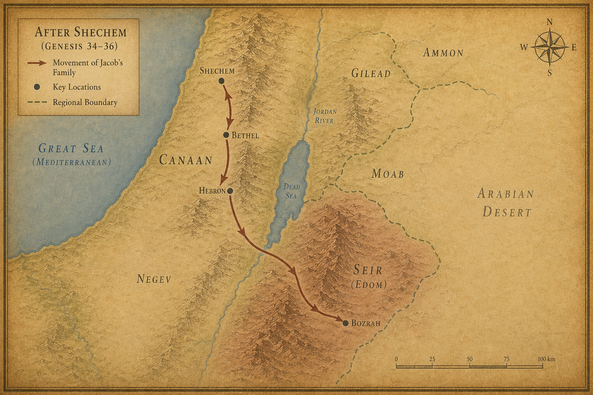
지도 10. 창세기 34~36장 배경: 세겜 이후 이동과 에돔(세일) 권역.
1 에서, 곧 에돔의 계보는 이러하다.
2 에서는 가나안 여자들에게서 아내를 맞이하였다. 헷 족속 엘론의 딸 아다, 히위 족속 시브온의 딸인 아나의 딸 오홀리바마,
3 그리고 이스마엘의 딸이요 느바욧의 누이인 바스맛이다.
4 아다는 에서에게 엘리바스를 낳고, 바스맛은 르우엘을 낳았으며,
5 오홀리바마는 여우스와 얄람과 고라를 낳았다. 이들이 가나안 땅에서 에서에게서 태어난 아들들이다.
6 에서는 자기 아내들과 자녀들과 집의 모든 사람과 양 떼와 소 떼와 모든 짐승을 이끌고 가나안 땅을 떠났다. 형제 야곱을 피하여 다른 곳으로 갔다.
7 두 사람의 소유가 너무 많아서 함께 살 수 없었기 때문이다. 그들이 사는 땅이 그들의 가축 때문에 감당하지 못하였다.
8 에서는 세일 산(Seir, 현대 요르단 남부) 에 살았다. 에서가 곧 에돔이다.
9 세일 산에 있는 에돔 부족의 조상 에서의 계보는 이러하다.
10 에서의 아들들의 이름은 이러하다. 에서의 아내 아다의 아들 엘리바스, 에서의 아내 바스맛의 아들 르우엘이요,
11 엘리바스의 아들들은 데만, 오말, 스보, 가담, 그나스요,
12 에서의 아들 엘리바스의 첩 딤나는 아말렉을 낳았다. 이들이 에서의 아내 아다의 자손이다.
13 르우엘의 아들들은 나핫, 세라, 삼마, 밋사이다. 이들이 에서의 아내 바스맛의 자손이다.
14 시브온의 손녀요 아나의 딸인 에서의 아내 오홀리바마의 아들들은 여우스, 얄람, 고라이다.
15 에서의 자손 중 족장들은 이러하다. 에서의 첫째 아들 엘리바스의 자손에서 나온 족장들은 데만 족장, 오말 족장, 스보 족장, 그나스 족장,
16 고라 족장, 가담 족장, 아말렉 족장이니, 이들이 에돔 땅에 있는 엘리바스의 족장들이요 아다의 자손이다.
17 에서의 아들 르우엘의 자손에서 나온 족장들은 나핫 족장, 세라 족장, 삼마 족장, 밋사 족장이니, 이들이 에돔 땅에 있는 르우엘의 족장들이요 에서의 아내 바스맛의 자손이다.
18 에서의 아내 오홀리바마의 자손에서 나온 족장들은 여우스 족장, 얄람 족장, 고라 족장이니, 이들이 아나의 딸이요 에서의 아내인 오홀리바마로 말미암아 나온 족장들이다.
19 이들이 에서의 아들들이요 그들의 족장들이니, 에서는 에돔이다.
20 그 땅의 원주민 호리 부족 세일의 아들들은 로단, 소발, 시브온, 아나,
21 디손, 에셀, 디산이니, 이들이 에돔 땅의 세일의 자손인 호리 부족의 족장들이다.
22 로단의 자녀는 호리, 헤맘이요, 로단의 누이는 딤나이며,
23 소발의 자녀는 알완, 마나핫, 에발, 스보, 오남이요,
24 시브온의 자녀는 아야, 아나이다. 이 아나는 광야에서 그 아버지 시브온의 나귀를 칠 때에 온천을 발견한 자다.
25 아나의 자녀는 디손이요, 아나의 딸은 오홀리바마이며,
26 디손의 자녀는 헴단, 에스반, 이드란, 그란이요,
27 에셀의 자녀는 빌한, 사아완, 아간이요,
28 디산의 자녀는 우스, 아란이다.
29 호리 부족의 족장들은 로단 족장, 소발 족장, 시브온 족장, 아나 족장,
30 디손 족장, 에셀 족장, 디산 족장이니, 이들이 세일 땅에 있는 부족대로 된 호리 부족의 족장들이다.
31 이스라엘 자손을 다스리는 왕이 있기 전에 에돔 땅을 다스린 왕들은 이러하다.
이 한 줄이 묘한 여운을 남긴다. 이스라엘은 아직 가난한 천막 안에 있는데, 에돔은 이미 왕조를 이어가고 있었다.
32 브올의 아들 벨라가 에돔의 왕이 되었으니 그 도시 이름은 딘하바이며,
33 벨라가 죽고 보스라 사람 세라의 아들 요밥이 그를 대신하여 왕이 되었으며,
34 요밥이 죽고 데만 사람의 땅에서 후삼이 그를 대신하여 왕이 되었으며,
35 후삼이 죽고 브닷의 아들 하닷이 그를 대신하여 왕이 되었으니, 그는 모압 들에서 미디안 부족을 쳐서 이긴 자요 그 도시 이름은 아윗이며,
36 하닷이 죽고 마스레가에서 삼라가 그를 대신하여 왕이 되었으며,
37 삼라가 죽고 유브라데 강가의 르호봇에서 사울이 그를 대신하여 왕이 되었으며,
38 사울이 죽고 악볼의 아들 바알하난이 그를 대신하여 왕이 되었으며,
39 악볼의 아들 바알하난이 죽고 하달이 그를 대신하여 왕이 되었으니, 그 도시는 바우이며 그 아내의 이름은 므헤다벨이라. 마드렛의 딸이요 메사합의 손녀였다.
40 에서에게서 나온 족장들의 이름은 그 종족과 거처와 이름대로 이러하다. 딤나 족장, 알와 족장, 여뎃 족장,
41 오홀리바마 족장, 엘라 족장, 비논 족장,
42 그나스 족장, 데만 족장, 밉살 족장,
43 막디엘 족장, 이람 족장이니, 이들이 그 거처와 소유지로 말미암아 에돔의 족장들이요, 에돔 부족의 조상은 에서였다.
야곱은 아직 헤브론 들에 천막을 치고 있다. 에서는 이미 왕들의 조상이 되어 있다. 형제의 두 길이 이렇게 갈라졌다.
다음 장 — 야곱이 가장 사랑하는 아들 요셉이 형들의 질투를 사고, 색동옷이 피에 젖어 돌아온다.
1 야곱은 아버지가 나그네로 살던 땅 가나안에 살았다.
2 야곱의 족보는 이러하다. 요셉이 열일곱 살 때였다. 그는 형들과 함께 양 떼를 치며 아버지의 첩들인 빌하와 실바의 아들들과 함께 다녔는데, 그들이 잘못하는 것을 보고 아버지에게 알렸다.
형제들 사이에서 요셉은 아버지의 눈이었다. 그 눈이 얼마나 곱게 보였을지는 짐작하기 어렵지 않다.
3 이스라엘은 여러 아들들보다 요셉을 더 사랑하였다. 노년에 낳은 아들이었기 때문이다. 그래서 알록달록한 색동옷을 지어 입혔다.
4 형들은 아버지가 요셉을 더 사랑하는 것을 보고 요셉을 미워하여 그에게 편안하게 말하지 못하였다.
인사도, 안부도 없었다. 같은 밥상에 앉아도 통하지 않는 말이 있다.
5 요셉이 꿈을 꾸었다. 형들에게 말하였더니 그들이 더 미워하게 되었다.
6 요셉이 말했다.
“내 꿈 이야기를 들어보세요.”
7 “우리가 밭에서 곡식 단을 묶고 있는데, 내 단은 일어서고 형들의 단이 내 단 주위로 둘러서서 내 단에게 절을 하더라고요.”
8 형들이 말했다.
“네가 우리의 왕이 되겠다는 거냐? 우리를 다스리겠다는 거냐?”
그들은 그의 꿈과 그의 말 때문에 더욱 미워하였다.
9 요셉이 또 꿈을 꾸고 형들에게 말했다.
“또 꿈을 꿨어요. 이번에는 해와 달과 열한 별이 내게 절을 하더라고요.”
10 아버지와 형들에게 말하였더니 아버지가 꾸짖었다.
“그 꿈이 무슨 뜻이냐? 나와 네 어머니와 네 형들이 다 네게 절을 해야 한다는 거냐?”
11 형들은 요셉을 시기하였다. 그러나 아버지는 그 말을 마음에 간직해두었다.
야곱은 꾸짖었지만 잊지 않았다. 꿈이란 그런 것이다. 무시하고 싶어도 마음 어딘가에 남는다.
12 형들이 세겜(Shechem, 팔레스타인 나블루스) 근처에서 아버지의 양 떼를 먹이고 있었다.
13 이스라엘이 요셉에게 말했다.
“형들이 세겜에서 양 떼를 치고 있는데, 네가 가서 형들이 잘 있는지 양 떼가 잘 있는지 보고 돌아와 내게 알려라.”
“예, 가겠습니다.”
14 야곱이 그를 헤브론 골짜기에서 보내니 요셉이 세겜으로 갔다.
15 한 사람이 요셉이 들에서 헤매는 것을 보고 물었다.
“누구를 찾느냐?”
16 “형들을 찾고 있어요. 어디에서 양을 치는지 알려주세요.”
17 “여기서 떠났더라. 도단(Dothan, 팔레스타인 서안지구 북부)으로 가자고 하던 것을 들었다.”
요셉이 형들을 따라가 도단 들에서 만났다.
18 형들이 멀리서 요셉이 오는 것을 보았다. 그가 가까이 오기 전에 형들이 그를 죽이려고 모의하였다.
19 서로 말하였다.
“꿈꾸는 자가 온다.”
20 “자, 죽여서 구덩이에 던지고 악한 짐승이 잡아먹었다 하면 그의 꿈이 어찌 되는지 우리가 볼 것이다.”
21 르우벤이 들었다. 요셉을 형들의 손에서 구하려 하여 말하였다.
“우리가 생명을 해치지는 말자.”
22 “피를 흘리지 말고 그냥 광야의 이 구덩이에 던지자. 손을 대지는 말자.”
르우벤의 속셈은 따로 있었다. 나중에 구덩이에서 꺼내어 아버지에게 돌려보내려 한 것이다.
23 요셉이 형들에게 이르렀다. 형들이 요셉의 옷, 그 색동옷을 벗기고
24 그를 구덩이에 던졌다. 구덩이에는 물이 없었고 비어 있었다.
25 형들이 앉아서 음식을 먹다가 고개를 들어 보니, 길르앗에서 온 이스마엘 상인들이 낙타에 향품과 유향과 몰약을 싣고 이집트(애굽, Egypt)로 내려가고 있었다.
26 유다가 형제들에게 말했다.
“우리가 동생을 죽이고 그 피를 숨긴다 한들 우리에게 무슨 이득이 있겠느냐?”
27 “그를 이스마엘 사람들에게 팔자. 우리 손으로 해치지 말자. 그도 우리의 동생, 우리의 육체다.”
형제들이 그 말을 들었다.
28 미디안 상인들이 지나갈 때 형들이 요셉을 구덩이에서 끌어올려 은 이십 세겔에 이스마엘 사람들에게 팔았다. 상인들은 요셉을 이집트로 데려갔다.
29 르우벤이 구덩이로 돌아왔다. 보니 요셉이 없었다. 옷을 찢었다.
30 형제들에게 돌아가 말했다.
“아이가 없어졌다. 나는 이제 어디로 가야 하느냐?”
31 형들이 숫염소 한 마리를 잡아 요셉의 옷을 그 피에 적셨다.
32 그 색동옷을 아버지에게 가지고 가서 말했다.
“이것을 찾았습니다. 이게 아버지 아들의 옷인지 아닌지 보십시오.”
33 야곱이 그것을 알아보았다.
“내 아들의 옷이다. 악한 짐승이 잡아먹었구나. 요셉이 찢겼구나.”
34 야곱이 자기 옷을 찢고 굵은 베로 허리를 묶고 오랫동안 그 아들을 위하여 슬퍼하였다.
35 아들딸들이 다 와서 그를 위로하였으나 야곱이 위로를 받지 않았다.
“내가 슬퍼하며 스올로 내려가 내 아들에게로 가겠다.”
아버지가 그를 위하여 울었다. 옷 한 벌을 온 집안이 둘러싸고 울었다.
그 옷이 어떻게 피에 젖었는지 아는 사람들은 음식을 먹으며 앉아 있었다.
36 미디안 사람들은 요셉을 이집트에서 파라오(바로)의 신하 경비대장 보디발에게 팔았다.
학자들은 요셉이 이집트에 팔려간 시기를 대략 BC 1900년~1700년 사이로 본다. 두 가지 유력한 가설이 있다. 하나는 중왕국 12왕조(센와세레트 3세 또는 아메넴헤트 3세) 시기, 다른 하나는 힉소스 시대(15왕조, 셈족 계열의 외래 왕조)다. 후자는 외국인이었던 요셉이 어떻게 이집트의 2인자까지 올랐는지를 잘 설명해 준다.
다음 장 — 요셉 이야기가 잠시 멈추고, 유다의 이야기가 끼어든다. 며느리 다말과 시아버지 유다의 예상치 못한 만남이 기다린다.
1 그 무렵이었다. 유다가 형제들로부터 내려가 아둘람 사람 히라에게로 갔다.
“내려갔다”는 말은 단순한 방향이 아니다. 형제들의 무리에서 빠져나갔다는 뜻이다. 요셉을 판 그 손으로 유다는 새 삶을 시작하려 했다.
2 유다가 거기서 가나안 사람 수아의 딸을 보고 그녀와 결혼하여 동침하였다.
3 그녀가 아들을 낳으니 이름을 엘이라 하였고,
4 또 잉태하여 아들을 낳으니 이름을 오난이라 하였으며,
5 또 아들을 낳으니 이름을 셀라라 하였다. 셀라를 낳을 때 유다는 거십에 있었다.
6 유다가 첫째 아들 엘을 위하여 다말이라는 여자를 아내로 맞이하였다.
7 유다의 첫째 아들 엘이 여호와 보시기에 악하였다. 여호와께서 그를 죽이셨다.
설명이 없다. 이유도 없다. 그저 “악하였다”는 한 줄, 그리고 죽음.
8 유다가 오난에게 말하였다.
“네 형수에게 들어가서 형수의 의무를 다하여 형의 후사를 이어라.”
이것은 수혼(嫂婚) 관습이다. 형이 자손 없이 죽으면 동생이 형수와 결혼해 태어난 아이를 형의 자손으로 잇는 제도였다.
9 오난은 그 자손이 자기 것이 되지 않을 것을 알았다. 형수에게 들어갔지만 형에게 자손이 생기지 않도록 그 씨를 땅에 흘렸다.
10 그가 한 일이 여호와 보시기에 악하였다. 여호와께서 그도 죽이셨다.
두 아들을 잃었다. 같은 여자 옆에서. 유다의 눈에 다말은 어떻게 보였겠는가.
11 유다가 며느리 다말에게 말하였다.
“셀라가 자랄 때까지 네 아버지 집에 가서 과부로 지내어라.”
속으로는 달랐다. ’셀라도 그의 형들처럼 죽을까 두렵다’고 생각하였다.
다말은 돌아가 아버지 집에서 기다렸다. 세월이 흘렀다. 셀라는 자랐다. 그러나 유다는 다말에게 셀라를 주지 않았다.
12 세월이 지나 유다의 아내 수아의 딸이 죽었다. 유다가 슬픔에서 벗어난 뒤, 친구 아둘람 사람 히라와 함께 딤나(Timnah, 유다 지역)에 자기 양 털 깎는 자들에게로 올라갔다.
13 누군가 다말에게 알렸다.
“네 시아버지가 딤나로 양 털 깎으러 올라간다더라.”
14 다말이 과부의 옷을 벗고 너울로 얼굴을 가리고 에나임 문 앞에 앉았다. 에나임은 딤나로 가는 길 위에 있었다.
다말은 셀라가 자란 것을 보았다. 그런데도 자신에게 주지 않는다는 것도 알았다. 그녀는 기다리는 것을 멈추기로 했다.
15 유다가 그녀를 보고 얼굴을 가렸으므로 몸 파는 여인인 줄 알았다.
16 유다가 길을 돌이켜 그녀에게 나아가 말하였다.
“네게 들어가게 해다오.”
며느리인 줄 몰랐기 때문이다.
“저를 취하시면 무엇을 주시겠습니까?”
17 “내 양 떼 중에서 염소 새끼 한 마리를 보내겠다.”
“보내실 때까지 무언가 담보를 주시겠어요?”
18 “무슨 담보를 원하느냐?”
“도장과 그 끈, 그리고 손에 든 지팡이요.”
유다가 그것들을 주었다. 동침하였다. 다말이 그로 말미암아 임신하였다.
19 다말이 일어나 떠나가서 너울을 벗고 과부의 옷을 다시 입었다.
20 유다가 친구 아둘람 사람의 손에 염소 새끼를 주어 여자에게서 담보물을 돌려받게 하였다. 그러나 친구가 찾았으나 여자를 찾지 못하였다.
21 그 곳 사람들에게 물었다.
“에나임 길 곁에 있던 여인이 어디 있느냐?”
“여기에는 그런 여인이 없었소.”
22 친구가 유다에게 돌아가 알렸다.
“찾지 못하였소. 그 곳 사람들도 거기에 그런 여인이 없었다 하더이다.”
23 유다가 말하였다.
“그냥 두자. 우리가 조롱거리가 될까 두렵다. 내가 이 염소 새끼를 보내었으나 네가 찾지 못하였으니.”
24 석 달쯤 지나 어떤 사람이 유다에게 알렸다.
“네 며느리 다말이 음행을 저질러 임신하였소.”
유다가 말하였다.
“그녀를 끌어내어 불사르라!”
25 다말이 끌려나올 때 시아버지에게 사람을 보내어 말하였다.
“이 물건들의 임자로 말미암아 제가 임신하였습니다. 이 도장과 끈과 지팡이가 누구의 것인지 알아보소서.”
26 유다가 알아보았다. 말하였다.
“그가 나보다 옳다. 내가 그를 내 아들 셀라에게 주지 않았기 때문이다.”
유다는 그 후로 다시는 그녀와 동침하지 않았다.
27 해산할 때가 되었는데 쌍둥이가 그녀의 뱃속에 있었다.
28 해산할 때 한 아이가 손을 내밀었다. 산파가 홍색 실을 가져다가 그 손에 묶으며 말하였다.
“이것이 먼저 나왔다.”
29 그러나 그 아이가 손을 들이고, 동생이 나왔다. 산파가 말하였다.
“네가 어찌 터뜨리고 나왔느냐?”
그 이름을 베레스(터진 자)라 하였다.
30 이어서 홍색 실을 손에 맨 형이 나왔다. 그 이름을 세라(붉은 여명)라 하였다.
이렇게 다윗의 조상 라인이 이어진다. 꺾이고, 돌아가고, 예상치 못한 방향으로 흘러서. 계보란 늘 깔끔하지 않다.
다음 장 — 이집트에 팔려간 요셉 이야기로 돌아간다. 보디발의 집에서 잘 되던 그에게, 뜻하지 않은 시험이 찾아온다.
1 요셉이 이집트(Egypt)로 내려갔다. 이스마엘 사람들이 그를 이집트로 데려갔고, 파라오의 신하 경비대장 보디발이 그들에게서 요셉을 샀다.
2 여호와께서 요셉과 함께하시므로 그가 잘 되는 자가 되었다. 이집트 사람 그 주인의 집에 있었다.
3 주인이 여호와께서 그와 함께하심을 보았고, 또 여호와께서 그의 손이 하는 모든 일을 잘 되게 하심을 보았다.
4 요셉이 그의 눈에 은혜를 입었다. 보디발이 요셉을 자기 집 총무로 삼고 자기의 소유를 다 그의 손에 맡겼다.
5 그가 요셉에게 자기 집과 모든 소유를 맡긴 때부터 여호와께서 요셉을 위하여 그 이집트 사람의 집에 복을 내리셨다. 들에 있는 것과 집에 있는 것 모든 소유에 복이 미쳤다.
6 보디발은 자기 손에 모든 것을 요셉에게 맡기고 자기가 먹는 음식 외에는 아무것도 간섭하지 않았다.
요셉은 용모가 빼어나고 아름다웠다.
이 한 줄이 다음에 올 일의 씨앗이다.
7 그 후에 주인의 아내가 요셉에게 눈을 들어 말하였다.
“나와 동침하자.”
8 요셉이 거절하며 자기 주인의 아내에게 말하였다.
“내 주인이 집 안의 모든 것을 내 손에 맡기고 아무것도 내게 간섭하지 않으시니,”
9 “이 집에 나보다 더 큰 자가 없습니다. 당신 외에는 어떤 것도 내게 금하지 않으셨습니다. 당신은 그분의 아내이기 때문입니다. 내가 어찌 이 큰 악을 행하여 하나님께 죄를 저지르겠습니까?”
10 그녀가 날마다 요셉에게 말하였지만 요셉이 듣지 않았다. 그녀 곁에 눕지도 않았고 함께 있지도 않았다.
11 어느 날 요셉이 일을 하러 집 안에 들어갔는데, 집 안의 남자들이 한 명도 없었다.
12 그녀가 그의 옷을 잡으며 말하였다.
“나와 동침하자.”
요셉은 자기 옷을 그녀의 손에 버려두고 밖으로 나가 도망하였다.
13 그녀가 요셉이 옷을 자기 손에 버려두고 도망하는 것을 보았다.
14 집안의 남자들을 불러 말하였다.
“보아라, 주인이 이 히브리 사람을 우리에게 데려다가 우리를 희롱하게 하는구나. 그가 나를 범하려고 내게 들어왔기에 내가 소리를 크게 질렀더니,”
15 “그가 내 소리를 듣고 옷을 내게 버려두고 도망하여 나갔다.”
16 그녀가 요셉의 옷을 곁에 두고 주인이 집으로 돌아오기를 기다렸다.
17 주인이 돌아오자 그녀가 같은 말을 하였다.
“당신이 우리에게 데려온 히브리 종이 나를 희롱하러 내게 왔기에,”
18 “내가 소리를 크게 질렀더니 그가 옷을 내게 버려두고 도망하여 나갔습니다.”
19 주인이 자기 아내가 요셉에 대해 말한 것을 듣고 아주 크게 화가 났다.
20 요셉을 잡아 왕의 죄수들을 가두는 감옥에 넣었다.
가장 충직하게 섬겼던 자가 가장 억울하게 갇혔다. 그러나 본문은 그 억울함을 길게 쓰지 않는다. 대신 다음 줄에서 방향을 바꾼다.
21 여호와께서 요셉과 함께하시고 그에게 불쌍히 여기심을 베푸사 간수장에게 은혜를 받게 하셨다.
22 간수장이 감옥의 모든 죄수를 요셉의 손에 맡기니 거기서 무슨 일을 처리하든지 요셉이 하였다.
23 간수장은 요셉의 손에 맡긴 것을 아무것도 돌아보지 않았다. 이는 여호와께서 요셉과 함께하시고 그가 하는 것을 잘 되게 하셨기 때문이었다.
보디발의 집에서 총무가 되었던 자가 이번엔 감옥 안에서 총무가 되었다. 장소가 바뀌어도 사람 위에 있는 것은 같았다. 여호와께서 함께하셨다.
다음 장 — 감옥 안에서 요셉은 두 명의 왕실 관리를 만난다. 그리고 그들의 꿈을 풀이한다. 그러나 기억되는 일은 언제나 바라던 시간보다 늦게 온다.
1 그 후에 이집트(Egypt) 왕의 술 맡은 관원장과 떡 맡은 관원장이 그들의 주인 이집트 왕 파라오에게 죄를 저질렀다.
2 파라오가 두 관원장에게 크게 화를 냈다. 술 맡은 관원장과 떡 맡은 관원장에게.
3 그들을 경비대장의 집 안에 있는 감옥, 요셉이 갇혀 있는 그곳에 가두었다.
4 경비대장이 요셉을 그들에게 붙여 수종들게 하였다. 그들이 감옥에 갇힌 지 여러 날이 지났다.
5 감옥에 갇힌 이집트 왕의 두 관원, 술 맡은 관원장과 떡 맡은 관원장이 하룻밤에 두 사람이 각기 다른 꿈을 꾸었다. 각 꿈은 자기만의 풀이가 있었다.
6 아침에 요셉이 그들에게 왔다. 그들의 얼굴이 수심에 차 있었다.
7 요셉이 자기 주인 집에 함께 갇힌 파라오의 두 관원에게 물었다.
“오늘 어찌 얼굴이 수심에 차 있습니까?”
8 그들이 말했다.
“우리가 꿈을 꾸었는데 이것을 풀이할 자가 없도다.”
요셉이 말했다.
“꿈 풀이는 하나님께 있지 않습니까? 내게 말씀해보세요.”
9 술 맡은 관원장이 자기 꿈을 요셉에게 말하였다.
“내 꿈에 내 앞에 포도나무가 있는데,”
10 “그 나무에 가지가 셋이 있어서 싹이 나고 꽃이 피고 송이가 익었더니,”
11 “파라오의 잔이 내 손에 있기로 내가 포도를 따서 파라오의 잔에 짜서 그 잔을 파라오의 손에 드렸노라.”
12 요셉이 말했다.
“그 풀이가 이러합니다. 세 가지는 사흘입니다.”
13 “사흘 안에 파라오가 당신을 다시 불러 당신의 전직을 되돌려 주리니, 당신이 전에 술 맡은 관원이 되었을 때에 하던 대로 파라오의 잔을 그 손에 드리게 될 것입니다.”
14 “당신이 잘 되거든 나를 기억하고 내게 은혜를 베풀어서 내 사정을 파라오에게 말해 나를 이 집에서 나가게 해주십시오.”
15 “나는 히브리 사람의 땅에서 끌려온 자입니다. 여기서도 감옥에 갇힐 일을 행하지 않았습니다.”
요셉이 처음으로 자신의 억울함을 입 밖에 냈다. 부탁이라는 형태로.
16 떡 맡은 관원장이 꿈 풀이가 좋은 것을 보고 요셉에게 말하였다.
“나도 꿈을 꾸었는데, 내 머리 위에 흰 떡 광주리 셋이 있고,”
17 “맨 위 광주리에 파라오를 위한 여러 가지 구운 음식이 있는데 새들이 내 머리 위 광주리에서 그것을 먹더이다.”
18 요셉이 대답하였다.
“그 풀이가 이러합니다. 세 광주리는 사흘입니다.”
19 “사흘 안에 파라오가 당신을 불러내어 나무에 달 것이고 새들이 당신의 고기를 먹을 것입니다.”
같은 숫자, 같은 사흘. 그러나 전혀 다른 끝.
20 제3일이 되었다. 파라오의 생일이었다. 파라오가 모든 신하를 위하여 잔치를 베풀었다. 술 맡은 관원장과 떡 맡은 관원장을 모든 신하들 앞에 불러냈다.
21 술 맡은 관원장은 전직대로 복직시켰다. 그가 파라오의 손에 잔을 드렸다.
22 떡 맡은 관원장은 나무에 달렸다. 요셉이 풀이한 대로였다.
23 그러나 술 맡은 관원장이 요셉을 기억하지 못하였다. 잊었다.
단 두 글자. 그러나 이 두 글자 안에 요셉의 2년이 더 갇혀 있다. 사람의 기억이란 감옥보다 더 견고한 벽이 되기도 한다.
다음 장 — 2년이 지나 파라오가 이상한 꿈을 꾼다. 살진 소와 마른 소, 충실한 이삭과 마른 이삭. 아무도 풀이하지 못할 때 술 관원장이 비로소 요셉을 기억해낸다.
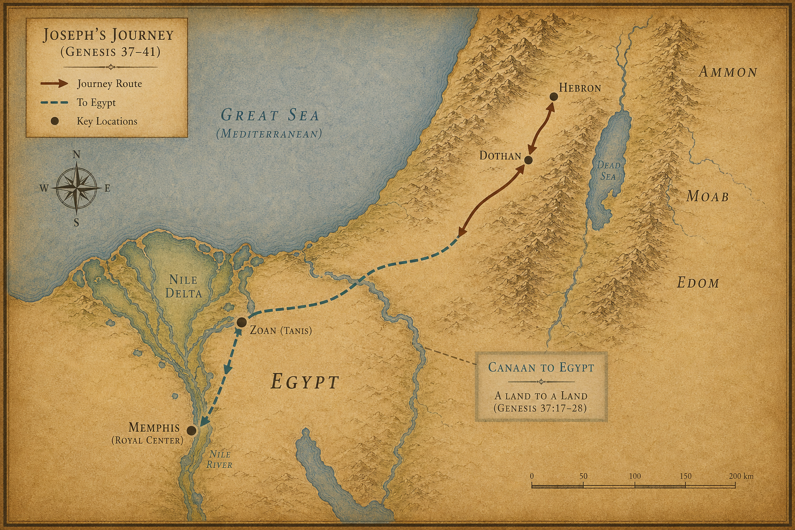
지도 11. 창세기 37~41장 배경: 요셉의 이동(가나안~애굽).
1 만 2년 후였다. 파라오가 꿈을 꾸었다. 나일 강 가에 서 있는데,
2 강에서 아름답고 살진 암소 일곱 마리가 올라와 갈밭에서 풀을 뜯었다.
3 그 뒤를 이어 흉하고 뼈만 남은 암소 일곱 마리가 강에서 올라와 강 가에 있는 살진 소들 곁에 섰다.
4 흉하고 뼈만 남은 암소들이 아름답고 살진 암소들을 먹어버렸다. 파라오가 잠에서 깨었다.
5 다시 잠이 들어 또 꿈을 꾸었다. 한 줄기에 충실하고 좋은 이삭 일곱 개가 돋아났다.
6 그 후에 가늘고 동풍에 마른 이삭 일곱 개가 돋아났는데,
7 그 가는 이삭들이 충실한 이삭 일곱 개를 삼켜버렸다. 파라오가 깨고 나니 꿈이었다.
8 아침이 되어 파라오의 마음이 심란하였다. 이집트의 모든 점술가와 지혜자를 불러 그 꿈을 말하였으나 아무도 파라오에게 풀이하지 못하였다.
9 그때 술 맡은 관원장이 파라오에게 말하였다.
“제가 오늘 제 허물을 아룁니다.”
10 “파라오께서 종들에게 화를 내셔서 저와 떡 맡은 관원장을 경비대장의 집에 가두셨을 때,”
11 “하룻밤에 그와 나 둘이 꿈을 꾸었는데 각각 다른 내용이었습니다.”
12 “거기 경비대장의 종으로 젊은 히브리 사람이 있었는데, 우리가 그에게 말하니 그가 각 사람의 꿈을 풀이하여 주었고,”
13 “그 풀이한 대로 되었으니 나는 복직되고 그는 나무에 달렸습니다.”
14 파라오가 사람을 보내어 요셉을 불렀다. 빨리 감옥에서 불러내었다. 요셉이 수염을 깎고 옷을 갈아입고 파라오에게 나아왔다.
15 파라오가 요셉에게 말하였다.
“내가 꿈을 꾸었는데 이것을 풀이하는 자가 없더니, 네가 꿈을 들으면 풀이할 수 있다고 들었노라.”
16 요셉이 파라오에게 대답하였다.
“제가 아니라 하나님께서 파라오에게 좋은 대답을 주실 것입니다.”
17 파라오가 요셉에게 꿈을 말하였다. 강가에서 살진 소를 뼈만 남은 소들이 먹어치우는 꿈, 충실한 이삭을 마른 이삭들이 삼키는 꿈.
24 “내가 이 꿈을 점술가들에게 말하였으나 내게 풀이하는 자가 없었노라.”
25 요셉이 파라오에게 말하였다.
“파라오의 꿈은 하나입니다. 하나님이 하시려는 일을 파라오에게 알리신 것입니다.”
26 “살진 암소 일곱 마리는 7년이요, 충실한 이삭 일곱 개도 7년입니다. 꿈이 하나입니다.”
27 “뼈만 남고 흉한 암소 일곱 마리도 7년이요, 동풍에 마른 이삭 일곱도 7년이니, 그것들은 7년 큰 흉년입니다.”
28 “하나님이 하실 일을 파라오에게 보이신 것입니다. 7년 큰 풍년이 이집트에 있을 것이요,”
29 “그 후에 7년 큰 흉년이 들 것이며, 이집트 땅의 풍년은 다 잊혀지고 이 땅이 먹을 것이 모자라 피폐해질 것입니다.”
30 “풍년이 뒤에 오는 큰 흉년으로 말미암아 이 땅에서 보이지 않을 것이니 그 흉년이 아주 심할 것입니다.”
31 꿈이 두 번 거듭된 것은 하나님이 이 일을 반드시 빨리 행하실 것이기 때문이라 요셉이 말하였다.
32 “이제 파라오께서는 지혜롭고 똑똑한 사람을 찾아 이집트 땅을 다스리게 하시고,”
33 “풍년 7년 동안 이집트 땅의 소산의 5분의 1을 거두어 각 도시마다 먹을 것을 쌓아 두소서.”
34 “그 양식을 저장하여 7년 큰 흉년에 대비하시면 이 나라가 망하지 않을 것입니다.”
37 이 말이 파라오와 모든 신하들의 눈에 좋게 보였다.
38 파라오가 신하들에게 말하였다.
“이와 같이 하나님의 영에 감동된 사람을 우리가 어찌 찾을 수 있겠느냐?”
39 파라오가 요셉에게 말하였다.
“하나님이 이 모든 것을 네게 알리셨으니 너와 같이 지혜롭고 똑똑한 자가 없도다.”
40 “너는 내 집을 다스려라. 내 백성이 다 네 명령에 복종하리라. 나는 왕위에서만 너보다 크리라.”
41 “내가 너를 이집트 온 땅의 총리로 세우노라.”
42 파라오가 자기 손에서 인장 반지를 빼어 요셉의 손에 끼우고, 고운 삼베옷을 입히고, 금 사슬을 목에 걸었다.
43 두 번째로 높은 왕실 수레에 태우니 무리가 그 앞에서 외쳤다.
“압렉!”
무릎을 꿇어라. 이 히브리 청년 앞에, 모두가 무릎을 꿇었다.
파라오가 그에게 이집트 온 땅을 다스리게 하였다.
요셉을 등용한 파라오의 정확한 정체는 알 수 없다. 힉소스 왕조설을 따르면 아포피스(Apophis) 같은 셈족계 왕일 가능성이 거론되고, 12왕조설을 따르면 센와세레트 3세 또는 아메넴헤트 3세일 수 있다. 어느 쪽이든 성경은 이름을 남기지 않고 “파라오”라고만 기록했다.
44 “나는 파라오다. 이집트 온 땅에서 네 허락 없이는 누구도 손발을 움직이지 못하리라.”
45 파라오가 요셉의 이름을 사브낫바네아(생명을 주는 자)라 하고, 온(On, 헬리오폴리스, 현대 카이로 북쪽) 제사장 보디베라의 딸 아스낫을 아내로 주었다.
46 요셉이 이집트 왕 파라오 앞에 설 때 그의 나이가 30세였다.
47 7년 풍년 동안에 땅이 풍성히 소산을 냈다.
48 요셉이 이집트 온 땅의 양식을 거두어 각 도시에 저장하였다. 각 도시 주위 밭의 소산을 그 도시 안에 쌓았다.
49 요셉이 바닷가의 모래처럼 아주 많이 곡식을 저장하여 수량을 셀 수 없었다.
50 큰 흉년이 들기 전에 온 제사장 보디베라의 딸 아스낫이 요셉에게 두 아들을 낳았다.
51 요셉이 첫째 아들의 이름을 므낫세(잊게 하심)라 하였다.
“하나님이 나로 나의 모든 고난과 나의 아버지의 온 집 일을 잊어버리게 하셨다.”
52 둘째 아들의 이름을 에브라임(번성케 하심)이라 하였다.
“하나님이 나를 내가 수고한 땅에서 번성하게 하셨다.”
53 이집트 땅에 7년 풍년이 끝나고
54 요셉의 말대로 7년 큰 흉년이 시작되었다. 온 땅에 먹을 것이 모자랐으나 이집트 온 땅에는 양식이 있었다.
55 이집트 온 땅이 굶주리니 백성이 파라오에게 부르짖어 음식을 구하였다. 파라오가 이집트 모든 백성에게 말하였다.
“요셉에게 가서 그가 너희에게 이르는 대로 하라.”
56 온 땅에 먹을 것이 모자랐다. 요셉이 모든 창고를 열고 이집트 사람들에게 팔았다.
57 다른 나라 사람들도 양식을 사러 이집트로 왔다. 큰 흉년이 온 땅에 심하였기 때문이었다.
구덩이에 던져진 열일곱 살짜리 소년이, 열두 해가 지나 세계의 식량 창고를 열고 있다.
다음 장 — 가나안에도 큰 흉년이 닥쳤다. 야곱이 아들들을 이집트로 보낸다. 요셉은 형들을 알아보지만, 형들은 요셉을 알아보지 못한다.
1 야곱은 이집트(애굽)에 먹을 것이 있다는 소식을 듣고 아들들에게 말했다.
“너희는 왜 서로 멀뚱멀뚱 바라보고만 있느냐?”
2 “들으니 이집트에 먹을 것이 있다고 하더구나. 거기 내려가서 먹을 것을 사 오너라. 그러면 우리가 죽지 않고 살 것이다.”
3 요셉의 형 열 명이 이집트에서 곡식을 사려고 내려갔다.
4 그러나 야곱은 요셉의 동생 베냐민을 형들과 함께 보내지 않았다. 혹시 재앙이 그에게 미칠까 두려웠기 때문이었다.
5 이스라엘의 아들들은 가나안 땅에 큰 흉년이 들었으므로, 먹을 것을 사러 가는 사람들 사이에 섞여 이집트로 내려갔다.
6 요셉은 그 땅의 총리였다. 모든 백성에게 먹을 것을 파는 사람이 바로 요셉이었다. 요셉의 형들이 와서 그 앞에 얼굴을 땅에 대고 절했다.
7 요셉이 형들을 보고 알아보았다. 그러나 모르는 척하고 엄하게 말했다.
“너희는 어디서 왔느냐?”
“양식을 사러 가나안 땅에서 왔습니다.”
열 명의 얼굴 앞에서 요셉은 숨을 눌렀을 것이다. 이십 년 전 구덩이에 던져지던 날의 기억, 도망치던 이스마엘 상인들의 뒷모습. 그러나 그는 아무것도 내보이지 않았다.
8 형들은 요셉을 알아보지 못했다. 나이도, 옷도, 언어도 달랐다.
9 요셉이 그들에 대해 꾸었던 꿈들을 떠올렸다. 그리고 말했다.
“너희는 정탐꾼들이다. 이 나라의 허술한 곳을 엿보러 온 것이다.”
10 형들이 말했다.
“아닙니다, 내 주여. 우리는 먹을 것을 사러 왔습니다.”
11 “우리는 다 한 사람의 아들들로 정직한 사람들입니다. 우리는 정탐꾼이 아닙니다.”
12 “아니다, 너희가 이 나라의 허술한 곳을 보러 온 것이다.”
13 형들이 말했다.
“우리는 열두 형제로서 가나안 땅 한 아버지의 아들들입니다. 막내는 오늘 아버지와 함께 있고, 또 한 사람은 없어졌습니다.”
14 요셉이 말했다.
“내가 한 말이 맞다. 너희는 정탐꾼들이다.”
15 “너희를 이렇게 시험하겠다. 파라오의 살아 계심으로 맹세하노니, 너희 막내 동생이 여기 오지 않으면 너희는 여기서 나가지 못한다.”
16 “너희 중 하나를 보내어 동생을 데려오게 하고, 너희는 갇혀 있어라. 그리하여 너희 말이 참인지 확인하겠다. 만일 그렇지 않으면 파라오의 살아 계심으로 맹세하노니 너희는 정탐꾼들이다.”
17 요셉이 그들을 사흘 동안 가두었다.
18 사흘 만에 요셉이 그들에게 말했다.
“나는 하나님을 두려워하며 공경하노니, 너희는 이렇게 하여 살아남아라.”
19 “너희가 정직한 사람들이라면, 너희 형제 중 한 사람만 감옥에 남고 나머지는 먹을 것을 가지고 가서 집안의 굶주림을 채워라.”
20 “그리고 너희 막내 동생을 내게로 데려오너라. 그러면 너희 말이 사실임이 확인되고 너희가 죽지 않을 것이다.”
형들이 그대로 하기로 했다.
21 형들이 서로 말했다. 요셉이 통역을 두었기 때문에 자기들의 말을 요셉이 알아듣는지 몰랐다.
“우리가 동생의 일로 죄를 저질렀다. 그가 우리에게 애걸할 때에 그 마음의 괴로움을 보고도 듣지 않았으니, 이 괴로움이 우리에게 닥친 것이다.”
22 르우벤이 그들에게 말했다.
“내가 너희에게 그 아이에게 죄를 짓지 말라고 하지 않았느냐? 그러나 너희가 듣지 않았다. 그러므로 그의 피 값을 이제 우리가 치르는 것이다.”
23 형들은 요셉이 자기들의 말을 알아듣는 줄 알지 못했다.
24 요셉이 그들을 떠나 가서 울었다. 그리고 돌아와 그들에게 말하고 그들 중에서 시므온을 붙잡아 그들이 보는 앞에서 결박했다.
25 요셉이 그들의 자루에 곡식을 채우고, 각 사람이 낸 돈을 그 자루에 도로 넣게 하고, 가는 길에 먹을 것도 주게 했다. 그대로 행했다.
26 그들이 나귀에 먹을 것을 싣고 그 곳을 떠났다.
27 한 사람이 숙소에서 나귀에게 먹이를 주려고 자루를 풀다가 자루 속에 자기 돈이 있는 것을 보았다.
28 형제들에게 말했다.
“내 돈이 돌아왔다. 보라, 이것이 내 자루 속에 있다.”
그들의 마음이 서로 풀리며 떨렸다.
“하나님이 왜 우리에게 이런 일을 하셨는가?”
29 그들이 가나안 땅에 있는 아버지 야곱에게 돌아와 자기들이 겪은 모든 일을 말했다.
30 “그 땅의 주인이 우리에게 엄하게 말하고 우리를 나라의 정탐꾼으로 여겼습니다.”
31 “우리는 정직한 사람들이라 정탐꾼이 아니라고 했습니다.”
32 “우리는 한 아버지의 아들 열두 형제로서 하나는 없어졌고, 막내는 지금 아버지와 함께 가나안 땅에 있습니다.”
33 “그 땅의 주인이 우리에게 말했습니다. 너희가 정직한 사람임을 이렇게 확인하겠다. 너희 형제 중 하나를 내게 두고, 먹을 것을 가져다가 집안의 굶주림을 채우고,”
34 “너희 막내 동생을 내게로 데려오너라. 그러면 너희가 정탐꾼이 아니요 정직한 사람인 줄 알고, 너희 형제를 너희에게 돌려보내겠다고 했습니다.”
35 그들이 자루를 비우니 각 사람의 돈뭉치가 자루에 들어 있었다. 그들과 아버지가 그 돈뭉치를 보고 두려워했다.
36 야곱이 그들에게 말했다.
“너희가 나로 하여금 자식을 잃게 하는구나. 요셉도 없고, 시므온도 없고, 이제 베냐민마저 빼앗아가려 하니, 이 모든 것이 나를 해롭게 하는구나.”
37 르우벤이 아버지에게 말했다.
“내가 그를 아버지께로 데려오지 못하면 내 두 아들을 죽이십시오. 그를 내 손에 맡겨 주십시오. 내가 반드시 아버지께 데려오겠습니다.”
38 야곱이 말했다.
“내 아들은 너희와 함께 내려가지 못한다. 그의 형은 죽고 그만 남았는데, 너희가 가는 길에서 재난이 그에게 미치면 너희가 내 흰 머리를 슬픔 속에 스올로 내려가게 하는 것이다.”
야곱은 허락하지 않았다. 그러나 큰 흉년은 계속될 것이다. 다음번에 그들은 선택의 여지가 없을 것이다.
다음 장 — 큰 흉년이 더욱 심해지자 야곱은 결국 베냐민을 보내야 하는 기로에 선다. 유다가 나서고, 이집트로 다시 내려가는 여정이 시작된다.
1 큰 흉년은 그칠 기미가 없었다. 가나안 땅을 덮은 굶주림은 날이 갈수록 더 심해졌다.
2 이집트에서 가져온 먹을 것이 다 떨어졌다. 야곱이 아들들을 바라보며 말했다.
“다시 가서 먹을 것을 조금 사 오너라.”
3 유다가 아버지 앞에 똑바로 섰다. 목소리에 흔들림이 없었다.
“아버지, 그 사람이 우리에게 엄히 경고했습니다. ’동생이 너희와 함께 오지 않으면 내 얼굴을 볼 생각도 하지 마라’고 했습니다.”
4 “베냐민을 함께 보내신다면 내려가서 아버지께 먹을 것을 사다 드리겠습니다.”
5 “하지만 보내지 않으신다면 내려가지 못합니다. 그 사람이 ’동생 없이는 오지도 마라’고 했는데 어찌 가겠습니까.”
6 이스라엘(야곱)은 분통을 터뜨렸다.
“어찌하여 동생이 있다고 그 사람에게 말해서 나를 이렇게 해롭게 하느냐?”
7 형제들이 한목소리로 답했다.
“그 사람이 우리와 우리 가족에 대해 낱낱이 물었습니다. ‘아버지가 살아 계시냐, 동생이 있느냐?’ 하고 친절히 물어오기에 그대로 대답한 것뿐입니다. 그가 ’동생을 데려오라’고 할 줄을 어찌 알았겠습니까?”
8 유다가 다시 나섰다. 이번엔 애원이 아니라 보증이었다.
“베냐민을 저와 함께 보내 주십시오. 우리가 지금 당장 떠나야 우리도 살고 아버지도 사시고 아이들도 삽니다. 굶어 죽을 수는 없지 않습니까.”
9 “제가 그 아이를 위해 보증이 되겠습니다. 그 아이를 안전히 아버지께 데려오지 못하면, 평생 그 죄를 제가 지겠습니다.”
10 유다의 목소리에는 거짓이 없었다. “지체하지 않았다면 벌써 두 번은 다녀왔을 것입니다.”
11 이스라엘은 긴 침묵 끝에 한숨을 내쉬었다. 더 이상 버틸 수 없었다.
“그렇게 해야만 한다면, 이렇게 하여라. 이 땅의 좋은 것들을 조금씩 담아 예물로 가져가거라.”
12 유향, 꿀, 향품, 몰약, 비자, 감복숭아 — 가나안 땅이 자랑하는 소산들이었다. “돈은 두 배로 가져가거라. 처음에 자루에서 도로 나온 돈도 가져가야 한다. 혹시 착오가 있었는지도 모른다.”
13 “그리고 베냐민도 데리고 떠나거라. 어서 그 사람에게로 가거라.”
14 야곱의 눈에 물기가 어렸다. 마지막으로 하늘을 향해 중얼거렸다.
“전능하신 하나님께서 그 사람 앞에서 너희에게 불쌍히 여기심을 베푸셔서, 시므온과 베냐민을 다 돌려보내게 하시기를 빈다.”
그리고 아주 낮게, 혼잣말처럼 덧붙였다.
“내가 자식을 잃으면 잃으리로다.”
포기가 아니었다. 운명에 기대는 자의 마지막 고백이었다.
15 형제들은 예물을 챙기고 돈을 두 배로 준비하여 베냐민을 데리고 이집트로 내려갔다. 요셉 앞에 다시 섰다.
16 요셉이 베냐민이 함께 온 것을 보았다. 그 순간 청지기에게 명했다.
“이 사람들을 내 집으로 데려가라. 짐승을 잡고 음식을 준비하여라. 이 사람들이 정오에 나와 함께 먹을 것이니라.”
17 청지기는 명대로 형제들을 요셉의 집으로 안내했다.
18 형제들은 그 집 앞에 이끌려 들어서는 순간부터 가슴이 서늘했다.
‘우리가 무슨 트집에 걸린 건 아닐까. 처음에 돌아갔을 때 자루에서 나온 돈 때문일 것이다. 이 자들이 우리를 덮쳐 종으로 삼고 나귀를 빼앗으려는 것이리라.’
19 형제들은 대문 앞에서 청지기를 붙잡았다.
“선생님, 들어주십시오. 우리가 처음에 먹을 것을 사러 왔다가 돌아갈 때 각자의 자루를 열어보니 우리가 낸 돈이 그대로 자루 안에 있었습니다.”
20 “그 돈을 다시 가져왔습니다. 먹을 것을 살 다른 돈도 가져왔습니다. 누가 자루에 돈을 넣었는지 우리는 정말 모릅니다.”
21 청지기가 손을 저으며 말했다.
“안심하십시오. 두려워하지 마십시오. 그 돈은 여러분의 하나님, 여러분 조상의 하나님께서 여러분 자루 속에 넣어두신 재물입니다. 여러분 돈은 이미 제게 입금이 되었습니다.”
22 그 말 한마디에 형제들의 굳어 있던 어깨가 조금 내려갔다.
23 청지기는 시므온을 데리고 나왔다. 감금에서 풀려난 시므온이 형제들 앞에 섰다. 형제들은 발을 씻었고 나귀들은 여물을 받았다.
24 25 형제들은 정오에 요셉이 들어올 것이라는 말을 듣고 예물을 가지런히 준비했다.
26 요셉이 집으로 들어왔다. 형제들은 예물을 들고 그 앞에 엎드려 절했다.
꿈이 이루어지고 있었다. 열한 개의 별이 절을 하고 있었다.
27 요셉이 먼저 입을 열었다. 목소리를 가다듬으며 물었다.
“너희가 말하던 늙은 아버지가 평안하시냐? 아직 살아 계시냐?”
28 형제들이 답했다.
“주의 종 우리 아버지께서 평안하시고, 지금도 살아 계십니다.”
그들은 다시 허리를 굽혀 절했다.
29 요셉이 고개를 들어 베냐민을 보았다. 같은 어머니 라헬이 낳은, 자신의 친동생. 태어나던 그 날부터 제대로 얼굴을 보지 못했던 동생이었다.
요셉의 가슴 어딘가가 뭉클하게 조여들었다.
“이 아이가 너희가 말하던 막내 동생이냐?”
“하나님이 네게 은혜를 베푸시기를 바라노라, 얘야.”
30 요셉은 감정이 북받쳐 오르는 것을 느꼈다. 더 이상 그 자리에 서 있을 수 없었다. 서둘러 안방으로 들어갔다. 문을 닫았다. 그리고 울었다.
형제들이 없는 곳에서, 홀로.
31 한참 후 요셉은 세수를 하고 감정을 가라앉혔다. 나와서 담담한 얼굴로 명했다.
“상을 차려라.”
32 상이 차려졌다. 요셉의 자리, 형제들의 자리, 함께 식사하는 이집트 사람들의 자리가 따로따로였다. 이집트 사람은 히브리 사람과 한 상에서 먹지 않았다 — 그것은 그들에게 부정한 일이었다.
33 형제들이 자리에 앉았다. 맏이부터 막내까지 나이 순서대로 정확히 배치되어 있었다.
형제들은 서로를 바라보았다. 얼굴에 당혹감이 번졌다. 이 사람이 어떻게 우리 나이를 다 알지? 말은 못 했지만 눈빛들이 흔들렸다.
34 음식이 날라졌다. 그런데 베냐민의 접시를 보니 다른 형들의 것과 달랐다. 다섯 배였다.
주인이 막내를 각별히 여기고 있었다.
형제들은 요셉과 함께 마시고 즐거웠다. 오랜만의 포식이었다. 아무도 그 이상한 호의의 이유를 눈치채지 못했다.
다음 장 — 형제들이 기쁘게 떠나는 아침, 그러나 베냐민의 자루에서 은잔이 발견된다. 그리고 유다가 역사상 가장 아름다운 탄원을 시작한다.
1 밤이 깊었다. 형제들이 곤히 자는 시각, 요셉은 청지기를 불렀다.
“자루마다 먹을 것을 가득 채워라. 각 사람의 돈을 자루 아귀에 도로 넣어라.”
2 “그리고 내 은잔을, 막내의 자루에 먹을 것 산 돈과 함께 넣어라.”
청지기는 말대로 했다.
3 동이 텄다. 형제들은 나귀에 짐을 싣고 서둘러 떠났다. 집으로 돌아가는 발걸음이 가벼웠다. 시므온도 되찾았고, 베냐민도 무사했고, 먹을 것도 가득했다.
4 그러나 그들이 도시에서 멀어지기도 전에, 요셉이 청지기에게 명했다.
“그 사람들을 뒤쫓아가라. 따라잡으면 말하여라.”
5 “어찌하여 선을 악으로 갚느냐? 우리 주인이 마시는 잔, 점치는 데 쓰는 잔이 없어졌다. 너희가 큰 잘못을 저질렀다.”
6 청지기가 형제들을 따라잡아 그 말을 그대로 전했다.
7 형제들의 얼굴이 굳었다. 억울함이 치밀었다.
“주인께서 무슨 말씀을 하시는 겁니까? 우리가 그런 짓을 할 사람들입니까?”
8 “전에 자루에서 나온 돈도 가나안에서 도로 가져오지 않았습니까? 그 먼 길을 일부러 돌아왔는데, 우리가 주인 댁의 은이나 금을 훔치겠습니까?”
9 형제들은 자신만만했다.
“만약 우리 중에 그 잔을 가진 자가 있다면, 그를 죽이십시오. 나머지 우리는 모두 종이 되겠습니다.”
10 청지기가 말했다.
“좋습니다. 잔을 가진 자만 종이 되면 됩니다. 나머지는 죄가 없습니다.”
11 형제들은 각자 자루를 내려 땅에 놓았다. 당당했다. 아무것도 없다는 걸 알고 있었으니까.
12 청지기가 수색을 시작했다. 큰 자부터 작은 자까지, 차례대로.
르우벤의 자루 — 없다. 시므온 — 없다. 레위 — 없다. 유다 — 없다. 잇사갈, 스불론, 갓, 아셀, 단, 납달리 — 없다.
마지막, 베냐민의 자루.
13 잔이 나왔다.
은잔. 요셉의 잔.
형제들은 옷을 찢었다. 말이 나오지 않았다. 각자 짐을 다시 나귀에 싣고 도시로 돌아갔다. 발걸음이 납덩이처럼 무거웠다.
14 요셉의 집에 들어서자, 요셉이 아직 거기 있었다. 유다와 형제들이 그 앞에 엎드렸다.
15 요셉이 차갑게 말했다.
“이게 무슨 짓이냐? 너희는 나 같은 사람이 점을 칠 줄 모른다고 생각했더냐?”
16 유다가 고개를 들었다. 무슨 말로 항변해야 할지 알 수 없었다.
“우리가 무슨 말씀을 드릴 수 있겠습니까? 어찌 우리의 결백을 증명하겠습니까? 하나님께서 종들의 죄를 찾아내셨습니다.”
죄가 어디서 왔는지, 유다는 알고 있었다. 요셉을 판 그날의 죄가 지금 이 모습으로 돌아온 것이라고 그는 느꼈다.
“우리가 모두 주의 종이 되겠습니다. 잔을 가진 자도, 나머지도.”
17 요셉이 고개를 저었다.
“아니다. 잔이 나온 자만 나의 종이 되면 된다. 나머지는 아버지에게 평안히 올라가라.”
18 유다가 앞으로 나섰다. 몸을 굽히며 말을 시작했다.
“내 주여, 주의 종이 한 말씀 올려도 되겠습니까? 노하지 마소서, 주는 파라오와 같으신 분입니다.”
19 “주께서 종들에게 처음 물으셨습니다. ‘아버지가 있느냐, 동생이 있느냐?’ 하고요.”
20 “저희가 말씀드렸습니다. ’늙은 아버지와, 그 노년에 얻은 어린 아들이 있습니다. 그 아이의 형은 죽고 홀로 어머니에게서 남은 자라 아버지가 특별히 사랑하십니다’라고.”
21 “그때 주께서 종들에게 말씀하셨지요. ’그 아이를 데려오너라, 내가 직접 보겠다’라고.”
22 “저희가 말씀드렸습니다. ’그 아이는 아버지를 떠나지 못합니다. 아버지를 떠나면 아버지가 돌아가실 것입니다’라고.”
23 “그러나 주께서 말씀하셨습니다. ’막내 동생이 함께 오지 않으면 다시는 내 얼굴을 보지 못하리라’라고.”
24 “저희가 아버지에게로 돌아가 주의 말씀을 그대로 전했습니다.”
25 “그 후 아버지께서 ’다시 내려가 먹을 것을 조금 사 오너라’고 하셨을 때,”
26 “저희가 말씀드렸습니다. ’막내 동생이 함께 가지 않으면 우리는 내려가지 못합니다. 그 아이 없이는 그 사람의 얼굴을 볼 수 없습니다’라고.”
27 “그러자 아버지께서 말씀하셨습니다. ‘너희도 알다시피 내 아내가 두 아들을 낳았다.’”
28 “‘하나는 나를 떠나갔는데, 분명히 찢겨 죽었다고 다시는 보지 못하였다.’”
29 “’이제 이 아이마저 데려가려 하느냐? 만약 재앙이 그에게 미친다면 나는 흰 머리로 슬프게 스올(죽음의 세계)에 내려가게 될 것이다’라고.”
30 유다의 목소리가 조금 떨렸다.
“이제 제가 아버지께로 돌아갈 때, 아이가 함께 있지 않다면 — 아버지의 혼이 이 아이의 혼과 깊이 이어져 있으니 — 아버지께서는 돌아가실 것입니다.”
31 “종들이 아버지께 아이가 없음을 알리면, 흰 머리의 아버지께서 슬픔으로 스올에 내려가시게 됩니다.”
32 “저 유다는 이 아이를 위해 아버지께 보증이 되었습니다. ’내가 그를 데려오지 못하면 평생 그 죄를 내가 집니다’라고 했습니다.”
33 유다는 마지막 말을 천천히, 또렷하게 했다.
“그러니 부탁드립니다. 종으로 하여금 이 아이를 대신하여 주 곁에 머물게 하소서. 아이는 형들과 함께 올라가게 해주소서.”
34 “아이 없이 제가 어찌 아버지께로 돌아갈 수 있겠습니까? 아버지께 닥칠 그 재앙을 제가 어찌 차마 눈 뜨고 보겠습니까?”
이 방 안의 모든 공기가 멈춘 것 같았다.
다음 장 — 유다의 말이 끝나는 순간, 요셉은 더 이상 버티지 못한다. 20년의 비밀이 무너진다.
1 유다의 말이 끝났다. 침묵.
요셉은 더 이상 버틸 수 없었다. 감정이 목까지 차올랐다. 그는 곁에 서 있던 모든 시종들을 향해 말했다.
“모두 나가라.”
2 이집트 사람들이 모두 물러났다. 방 안에는 요셉과 열한 명의 형제들만 남았다.
그리고 요셉이 울었다. 소리 내어, 크게 울었다. 그 소리가 이웃 방까지, 파라오의 궁까지 들릴 만큼.
3 울음을 겨우 추스른 요셉이 형제들을 바라보며 말했다.
“나는 요셉이오. 내 아버지가 아직 살아 계십니까?”
형제들은 아무 말도 하지 못했다. 얼굴이 하얗게 질렸다. 발이 땅에 붙어버린 것 같았다. 총리대신이 요셉이라고? 20년 전 구덩이에 던져 넣었던 그 열일곱 살짜리 아이가?
4 요셉이 손을 내밀었다.
“가까이 오십시오.”
형제들이 가까이 왔다. 요셉이 낮게, 그러나 분명하게 말했다.
5 “나는 당신들이 이집트에 판 아우 요셉이오. 이제 나를 여기에 판 것을 근심하지도 마시고, 한탄하지도 마시오.”
“하나님이 생명을 구하시려고 나를 당신들보다 먼저 이곳에 보내신 것이오.”
6 “이 땅에 큰 흉년이 든 지 벌써 2년이오. 앞으로 5년은 더 갈 것이오. 밭을 갈아도, 씨를 뿌려도 거둘 것이 없는 세월이.”
7 “하나님이 당신들을 위하여 이 세상에 남은 자들을 두시고, 큰 구원으로 당신들의 생명을 보존하시려고 나를 먼저 보내신 것이오.”
8 요셉의 눈빛이 깊어졌다.
“그러니 나를 이리로 보낸 것은 당신들이 아니오. 하나님이시오.”
형제들은 그 말을 들으며 무언가가 와르르 무너지는 것을 느꼈다.
“하나님이 나를 파라오의 아버지로, 그의 온 집의 주로, 이집트 온 땅의 통치자로 삼으셨소.”
9 요셉이 서두르기 시작했다.
“빨리 아버지께 올라가서 이렇게 전하시오. ‘아들 요셉이 이렇게 말합니다 — 하나님이 나를 이집트 온 땅의 주로 삼으셨습니다. 지체하지 마시고 내게로 내려오십시오.’”
10 “아버지께서 고센(Goshen, 이집트 나일 델타 동부) 땅에 사시면 내게 가까이 계실 수 있습니다. 아버지와 자녀들과 손자들, 양 떼와 소 떼와 모든 소유를 다 데려오십시오.”
11 “앞으로 5년은 큰 흉년이 더 남았으니 내가 아버지를 돌봐 드리겠습니다. 그러지 않으면 아버지와 아버지의 집안과 모든 것이 가난에 빠질 것이오.”
12 “보십시오. 당신들의 눈, 내 아우 베냐민의 눈이 보고 있소. 내 입이 직접 당신들에게 말하고 있소.”
13 “내가 이집트에서 누리는 이 모든 영광과, 당신들이 보고 들은 모든 것을 아버지께 전하시오. 그리고 빨리 아버지를 모셔 내려오시오.”
14 요셉이 베냐민에게로 걸어갔다. 목을 끌어안고 울었다. 베냐민도 요셉의 목을 안고 울었다.
15 요셉은 형들 한 사람 한 사람에게 입을 맞추며 울었다. 그제야 형들도 말을 하기 시작했다.
20년이 지나서야, 형제들이 다시 같은 자리에 섰다.
16 이 소식이 파라오의 궁에 퍼졌다. “요셉의 형제들이 왔다.” 파라오와 신하들이 기뻐했다.
17 파라오가 요셉에게 직접 말했다.
“형제들에게 이르라. ‘짐승에 짐을 싣고 가나안으로 돌아가서 아버지와 가족을 데려오라.’”
18 “‘이집트의 가장 좋은 땅을 너희에게 줄 것이니 이 나라의 기름진 것을 먹으리라.’”
19 “수레를 가져다가 자녀들과 아내들을 태우고 아버지를 모셔 오라.”
20 “살림살이 걱정은 하지 마라. 이집트 온 땅의 좋은 것이 너희 것이다.”
21 이스라엘의 아들들이 그대로 했다. 요셉은 파라오의 명에 따라 수레를 내주었다. 노자도 주었다.
22 각 사람에게 옷을 한 벌씩 주었다. 베냐민에게는 은 삼백과 옷 다섯 벌을 주었다.
23 아버지에게는 따로 준비했다. 이집트의 좋은 것을 실은 나귀 열 마리, 아버지가 돌아오는 길에 쓸 먹을 것과 빵을 실은 암나귀 열 마리.
24 형제들을 보내며 요셉이 마지막으로 한마디 했다.
“가는 길에 서로 다투지 마시오.”
형제들의 표정이 미묘하게 굳었다. 다 알고 있다는 말이었다.
25 형제들은 이집트를 떠나 가나안 땅 아버지 야곱에게로 돌아왔다.
26 형제들이 말했다.
“요셉이 살아 있습니다! 이집트 온 땅의 총리가 되어 있습니다!”
야곱은 멍해졌다. 심장이 멎는 것 같았다. 믿기지 않았다. 전혀.
27 형제들이 요셉이 한 말들을 하나씩 전했다. 야곱은 요셉이 자기를 태우러 보낸 수레들을 보았다.
그때였다. 야곱, 이스라엘의 기운이 소생했다.
28 노인의 눈이 빛났다. 야곱이 말했다.
“충분하다. 내 아들 요셉이 지금도 살아 있구나. 내가 죽기 전에 가서 그를 봐야겠다.”
다음 장 — 야곱이 가나안을 떠난다. 이삭의 하나님이 브엘세바(Beersheba, 네게브 사막)에서 다시 나타나신다. 70인이 이집트로 내려간다.
1 이스라엘이 모든 소유를 이끌고 길을 나섰다. 브엘세바(Beersheba, 네게브 사막)에 이르러 멈췄다. 아버지 이삭의 하나님께 제물을 드렸다.
가나안을 떠나는 것은 단순한 이사가 아니었다. 약속의 땅을 등지는 일이었다. 야곱은 그 무게를 알고 있었다.
2 그날 밤 하나님이 이스라엘에게 환상으로 말씀하셨다.
“야곱아, 야곱아.”
야곱이 대답했다.
“내가 여기 있습니다.”
3 하나님이 말씀하셨다.
“나는 하나님이다. 네 아버지의 하나님이다. 이집트로 내려가기를 두려워하지 마라. 내가 거기서 너로 큰 민족을 이루게 하리라.”
4 “내가 너와 함께 이집트로 내려가겠다. 반드시 너를 다시 이끌어 올릴 것이다. 요셉이 자기 손으로 네 눈을 감기리라.”
마지막 말이 야곱의 가슴에 깊이 박혔다. 죽는 순간 요셉이 곁에 있을 것이라는 약속이었다.
5 야곱이 브엘세바에서 일어났다. 이스라엘의 아들들이 아버지 야곱을 파라오가 보낸 수레에 태웠다. 어린아이들과 아내들도 함께 탔다.
6 가나안에서 모은 모든 가축과 소유를 이끌고 이집트로 향했다.
7 야곱과 그의 자녀들과 손자들, 딸들과 손녀들 — 그 온 가족이 함께 이집트로 내려갔다.
8 이집트로 내려간 이스라엘 자손들의 이름이다.
야곱의 첫째 아들 르우벤, 그리고 르우벤의 아들들: 9 하녹, 발루, 헤스론, 갈미.
10 시므온과 그의 아들들: 여무엘, 야민, 오핫, 야긴, 스할, 가나안 여인의 소생 사울.
11 레위와 그의 아들들: 게르손, 그핫, 므라리.
12 유다와 그의 아들들: 엘, 오난, 셀라, 베레스, 세라. 엘과 오난은 가나안 땅에서 이미 죽었다. 베레스의 아들들은 헤스론과 하물.
13 잇사갈과 그의 아들들: 돌라, 부와, 욥, 시므론.
14 스불론과 그의 아들들: 세렛, 엘론, 얄르엘.
15 이들은 야곱이 밧단아람에서 레아에게서 낳은 자손들이다. 딸 디나도 함께였다. 아들과 딸을 합쳐 서른셋이었다.
16 갓과 그의 아들들: 시뵨, 학기, 수니, 에스본, 에리, 아로디, 아렐리.
17 아셀과 그의 아들들: 임나, 이스와, 이스위, 브리아, 그들의 누이 세라. 브리아의 아들들: 헤벨, 말기엘.
18 이들은 레아의 여종 실바의 소생으로 야곱에게서 난 자손이다. 열여섯 명.
19 야곱의 아내 라헬의 아들들: 요셉과 베냐민.
20 이집트 땅에서 온(On, 헬리오폴리스, 카이로 북쪽)의 제사장 보디베라의 딸 아스낫이 요셉에게 낳아준 아들들: 므낫세와 에브라임.
21 베냐민의 아들들: 벨라, 베겔, 아스벨, 게라, 나아만, 에히, 로스, 뭅빔, 훕빔, 아릇.
22 이들이 라헬이 야곱에게 낳아준 자손으로 모두 열넷이다.
23 단의 아들: 후심.
24 납달리와 그의 아들들: 야스엘, 구니, 예셀, 실렘.
25 이들은 라헬의 여종 빌하의 소생으로 야곱에게서 난 자손이다. 일곱 명.
26 야곱과 함께 이집트로 들어간 자손, 야곱의 며느리들을 제외한 직계 자손이 모두 예순여섯 명이었다.
27 이집트에서 요셉에게서 난 아들이 둘이었다. 이집트로 들어간 야곱의 집안 사람이 모두 일흔 명이었다.
28 야곱은 유다를 먼저 요셉에게 보내 고센 땅으로 가는 길을 안내하게 했다.
29 요셉이 수레를 몰아 고센(Goshen, 이집트 나일 델타 동부)으로 나가 아버지 이스라엘을 맞이했다. 요셉은 아버지를 보는 순간 달려가 목을 끌어안았다. 오래도록 울었다.
30 이스라엘이 말했다.
“이제 죽어도 좋다. 네 얼굴을 보았으니, 네가 아직 살아 있으니.”
22년이었다. 요셉이 열일곱에 팔려 간 뒤, 야곱이 아들 없이 버텨온 세월.
31 요셉이 형제들과 아버지 집안에 말했다.
“내가 올라가 파라오에게 아뢰겠소. ’내 형제들과 아버지 집안 사람들이 가나안 땅에서 내게 왔습니다. 그들은 목자들이라 가축을 기르는 사람들입니다. 양 떼와 소 떼와 모든 소유를 이끌고 왔습니다’라고.”
32 “파라오가 당신들을 불러 직업을 물으면,”
33 “이렇게 대답하시오. ’주의 종들은 어릴 때부터 대를 이어 가축을 길러왔습니다’라고.”
34 요셉에게는 계산이 있었다. 이집트 사람들은 목축하는 자들을 가증히 여겼다. 그 편견 덕분에 형제들은 이집트인들과 섞이지 않고, 고센의 좋은 땅을 자기들끼리 차지해 살 수 있을 것이었다.
요셉은 아버지 집안을 지키는 방법을 알고 있었다.
다음 장 — 야곱이 파라오 앞에 선다. 130년의 세월이 그 얼굴에 새겨져 있다. 큰 흉년은 더 깊어지고, 이집트의 땅은 모두 파라오의 것이 된다.
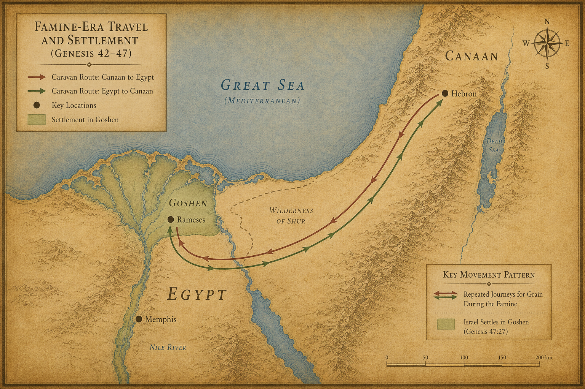
지도 12. 창세기 42~47장 배경: 기근기 가나안↔︎애굽 왕복 동선.
1 요셉이 파라오에게 나아가 아뢰었다.
“제 아버지와 형제들이 가나안 땅에서 왔습니다. 양 떼와 소 떼와 모든 소유를 이끌고 고센(Goshen, 이집트 나일 델타 동부) 땅에 와 있습니다.”
2 요셉이 형들 중에 다섯 명을 골라 파라오에게 소개했다.
3 파라오가 물었다.
“너희 생업이 무엇이냐?”
4 형들이 대답했다.
“주의 종들은 목자이며 우리 조상들도 그러했습니다. 가나안 땅에 큰 흉년이 심하여 풀이 없어 종들의 양 떼를 먹일 수 없게 되었습니다. 이 땅 고센에 머물도록 허락해 주십시오.”
5 파라오가 요셉에게 말했다.
“네 아버지와 형제들이 네게 왔으니,”
6 “이집트 땅이 네 앞에 있다. 가장 좋은 땅에 아버지와 형제들을 살게 하라. 고센 땅에 머물게 하고, 그들 중에 능한 자가 있거든 내 가축을 맡아 관리하게 하라.”
7 요셉이 아버지 야곱을 데리고 들어와 파라오에게 소개했다. 야곱이 파라오를 축복했다.
8 파라오가 야곱에게 물었다.
“연세가 어떻게 되십니까?”
9 야곱이 답했다.
“내 나그네 길의 세월이 백삼십 년입니다. 험한 세월을 살아왔습니다. 내 조상 아브라함과 이삭이 나그네로 살았던 세월에는 미치지 못하지만.”
파라오 앞에 선 130세 노인이었다. 그러나 그 눈빛에는 흔들림이 없었다. 자기 인생을 ’나그네 길’이라 부를 수 있는 사람만이 가질 수 있는 눈빛이었다.
10 야곱이 파라오를 다시 축복하고 물러났다.
11 요셉은 아버지와 형제들에게 이집트 최고의 땅, 라암셋(Rameses, 이집트 동부 나일 델타) 지역을 내어 주었다. 파라오의 명대로였다.
12 요셉은 아버지와 형제들과 아버지 집안 식구 수에 맞게 먹을 것을 공급했다.
이때의 파라오는 누구였을까? 학자들은 두 가지 설을 두고 갈린다. 힉소스 왕조설(15왕조, BC 1650~1550)이 우세한데, 셈족 계열의 외래 왕조였던 힉소스가 같은 셈족인 야곱의 식구를 이집트 동부 변경(고센)에 정착시킨 것이 자연스럽다고 본다. 중왕국 12왕조설(BC 1900년대)을 따르면 아메넴헤트 3세 즈음으로 추정된다.
13 큰 흉년은 더 깊어졌다. 온 땅에 먹을 것이 없었다. 이집트와 가나안이 함께 굶주려 기진해갔다.
14 요셉은 이집트 땅과 가나안 땅에서 먹을 것을 팔아 돈을 거두어들였다. 그 돈이 전부 파라오의 궁으로 들어갔다.
15 이집트와 가나안의 돈이 다 바닥났다. 이집트 사람들이 요셉에게 몰려왔다.
“먹을 것을 주십시오. 돈이 다 떨어졌다고 우리 앞에서 죽으라는 겁니까?”
16 요셉이 말했다.
“돈이 없으면 가축을 가져오시오. 가축으로 먹을 것을 드리겠소.”
17 사람들이 말과 양 떼와 소 떼와 나귀를 몰고 왔다. 요셉은 가축을 받고 먹을 것을 내주었다. 그 해가 다 그렇게 지나갔다.
18 이듬해 사람들이 다시 왔다.
“주인께 숨기지 않겠습니다. 돈도 가축도 이제 없습니다. 우리에게 남은 건 몸과 토지뿐입니다.”
19 “우리와 우리 토지를 먹을 것과 바꾸어 주십시오. 우리가 파라오의 종이 되고 우리 토지는 파라오의 것이 되겠습니다. 씨앗만 주시면 우리가 살아서 땅을 갈겠습니다. 땅이 황폐해지지 않도록.”
20 요셉은 이집트의 모든 토지를 파라오를 위해 사들였다. 큰 흉년이 너무 심해 이집트 사람들이 하나씩 땅을 팔았다. 땅이 다 파라오의 것이 되었다.
21 요셉은 백성들을 이집트 이 끝에서 저 끝까지 각 도시로 이주시켰다.
22 다만 제사장들의 땅만은 사지 않았다. 제사장들은 파라오에게서 정해진 몫을 받아 살았기 때문에 땅을 팔 필요가 없었다.
23 요셉이 백성에게 선포했다.
“보시오. 오늘 내가 여러분과 여러분의 토지를 파라오를 위해 샀소. 씨앗을 줄 테니 토지에 뿌리시오.”
24 “추수 때에는 오 분의 일을 파라오에게 바치시오. 나머지 오 분의 사는 여러분의 것이오. 밭에 뿌릴 씨앗으로, 가족의 먹을 것으로 쓰시오.”
25 백성들이 말했다.
“주께서 우리를 살리셨습니다. 주의 은혜를 입어 파라오의 종이 되겠습니다.”
26 요셉은 이것을 이집트 토지법으로 정했다. 추수의 오 분의 일은 파라오에게. 이 법은 오늘날까지 이어진다. 단, 제사장들의 땅만은 제외였다.
27 이스라엘 자손은 이집트 고센 땅에 자리를 잡고 살았다. 재산을 모으고 번성하여 크게 늘어났다.
28 야곱은 이집트에서 십칠 년을 더 살았다. 야곱의 나이가 백사십칠 세가 되었다.
29 죽을 날이 가까워 오자 야곱이 요셉을 불렀다.
“네가 나를 사랑한다면 네 손을 내 허벅지 아래에 넣고 맹세하거라. 나를 이집트에 묻지 마라.”
30 “내가 내 조상들과 함께 눕고 싶다. 나를 이집트에서 메어다가 선조들의 묘지에 장사하여라.”
요셉이 답했다.
“아버지의 말씀대로 하겠습니다.”
31 야곱이 말했다.
“내게 맹세하여라.”
요셉이 맹세했다. 이스라엘은 침상 머리에서 하나님께 경배했다.
다음 장 — 야곱이 병이 든다. 요셉이 두 아들 므낫세와 에브라임을 데리고 아버지에게 간다. 노인의 손이 엇갈려 작은 아들의 머리 위에 얹힌다.
1 그 후에 요셉에게 전갈이 왔다. “아버지가 편찮으십니다.”
요셉은 두 아들 므낫세와 에브라임을 데리고 달려갔다.
2 야곱에게 전해졌다. “아들 요셉이 왔습니다.”
이스라엘이 기력을 내어 침상에서 일어나 앉았다. 노쇠한 몸이었지만 그 눈빛은 살아 있었다.
3 야곱이 요셉에게 말하기 시작했다.
“전능하신 하나님이 가나안 땅 루스(Luz, 훗날의 벧엘)에서 내게 나타나 복을 주시며 말씀하셨다.”
4 “’내가 너를 번성하게 하고 네 자손을 많게 하여 여러 민족이 되게 하겠다. 이 땅을 네 뒤에 오는 자손에게 영원한 물려받을 땅으로 주겠다’고 하셨다.”
5 야곱이 요셉의 눈을 바라보았다.
“내가 이집트에 오기 전, 가나안 땅에서 네게서 태어난 두 아들 — 에브라임과 므낫세 — 그 아이들은 내 아들이다. 르우벤과 시므온처럼 내 것이다.”
6 “그들 이후에 네게서 태어날 자녀들은 네 것이다. 그들은 형들의 이름 아래서 물려받을 땅을 받을 것이다.”
7 야곱의 목소리가 잠깐 낮아졌다.
“내가 밧단에서 돌아올 때 라헬이 가나안 땅에서 내 곁을 떠났다. 에브라다(Ephrath, 베들레헴, 예루살렘 남쪽)로 가는 길에서였다. 나는 그를 거기, 에브라다 — 지금의 베들레헴 가는 길에 묻었다.”
라헬. 야곱의 가장 깊은 상처. 아직도 아팠다.
8 이스라엘이 눈을 들어 요셉의 아들들을 바라보았다.
“이들이 누구냐?”
9 요셉이 말했다.
“하나님이 여기서 내게 주신 아들들입니다.”
야곱이 말했다.
“내게로 데려오너라. 내가 축복해주겠다.”
10 이스라엘의 눈이 노령으로 어두워져 있었다. 잘 분간하지 못했다.
요셉이 아들들을 할아버지 가까이 데려갔다. 이스라엘이 그들을 껴안고 입을 맞추었다.
11 이스라엘이 요셉에게 말했다.
“네 얼굴을 다시 보리라고는 생각도 못 하였더니, 하나님이 네 자손까지 내게 보이셨구나.”
12 요셉이 아들들을 할아버지의 무릎 사이에서 내려서게 하고 땅에 엎드려 절했다.
13 요셉이 두 아들을 자리에 세웠다. 오른편에 므낫세, 왼편에 에브라임. 이스라엘의 오른손이 므낫세에게, 왼손이 에브라임에게 닿도록 배치했다. 므낫세가 첫째 아들이었다. 순서대로라면 오른손의 축복이 므낫세에게 가야 했다.
14 그런데 이스라엘이 손을 엇갈렸다.
오른손이 에브라임(작은 아들)의 머리 위로 갔다. 왼손이 므낫세(첫째 아들)의 머리 위로 갔다.
의도적인 교차였다. 눈이 어둡다고 착각한 것이 아니었다.
15 이스라엘이 요셉을 축복하며 말했다.
“내 조상 아브라함과 이삭이 섬기던 하나님, 내가 태어난 날부터 오늘까지 나를 기르신 하나님,
16 모든 환난에서 나를 건지신 천사께서 이 아이들에게 복을 주시기를 구합니다. 내 이름과, 내 조상 아브라함과 이삭의 이름이 이들에게 불리기를 빕니다. 이들이 땅에서 크게 번성하기를.”
17 요셉이 보니 아버지의 오른손이 에브라임의 머리 위에 있었다. 잘못되었다고 생각했다.
요셉이 아버지의 손을 잡아 에브라임의 머리에서 므낫세의 머리로 옮기려 했다.
“아버지, 이 아이가 첫째 아들입니다. 오른손을 이 아이에게 얹으십시오.”
18 이스라엘이 고개를 저었다.
“안다, 아들아. 나도 안다.”
19 “므낫세도 한 민족이 되고 크게 될 것이다. 그러나 그 동생이 그보다 더 커질 것이다. 그 자손이 여러 민족을 이룰 것이다.”
야곱은 알고 있었다. 오랜 세월 동안 하나님은 늘 이런 방식으로 일하셨다. 이삭이 이스마엘보다, 야곱이 에서보다 선택받은 것처럼 — 인간의 관습이 아니라 하나님의 선택이 기준이었다.
20 그날 야곱이 축복했다.
“이스라엘이 이 이름들로 축복하여 말하리라. ‘하나님이 너를 에브라임과 므낫세처럼 되게 하시기를.’”
이렇게 에브라임이 므낫세보다 앞서게 되었다.
21 이스라엘이 요셉에게 말했다.
“나는 이제 죽겠다. 그러나 하나님이 너희와 함께 계셔서, 너희 조상의 땅으로 돌아가게 하실 것이다.”
22 “내가 네 형제들보다 한 몫을 더 주노니 — 내가 칼과 활로 아모리 사람의 손에서 빼앗은 세겜(Shechem, 팔레스타인 나블루스) 땅이다.”
세겜. 요셉이 훗날 묻힐 땅이다. 야곱은 그것을 미리 요셉에게 주었다.
다음 장 — 야곱이 마지막 힘을 모아 열두 아들을 불러 모은다. 각 지파를 향한 예언이자 축복이자 때로는 냉혹한 심판이 시작된다.
1 야곱이 아들들을 불렀다.
“모두 모이거라. 너희가 훗날에 당할 일을 내가 말하리라.”
2 “야곱의 아들들아, 모여 들어라. 너희 아버지 이스라엘에게 귀를 기울여라.”
침상에 앉은 노인의 목소리였다. 그러나 그 말들은 시(詩)였다. 수천 년을 건너올 예언이었다.
3 “르우벤아, 너는 내 첫째 아들이요, 내 힘이요, 내 능력의 시작이다. 위엄이 뛰어나고 권능이 탁월하다.”
4 “그러나 물이 끓어 넘치듯 탁월하지 못하리라. 네가 아버지의 침상에 올라 내 침상을 더럽혔다.”
르우벤은 아버지의 첩 빌하와 잠자리를 함께한 자였다(35장). 야곱은 잊지 않았다. 그 사건은 첫째 아들의 권리를 빼앗아 갔다.
5 “시므온과 레위는 형제다. 그들의 칼은 폭력의 도구다.”
6 “내 혼아, 그들의 모의에 들어가지 마라. 내 영광아, 그들의 집회에 참여하지 마라. 그들이 분노하여 사람을 죽이고 제멋대로 소의 발목 힘줄을 끊었다.”
7 “저주를 받을 그 분노, 맹렬한 그 진노. 내가 그들을 야곱 중에 나누고 이스라엘 중에 흩으리라.”
세겜 사건의 후유증이었다. 두 형제는 누이 디나를 위해 복수했지만, 그 방식은 너무 잔혹했다. 야곱은 그것을 기억했다.
8 “유다야, 너는 형제들의 칭찬을 받을 자다. 네 손이 원수의 목을 잡을 것이요, 네 아버지의 아들들이 네 앞에 절하리로다.”
9 “유다는 사자의 새끼로다. 내 아들아, 너는 먹이를 먹고 올라갔도다. 웅크리고 엎드린 모습이 수사자 같고 암사자 같으니 누가 감히 건드리랴.”
10 “왕의 지팡이가 유다를 떠나지 아니하며, 통치자의 지팡이가 그 발 사이에서 떠나지 아니하리니, 실로가 오실 때까지 그러하리라. 그에게 모든 백성이 복종하리로다.”
‘실로(Shiloh)’ — 해석이 나뉘는 단어다. 그러나 수천 년 뒤 이 구절은 메시아 예언의 뿌리로 읽힐 것이다. 유다 지파에서 다윗이 나오고, 다윗의 후손에서 또 다른 왕이 나올 것이다.
11 “그의 나귀를 포도나무에 매며 나귀 새끼를 아름다운 포도나무에 맬 것이요, 그의 옷을 포도주에 빨며 그 복장을 포도즙에 빨리로다.”
12 “그의 눈은 포도주로 인하여 붉겠고 그의 이는 우유로 인하여 희리로다.”
13 “스불론은 해변에 머무르리니, 그의 해변은 배 매는 곳이 될 것이요, 그의 경계가 시돈(Sidon)까지 이르리로다.”
14 “잇사갈은 튼튼한 나귀가 양 우리 사이에 웅크림이로다.”
15 “그는 쉼이 좋고 땅이 아름다움을 보고 어깨를 내려 짐을 메고 세금 바치는 종이 되리로다.”
16 “단은 이스라엘의 한 지파처럼 자기 백성을 심판하리로다.”
17 “단은 길의 뱀이요, 샛길의 독사로다. 말발굽을 물어서 그 타는 자로 뒤로 떨어지게 하리로다.”
18 야곱이 잠깐 멈추었다. 그리고 낮게 중얼거렸다.
“여호와여, 나는 주의 구원을 기다립니다.”
예언 중간에 흘러나온 기도였다. 노인은 먼 미래를 보면서 하나님을 불렀다.
19 “갓은 군대의 추격을 받으리니, 그는 도리어 추격하리로다.”
20 “아셀에게서 나오는 음식은 기름지고 그는 왕의 진미를 공급하리로다.”
21 “납달리는 놓인 암사슴이라, 아름다운 소리를 내는도다.”
22 “요셉은 무성한 가지, 샘 곁의 무성한 가지로다. 그 가지가 담을 넘었도다.”
23 “활 쏘는 자들이 그를 아주 괴롭히며 적대하며 쏘았으나,”
24 “그의 활이 도리어 굳세고 그의 팔이 힘을 얻었으니, 야곱의 전능자의 손으로 말미암음이라. 그로부터 이스라엘의 반석인 목자가 나도다.”
25 “네 아버지의 하나님께로 말미암나니 그가 너를 도우실 것이요, 전능자로 말미암나니 그가 네게 복을 주실 것이라.”
“위로 하늘의 복과, 아래로 깊은 샘의 복과, 젖먹이는 복과 태의 복이 네게 있을 것이로다.”
26 “네 아버지의 축복이 내 선조의 축복보다 나아서 영원한 산이 한이 됨같이 이 축복이 요셉의 머리로 돌아오며 그 형제 중 뛰어난 자의 정수리로 돌아오리로다.”
열두 아들 중 가장 길고 가장 풍성한 축복이었다. 야곱은 말하지 않았지만, 모두가 알았다. 이 아들이 특별했다는 것을.
27 “베냐민은 물어뜯는 이리라. 아침에 빼앗은 것을 먹고, 저녁에 움켜쥔 것을 나누리로다.”
28 이것이 이스라엘의 열두 지파다. 이것이 그들의 아버지가 그들에게 한 말이다. 각 사람에게 적합한 축복으로 축복했다.
29 야곱이 그들에게 명했다.
“나는 이제 내 조상에게로 돌아가리니, 나를 헷 족속 에브론의 밭 막벨라(Machpelah, 헤브론) 굴에 장사하라.”
30 “그 굴은 가나안 땅 마므레 앞 막벨라 밭에 있는 것으로, 아브라함이 헷 족속 에브론에게서 그 밭과 함께 사서 자기 소유 묘지로 삼은 것이다.”
31 “거기 아브라함과 그 아내 사라가 묻혔고, 이삭과 그 아내 리브가도 거기 묻혔으며, 나도 레아를 거기 묻었다.”
32 “그 밭과 거기 있는 굴은 헷 족속에게서 산 것이다.”
33 야곱이 아들들에게 명하기를 마쳤다. 그는 발을 침상 위에 거두었다. 숨이 떨어졌다.
그렇게 이스라엘이 그 조상에게로 돌아갔다.
다음 장 — 요셉이 아버지의 얼굴에 엎드려 운다. 대부대가 가나안으로 향한다. 막벨라 굴에 야곱이 묻힌다. 그리고 창세기가 막을 내린다.
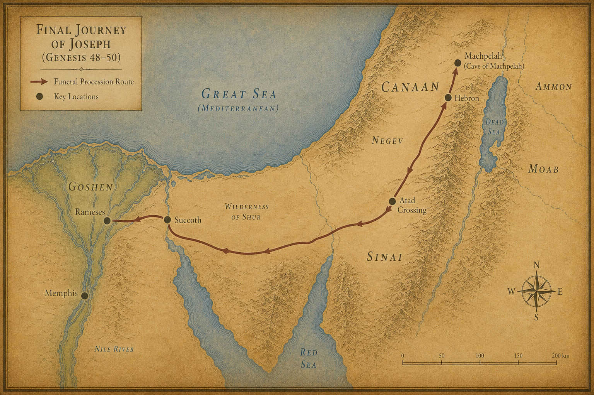
지도 13. 창세기 48~50장 배경: 야곱 장례 행렬(애굽~막벨라).
1 요셉이 아버지의 얼굴에 엎드렸다. 울었다. 입을 맞추었다.
2 요셉이 자기 신하 의원들에게 명하여 아버지의 몸에 썩지 않게 하는 향료를 바르게 했다. 의원들이 이스라엘에게 향을 입혔다.
3 사십 일이 걸렸다. 향을 입히는 데 드는 기간이었다. 이집트 사람들은 칠십 일 동안 야곱을 위해 슬피 울었다.
이방 나라가 히브리 족장의 죽음을 애도했다. 요셉이 이집트에서 쌓은 세월의 무게였다.
4 통곡의 날이 지나자 요셉이 파라오의 궁 신하들에게 아뢰었다.
“내가 파라오의 은혜를 입었다면 부탁드립니다. 파라오에게 전해 주십시오.”
5 “아버지께서 돌아가시기 전에 내게 맹세하게 하시며 말씀하셨습니다. ’내가 가나안 땅에 파두었던 묘지에 장례를 치러라’고. 부탁이오니 내가 올라가 아버지를 장사하고 돌아오게 해주십시오.”
6 파라오가 답했다.
“올라가서 네 아버지를 맹세대로 장례를 치러라.”
7 요셉이 올라갔다. 파라오의 모든 신하, 파라오 궁의 지도자들과 이집트 땅의 지도자들이 함께했다.
8 요셉의 집안과 형제들과 아버지의 집안도 함께했다. 고센 땅에 남은 건 어린아이들과 양 떼와 소 떼뿐이었다.
9 병거와 기병이 따라갔다. 큰 대부대였다.
10 그들이 요단강 건너편 아닷(Atad) 타작마당에 이르렀다. 거기서 크게 통곡하며 슬피 울었다. 요셉이 아버지를 위해 칠 일 동안 슬피 울었다.
11 그 땅 가나안 사람들이 아닷 타작마당의 통곡을 보고 말했다.
“이것은 이집트 사람들의 큰 슬픔이로다.”
그래서 그 곳 이름을 아벨미스라임(Abel Mizraim, 요단강 근처) 이라 불렀다. ’이집트인들의 슬픔’이라는 뜻이었다.
12 야곱의 아들들이 아버지의 명대로 했다.
13 그들이 야곱을 가나안 땅으로 메어다가 마므레 앞 막벨라(Machpelah, 헤브론) 밭 굴에 장례를 치렀다. 아브라함이 헷 족속 에브론에게서 묘지로 사들인 바로 그 굴이었다.
14 장례를 마치고 요셉이 이집트로 돌아왔다. 형제들과 함께 올라갔던 모든 사람이 함께 돌아왔다.
15 그런데 형제들 사이에 불안이 피어올랐다.
‘아버지가 살아 계실 때는 괜찮았다. 그런데 이제 아버지가 돌아가셨다. 요셉이 우리를 미워하여 우리가 그에게 행한 모든 악을 갚으면 어쩌지?’
16 형제들이 요셉에게 전갈을 보냈다.
“아버지께서 돌아가시기 전에 명하셨습니다.”
17 “’너희는 요셉에게 이렇게 말하라. 네 형들이 네게 악을 행하였으나 이제 그 허물과 죄를 용서하라’고 하셨습니다. 우리는 주의 종들입니다. 부탁드립니다. 아버지의 하나님을 섬기는 종들의 죄를 용서해 주십시오.”
실제로 야곱이 그런 말을 남겼는지는 본문에 없다. 형제들이 두려움에 꾸며낸 것이었을 수도 있다. 어쨌든 그들은 아직도 22년 전 그 날을 놓지 못하고 있었다.
18 형제들이 직접 요셉 앞에 와서 엎드렸다.
“우리가 주의 종입니다.”
19 요셉이 그들을 바라보았다. 눈에 눈물이 맺혔다.
“두려워하지 마십시오. 내가 하나님을 대신할 수 있겠습니까?”
20 “당신들은 나를 해하려 하였으나, 하나님은 그것을 선으로 바꾸셨습니다. 오늘과 같이 많은 백성의 생명을 구하게 하시려는 것이었습니다.”
21 “이제 두려워하지 마십시오. 내가 당신들과 당신들의 자녀를 먹여 드리겠습니다.”
요셉이 형들을 위로하며 다정하게 말했다.
22년 전의 구덩이, 은 이십에 팔리던 그 날, 이집트의 감옥 — 그 모든 것이 이 한마디로 녹아내렸다. 하나님이 그 모든 고통을 선으로 바꾸셨다는 고백이었다.
22 요셉은 아버지 집안과 함께 이집트에 살았다. 요셉이 백십 세를 살았다.
23 요셉은 에브라임의 3대 자손까지 보았다. 므낫세의 아들 마길의 자녀들도 요셉의 무릎에서 태어났다.
24 요셉이 형제들에게 말했다.
“나는 이제 죽겠습니다. 그러나 하나님이 반드시 당신들을 돌보시고 당신들을 이 땅에서 이끌어 내시어 아브라함과 이삭과 야곱에게 약속하신 땅으로 가게 하실 것입니다.”
25 요셉이 이스라엘 자손에게 맹세시켰다.
“하나님이 반드시 당신들을 돌보실 것입니다. 그때에 내 해골을 여기서 메고 올라가겠다고 맹세하십시오.”
요셉은 이집트의 총리였다. 파라오의 두 번째 사람이었다. 그러나 마지막 소원은 약속의 땅에 묻히는 것이었다. 그 뼈가 어디에 속하는지 그는 알고 있었다.
26 요셉이 백십 세에 죽었다. 썩지 않게 하는 향료를 입혔다. 이집트에서 입관했다.
요셉이 죽고 약 400년 후 출애굽이 일어난다. 출애굽기에서 모세를 박해하는 새 파라오는 보통 람세스 2세(BC 1279~1213) 또는 그 직전 세티 1세로 추정된다. 그 사이 이집트에서는 힉소스가 쫓겨나고 신왕국(18·19왕조)이 들어섰으며, “요셉을 알지 못하는 새 왕”(출 1:8)이 등장한다.
그렇게 창세기의 막이 내린다.
하늘과 땅의 창조로 시작한 이 책이, 이집트의 관 하나로 끝난다. 그러나 그것은 끝이 아니었다. 요셉의 뼈는 이집트에 누워 있었지만, 그 뼈는 기다리고 있었다. 약속이 이루어질 날을.
400년 후, 한 민족이 노예로 신음할 것이다. 그리고 하나님이 다시 움직이실 것이다. 요셉의 해골은 광야 40년을 함께 건너 약속의 땅 세겜(Shechem, 팔레스타인 나블루스)에 묻히게 된다. 창세기가 뿌린 씨앗이 출애굽기에서 싹을 틔울 것이다.
400년 후 — 한 아이가 나일 강 갈대 상자 속에 떠내려간다. 그의 이름은 모세다. 그러나 그 이야기는 다음 책(출애굽기)의 몫이다.